积极斯多葛主义心理学重释医美消费与改善型生活消费
2026-07-20
作者：sooogooo
你可以追求更好，但不必先把自己判定为不够好。
本书是面向成年消费者的独立写作。它以医疗美容消费为主要案例，延伸讨论其他改善型生活消费。书中“积极斯多葛主义心理学”是作者提出的原创解释框架，并非既有临床流派、诊断工具或治疗方法。
医学、心理健康、法律和监管信息具有边界与时效。本书不能替代合格专业人员的面诊、知情同意、心理健康评估或法律意见。涉及医疗美容服务时，请以现行法律、医疗机构资质和个体化专业判断为准。
第一版，2026 年。事实审校日期和可追溯参考文献见本书末尾及仓库
research/ 目录。
有人把医美写成欲望的陷阱，有人把它写成自我投资的胜利。两种写法都太轻松：前者默认人一旦想改善就被操控，后者默认人只要愿意消费就完成了自主。
真实的处境更麻烦，也更值得认真对待。一个人可能真心希望气色更好、某处更协调、恢复一段关系中的自信，或在年龄变化中保留熟悉感；同时，她也可能被滤镜、比较、催促、销售话术和“来不及了”的时间感推着走。愿望和压力可以同时存在。承认这一点，不等于替任何消费背书。
本书不替你决定要不要做医美。它要做的是把决定重新放回一个更宽的桌面：身体、钱、时间、关系、恢复期、信息质量，以及你在结果并不完全由自己决定时，如何仍然对自己的选择负责。
书中把这种做法叫作“积极斯多葛主义心理学”。这不是一个被验证的心理学流派，而是一套作者提出的阅读框架。它从斯多葛传统中借来一个简单但经常被误解的问题：哪些事情值得我用行动和判断去负责，哪些事情不应被我占有为结果？
它不要求你拒绝变美，也不要求你对外貌无动于衷。它要求的只是：不要把改善愿望变成对自己的起诉书；不要把广告变成第二个医生；不要把一次消费当作人生价值的裁决；也不要在恢复期最脆弱的时候，用下一次消费处理上一层不安。
读者会在每章看到三种不同的话：有些是可核查的事实，有些是有限的推断，还有些是作者的价值判断。它们不应该混在一起。事实需要来源；推断需要边界；立场需要坦白。
如果这本书有一个愿望，那就是让你在想改善时，拥有更多而不是更少的自由：能问，能等，能拒绝，能改变主意，也能在做出选择后不过度把自己交给结果。
框架标签：积极斯多葛框架（原创解释框架）
多数改善愿望起初很轻。有人想让皮肤状态稳定一些，有人希望拍照时不总躲开镜头，有人想在换工作、结束一段关系、进入新的年龄阶段时，给自己一点重新开始的感觉。这样的愿望并不需要接受道德审判。人会整理房间、学习一项技能、调整衣着，也会关注外表。对改善的兴趣不是虚荣的证据。
真正值得警觉的变化，发生在愿望被改写为生存任务的时候。它不再是“我想试试能否改善”，而变成“如果不改善，我就会落后”“如果这一次不做，我就没有资格见人”“如果结果不够明显，就说明我又失败了”。此时，消费不只是消费，身体不只是身体；它们被用来处理价值感、关系焦虑、年龄恐惧和未来的不确定。
这本书不把这种状态叫作“你不够理性”。理性这个词常常被用来羞辱已经很辛苦的人。更准确的说法是：当一个选择被赋予了过多的救赎功能，判断的重量会失衡。项目价格、恢复时间、风险、替代方案和退出空间都会显得不那么重要，因为它们似乎在和一个更大的问题竞争：我到底够不够好。
积极斯多葛框架在这里先做一件不那么激动人心、却很必要的事：把一件被放大到近乎决定人生的事，重新放回它应有的比例。它不是要你降低标准，而是提醒你区分三个不同的句子。
我想改善一处外在状态。
我希望改善能帮助我过得更自在。
只有改善成功，我才值得自在。
前两句可以被讨论、被检验、被安排。第三句则把人的价值绑到了一个不完全可控的结果上。它会让任何不确定都变得像威胁，让任何建议都更容易被听成命令。
同一个项目，在不同时间对人的意义并不相同。为了避免把动机简单分成“真实”或“虚假”，可以观察它承载了多少重量。
第一种是使用重量。它关心的是具体生活：某处困扰是否在真实场景中反复出现，改善是否可能让生活更便利、更舒适或更符合自己的表达。这一层不必被贬低。外表和身体本来就在社会生活中发挥作用。
第二种是关系重量。一个人可能希望在亲密关系、职场、社交媒体或家庭评价中少一些被动。问题不在于关系影响了选择，而在于是否能把“我希望更有底气”与“我必须满足某人的标准”分开。关系可以是信息来源，不能自动成为裁判席。
第三种是时间重量。生日、婚礼、毕业、升职、分手、疾病恢复、同学聚会，都会让改善看起来特别紧迫。时间节点有时确实重要，但它也容易让人误把“我想在那个日子前感觉好一点”当成“错过这个日子就再也没有机会”。
第四种是救赎重量。这是最沉的一层：把一个外在改变想象成对孤独、失败、衰老、被忽视或人生停滞的总解决方案。它不是道德问题，而是范围问题。一项消费很难承受如此多的任务。它也许能带来某种具体变化，却不能保证关系会自动变好、职业会自动上升、过去的伤会自动消失。
救赎重量越大，越需要把决定放慢。不是因为“想得太多”不好，而是因为你正在让一个有限的工具承担无限的职责。
古典斯多葛传统常被简化为一句话：只管你能控制的事。现实中，这句话若被用得粗暴，会变成另一种苛责。身体反应不完全由意志控制，社会审美不完全由个人改变，恢复期也不会因为你足够坚强就失去波动。要求人在这些地方“控制好自己”，反而会增加羞耻。
本书采用的是可控梯度，而不是可控二分。你可以负责的，是是否收集信息、是否明确预算、是否告诉医生自己的真实期待、是否保留第二意见、是否允许自己暂停。你可以影响的，是沟通质量、恢复安排、支持系统、信息来源和触发自己焦虑的内容环境。你不能占有为结果的，是每个人的评价、时间的流逝、身体的全部反应，以及一个改变是否能替你解决所有人生问题。
这三层的意义在于，把“我要变好”从一句无法完成的宣言，变成一组可以负责的行动。它让人从“我必须保证结果”转向“我是否把能做的准备做到了”。前者会制造控制幻觉，后者才会给人真实的行动感。
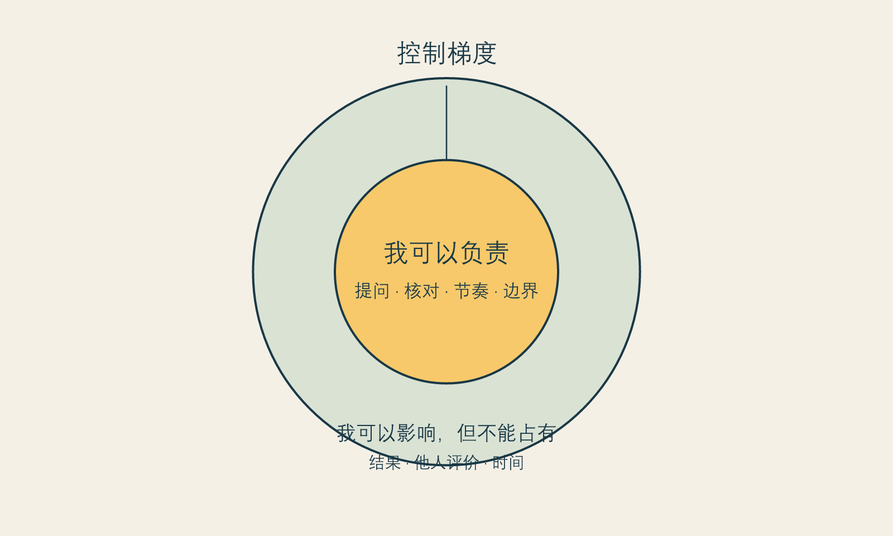
图 1 可控梯度。图为作者原创，用于说明本书的解释框架，不是医学评估工具。
围绕医美最常见的道德争论，往往让人只能在两个位置里选一个：要么承认自己被社会操控，要么证明自己百分之百“悦己”。这两个位置都不够诚实。人的愿望通常不是单一来源。你可以既享受变化，也在意别人的眼光；既有具体困扰，也受到了平台审美的影响；既希望被看见，也不愿意被消费文化定义。
承认复杂，并不会削弱自主。恰恰相反，自主不是证明动机纯净，而是即使动机混杂，也能辨认自己愿意承担什么、不愿承担什么。一个成熟的决定不需要宣称“我完全不受影响”；它只需要不把影响偷偷变成命令。
因此，本书反复使用“检验”而不是“揭穿”。“揭穿”暗示你必然被欺骗；“检验”承认你仍然拥有判断。前者把读者放在被动位置，后者邀请读者成为自己选择的共同作者。
下面的工具不是心理测验，也不会给出“适合”或“不适合”的结论。它只为决定腾出空间。写下答案时，不需要展示给任何人。
具体地说，我想改变什么？
不写“变漂亮”，而写一个能被描述的场景：例如“我在视频会议中总想遮住某处”“我想让化妆更省时间”。
如果完全不消费，我希望生活中仍发生什么变化？
这个问题不是让你放弃项目，而是防止你把所有期待都交给项目。
如果消费后变化并不如想象，我仍愿意承担哪些代价？
写下时间、钱、恢复安排、情绪波动和关系协调，而不只写价格。
谁会因为我的决定高兴，谁会失望？这些反应是否应该替我做决定？
把关系重量从内心的雾里拿出来。
我能否把这件事放置两周，再回来看同一组答案？
能够等待不等于没有欲望；它表明欲望不必立刻统治行动。
如果写完后仍然想改善，这并不说明卡片失败。如果写完后发现自己更想处理的是睡眠、关系、工作压力或一段长期的自我批评，它也不说明原来的愿望是假的。它只是帮助你把不同的问题放回不同的容器。
改善愿望之所以会变得沉重，常不是因为它本身过分，而是因为它被赋予了太多职责。你希望它让你在拍照时自在、在见客户时更有底气、在亲密关系里少一点警觉、在某个年龄节点不那么慌张。这些愿望可以同时存在。但当它们被压缩成“只要做了这件事，一切就会好”，项目就从选择变成了救赎任务。
救赎任务有一个典型信号：你几乎无法想象“暂时不做”以后还能怎样生活。你不是只担心一个外观问题，而是觉得自己会因此失去机会、被排除在某种生活之外，或再也不能以现在的样子被喜欢。此时，最需要被处理的不一定是项目本身，而是那个被它承接的巨大命题。
可以把一句“我必须改善”拆成三句：
第一句帮助愿望具体化；第二句让恐惧有名字；第三句打开替代路径。替代路径不意味着你应该放弃消费，它意味着选择不再被包装成唯一出口。有时替代是更多信息，有时是调整日程、减少镜头、换一种表达方式、让预算留出余地，或和可信的人讨论自己真正担心的部分。
很多读者会在两种自我否定之间摇摆：一边觉得自己在意外貌太肤浅，另一边又觉得既然这么痛苦，就一定有一个必须立刻解决的严重问题。两种说法都把复杂经验推向极端。
外貌困扰可以是真实的，不必先通过“足够严重”的考试；它也可以不是疾病、不是道德缺陷，更不自动推出某一个医疗选择。把感受承认下来，才有机会决定它适合被怎样回应。情绪需要被尊重，行动需要被核对。这两件事可以同时成立。
积极斯多葛主义在这里提供的是一种温和的责任排序：我对自己的感受负责，不等于我必须立即满足每一个由感受推动的行动；我愿意改善生活，也不等于我同意把自己的价值抵押给改善结果。前者是行动能力，后者是价值边界。它们合在一起，才不是空泛的“爱自己”。
如果你发现一个问题已经占据许多天，不妨先为它规定一个较小的下一步。不是“我必须决定做不做”，而是“我先用二十分钟写下自己的问题”；不是“我要找到最好的方案”，而是“我先确认哪些问题需要由合格专业人员解释”；不是“我要让所有人认可”，而是“我先确定谁有资格参与这个话题”。
尺度变小，并非把问题看轻。恰恰相反，它是在拒绝让焦虑一次性吞没你的时间、预算和判断。高承诺决定的成熟，不表现为立刻得出最勇敢的结论，而表现为愿意把结论拆成可承担的步骤。
把本章的卡片放一周。期间不要求自己不看镜子、不浏览内容，也不要求自己最后一定改变主意。七天后，只回答四个问题：
回看不是冷却掉欲望的技术，而是给欲望一段不必立即表演的时间。
本章提出“改善愿望的四种重量”和“可控梯度”，属于作者的解释框架和价值立场，而不是对任何个人动机的诊断。关于比较环境可能放大身体意象困扰的研究，可支持我们谨慎对待持续比较；但它不能证明某个具体人为何做出某个具体选择。[推断 I-001；立场 N-001]
下一章将进一步讨论比较。重点不是责怪平台或责怪使用平台的人，而是理解为什么镜子、相机、算法和同龄人的展示，能让一个原本有限的改善愿望突然变得那么急。
框架标签：积极斯多葛框架（原创解释框架）
过去，人主要在家庭、学校、街道和工作场所里看见别人。今天，比较常常从醒来后第一次打开屏幕就开始：自然光下的皮肤、被修过的鼻梁、恢复期被剪掉的过程、一个月后的对比照、在相似年龄里看似更“成功”的生活。问题不在于屏幕里的每张图都虚假，而在于它们被组织成一种几乎没有停顿的比较环境。
镜子原本只能反射此刻的你。数字镜像同时带来更多东西：别人经过筛选的瞬间、平台推荐的密度、可被放大的局部、可被纠正的实时预览，以及“你本来可以更像谁”的暗示。它把审美从偶尔的社会互动，变成了可以反复点击、反复放大的日常任务。
一项2024年系统综述纳入25项研究、共13,731名参与者，讨论社交媒体、身体意象不满和考虑美容手术之间的关联。作者同时提醒，研究中的平台、样本和方法差异很大，因此不能把这种关联写成简单因果。(事实 F-004； Mironica 等 2024年) 另一项2025年荟萃分析汇总83项研究和55,440名参与者，报告在线社会比较程度与更高身体意象困扰之间存在中等强度关联；这仍然是关联结果，不说明任何一个人的焦虑由平台单独造成。(事实 F-005； Bonfanti 等 2025年)
对读者来说，最有用的结论不是“社交媒体害人”或“你不要看”，而是：比较具有环境性。它会在特定条件下变得更强，例如疲劳、孤独、即将出席重要场合、刚收到外貌评价、刚看到某种前后对比，或者正在被限时优惠追赶。你不必把比较当作人格缺陷；更有效的是识别它什么时候正在接管你的注意力。
比较最难处理的地方，是它经常带着证据感。你确实能看见对方皮肤更稳定、轮廓更清晰、镜头感更强；你也确实知道外貌会影响他人的第一印象。于是，大脑很容易把“我注意到了差异”推进为“我必须消除差异”。
这里发生了至少三次跳跃。
第一次，从差异跳到缺陷。差异是真实的，但它不自动构成需要纠正的问题。一个人照片中的某处更突出，可能来自角度、表情、光线、妆容、滤镜、遗传、生活条件或选择。差异说明你和别人不同，不说明你落后。
第二次，从缺陷感跳到唯一方案。即使一个人确实对某处长期不满意，解决路径也不必自动收窄为某个医疗项目。信息、造型、休息、关系支持、心理支持、等待，甚至什么都不做，都是可以被讨论的路径。不同路径的成本和意义不同，不存在一个适合所有人的标准答案。
第三次，从一次选择跳到永久身份。当一个人说“我就是不如她”“我这种脸不配这样穿”，她已经不在讨论一个具体改变，而是在给自己写一条固定的身份判决。积极斯多葛框架不要求你强行喜欢每一处外表；它只拒绝让一处外表拥有解释整个人生价值的权力。
2009年的一项荟萃分析也发现，社会比较与身体不满意相关，并指出这种关联在一些人群中更强。(事实 F-006； Myers 和 Crowther 2009年) 这类研究无法告诉我们哪一次刷屏会导致哪一次消费，却足以提醒我们：在高比较状态下做重大、不可逆或代价高的决定，应当比平时多保留一点时间。
讨论滤镜时，人们常陷入一个很窄的真假辩论：图片修过就是欺骗，没修过就是真实。对消费者而言，更关键的问题是展示的可比性。
一张图即使没有后期处理，也可能不适合作为决策依据：它也许只呈现了最有利的角度，也许省略了恢复过程，也许没有说明拍摄设备、妆发、光线、时间跨度和个体差异。反过来，一张经过创作的图片也不一定毫无价值，它可以提供审美灵感。问题在于，灵感不能承担医疗承诺。
当平台内容从“我喜欢这种风格”滑向“我需要复制这个结果”，比较就开始变得昂贵。昂贵不只是指钱，还包括把注意力从自己的生活抽走。你开始在每一个镜面、摄像头和聊天窗口中监控自己，仿佛别人都拿着一把同样严格的尺子。实际上，多数人并没有持续审查你；但持续比较会让这种审查在心里变得真实。
2025年的系统综述指出，高视觉性、重外貌的社交媒体使用与自我客体化和身体意象困扰有关，同时也强调相关研究数量和整合模型仍有限。(事实 F-013； Sarda 等 2025年) 这句话的重点不在于制造新的恐惧，而在于给读者一个更诚实的提醒：如果某种内容让你开始只从外部视角打量自己，减少接触不是逃避，而是调整信息环境。
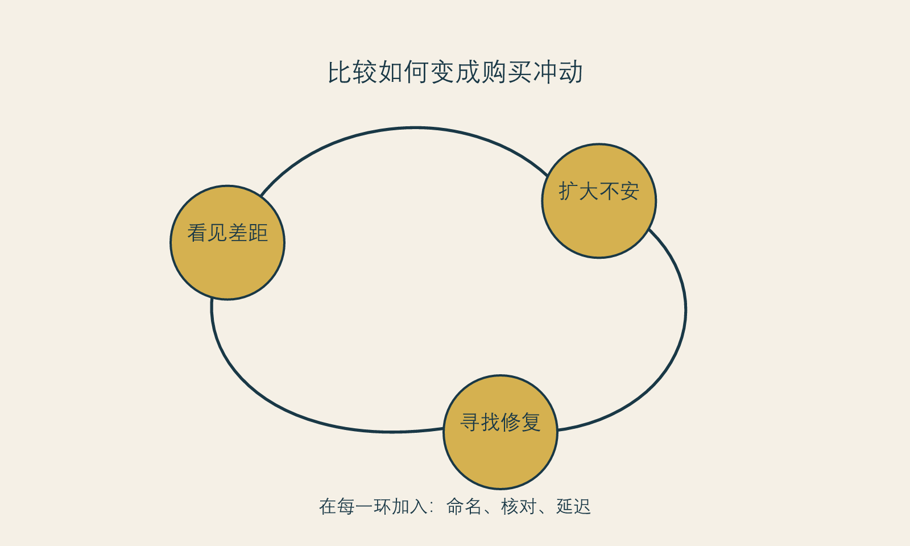
图 2 改善循环。图为作者原创，用于识别决策压力的可能循环，不描述诊断或因果链。
比较并不一定有害。它可以提供信息：你喜欢什么风格，什么状态让你感到有精神，什么表达方式与你的生活不相称。问题在于信息何时变成命令。下面四个转换动作，可以把比较从命令改回信息。
把对象从“别人”换成“场景”。 与其问“她为什么比我好看”，不如问“我在什么场景里感到最不自在”。前一个问题没有终点，后一个问题可能带来具体而有限的答案。
把时间从“现在”拉回“重复”。 一次冲动通常在几个小时内很大。把同一个愿望放到两个不同状态里再看：休息后、工作日后、与朋友见面后、离开平台一周后。重复出现的困扰不一定需要消费，但比一次刷屏后的冲动更值得认真对待。
把视觉从“局部”放回“整体”。 平台擅长把脸拆成部位，把身体拆成参数。生活不是这样发生的。你在关系、工作、运动、表达和休息中的感受，比一张放大的局部图更接近你的真实生活。
把行动从“立刻改变”换成“先减少触发”。 退出一个不断推送前后对比的账号、在情绪低落时不刷相关内容、给购物车加一段等待期，都不是软弱。它们是在保护决定的时间质量。
当你发现自己在十五分钟内连续查看同类内容、反复放大自己的局部、立刻搜索项目价格或强烈想预约时，可以做一次简短暂停：
这个协议不是为了把每个愿望拖到消失。它是为了让愿望经过一个不被算法、疲劳和紧迫感占领的时刻。如果它仍然存在，它会以更清楚的形态回来。
比较常被想象成一个简单的上下判断：她比我好，我不如她。但在数字环境中，它更像是一套连续的编辑流程。你看见的不是另一个人的完整生活，而是一个被选择过的表情、光线、角度、恢复阶段、消费路径和情绪结论。即使内容没有修图，它也可能经过时间与叙事的修剪。人会自然拿自己最没有准备的一刻，去对照别人最适合被展示的一刻。
因此，比较带来的痛苦不必说明你嫉妒、脆弱或不够自信。它可能只是说明你在一个不断提供可比画面的环境中，暂时失去了比例感。研究长期发现社会比较与身体不满意存在关联；较新的线上环境研究也提示，外貌相关的比较与身体意象困扰之间存在中等强度相关。(事实 F-005； Bonfanti 等 2025年) 这类关联不能证明任何一条内容导致某个人做出选择，但足以支持一个谨慎结论：比较环境本身值得被纳入消费决策的背景。
第一种伪装是“我只是做功课”。做功课当然必要，但当搜集信息逐渐变成反复寻找更糟照片、更极端案例或更绝对答案，它就不再增加判断，而是在增加唤起。
第二种伪装是“我只是追求审美”。审美偏好没有错，但若每一次欣赏都立刻变成对自己的扣分，审美便被改造成了一种惩罚机制。
第三种伪装是“我只是想更有竞争力”。外貌在真实社会中确会影响被看见的方式。问题在于，竞争力从来不只由外貌决定；把复杂的职业与关系处境全部压成某个部位的优劣，会让你失去处理其他条件的能力。
第四种伪装是“我只是怕错过”。这常把他人的选择当成自己的倒计时。别人完成、推荐或展示了一种路径，并不能替你确定它的时点、成本和代价。
识别伪装的意义，不是要你放弃所有内容，而是让你能问：我现在是在获取信息，还是在给一个不安继续供电？
“少刷一点”很难执行，因为它没有说明替代什么。更可行的是设计一个比较卫生环境：把持续触发外貌评分的内容与真正需要的信息分开。
这不是“戒断比较”的道德要求，也不承诺这样做就不会再焦虑。它的作用是降低比较直接接管行动的概率，让你有机会分辨自己真正的偏好。
当你想说“我不好看”“我老了”“我输给她了”，试着改成更接近经验的描述：“我在这个光线里不喜欢自己的某一处”“我担心下周活动的照片”“我看完这些内容后开始想做一个选择”。描述比评分更慢，却更有用。评分直接指向自我价值；描述保留了场景、感受与可讨论的条件。
你不需要说服自己所有地方都美。你只需拒绝让一张照片、一条算法推荐或一个陌生人的叙事，直接充当你价值的计分器。
社交媒体、在线比较和身体意象困扰之间的研究多数是关联性证据，样本和平台差异显著。它们支持我们把比较环境纳入决策考量，却不能说明任何个人的医美选择由平台导致，也不能证明离开平台就会解决身体意象困扰。[事实 F-004、F-005、F-006、F-013]
下一章谈时间焦虑。比较让人觉得“别人已经在前面”，时间焦虑则让人觉得“我已经来不及”。两者相遇时，最容易产生过早购买。
框架标签：积极斯多葛框架（原创解释框架）
年龄、时间和身体变化，是改善消费里最容易被放大的三件事。它们有真实的一面：身体会变化，某些恢复安排确实需要窗口，重大活动也确实有日期。但当“时间有限”被翻译成“现在不买就永远错过”，它就从事实变成了催促。
时间焦虑的力量在于，它很少直接说“你不够好”。它说得更像常识：“趁年轻”“越早越划算”“现在做最自然”“不要等问题严重了再处理”。这些句子之所以有效，是因为它们混合了三种不同的时间：生理时间、社会时间和商业时间。
生理时间指身体的变化和恢复节律，它需要由合格专业人员结合具体情况判断。社会时间指婚礼、求职、毕业、生日、同学聚会、分手后第一次公开露面等人生节点。商业时间则是活动期限、套餐倒计时、名额、价格调整和平台热度。三种时间经常被放在一句话里，仿佛它们都证明了同一个结论：现在必须下单。
积极斯多葛框架的第一步，是把它们拆开。生理时间可以咨询专业人员；社会时间可以重新安排表达方式；商业时间通常只是在告诉你一个促销规则。它们不应自动汇合成对你价值的倒计时。
“过早购买”不是指任何年轻时的消费，也不是说人必须等到完全确定才行动。它指的是：决定的速度快于信息、价值和代价被理解的速度。一个人可能成年很久、经验丰富、收入稳定，仍然会在强压力时做出过早购买。因为问题不在智力，而在时间被压缩。
时间压缩常见于四种场景。
第一种是节点压缩。婚礼、毕业、面试或旅行临近时，改变看起来像唯一能让自己重新掌控局面的事。可一项需要恢复期的选择，未必能在节点前提供你想要的稳定感。把“我希望那天状态好”翻译成“我需要立刻做项目”，中间少了许多应被讨论的环节。
第二种是比较压缩。看到同龄人或同行的变化后，人会产生一种被时间抛下的错觉。可你看到的是别人的展示时间，不是他们完整的生活时间。对方可能准备了很久，也可能正在承受你看不见的代价。比较给出的往往不是时间表，而是焦虑感。
第三种是促销压缩。限时、最后名额、内部价、专家档期、今天签约送项目，都会把考虑期描述成损失。真正的专业服务不会因为你需要几天核对信息就失去全部价值。若一项选择只能在你来不及思考时成立，它本身就值得被多问几句。
第四种是情绪压缩。情绪低落、关系冲突、工作受挫或身体状态不佳时，人特别渴望看到一个可立即执行的改善方案。行动感很珍贵，但行动感不等于行动本身正确。此时最需要的也许是睡一觉、找人谈谈、完成一件小事、离开持续比较的内容，而不是把不舒服快速转换成消费承诺。
医美和其他改善消费常常围绕“对抗时间”叙述。可是时间并不只带走东西。它也带来经验、信息、关系的稳定度和对自己更准确的认识。年轻时的某个愿望，几年后仍然存在，可能说明它有长期意义；几年后消失，也不代表当时的你愚蠢，只说明它曾经属于一个特定阶段。
因此，本书不主张“越晚越好”。有些决定确实需要在合适的条件下进行，有些人也会在充分了解后选择较早行动。它主张的是：不要让外部时间替代内部时间。内部时间是你理解自己需要多久、收集信息需要多久、和重要关系沟通需要多久、为恢复期安排生活需要多久，以及即使不做也能继续生活多久。
当外部时间过于急促，内部时间就容易消失。你会把“我要考虑”误听成“我在拖延”，把“我想再查证”误听成“我错过机会”，把“我暂时不做”误听成“我承认自己不够好”。这种误译让每个选择都带着无谓的羞耻。
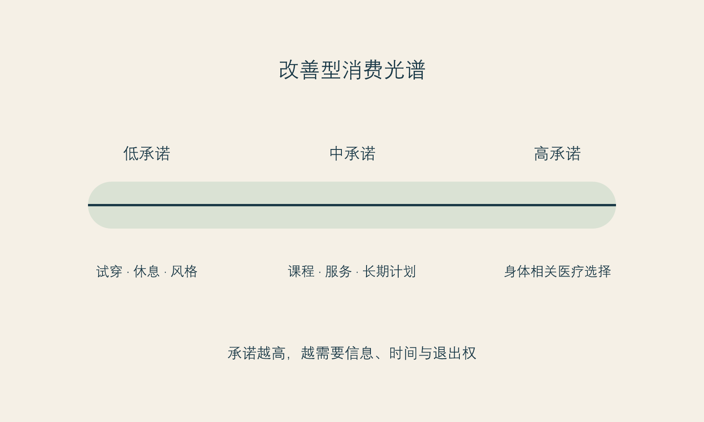
图 3 改善消费光谱。图为作者原创。它不替代对任何医疗项目的风险评估。
比起问“该不该马上做”，更有用的问题是“这个决定的可逆性如何”。可逆性不是单纯的医学概念，也包含财务、生活和心理层面的退出难度。
一个决定越难逆转，越需要更长的考虑期和更完整的信息；一个决定越涉及身体、长期支出、恢复安排和关系协调，越不适合在强促销、强比较或情绪失衡时完成。这个原则不告诉你做什么，它只告诉你：代价越重，越应该把决定从即时情绪里拿出来。
可以把选择粗略地放在一个光谱上：
光谱的价值不在于替你排出优劣，而在于让考虑时间与决定重量匹配。把高承诺决定放慢，并不是保守；它是对未来自己的尊重。
当你感到“必须现在决定”时，试着给自己做一张日历，而不是立刻做一个结论。
第 0 天：记录。 写下触发事件、想做的改变、促销或节点、已知价格和未知信息。不要在记录当日付款。
第 2 天：去除一个噪音源。 暂停查看相关短视频、对比照或群聊；看一看愿望是否仍然一样。
第 7 天：补一个信息缺口。 找到一项你尚未理解的事实：资质、恢复安排、替代方案、总成本或第二意见。若你无法获得清楚回答，记录这一点。
第 14 天：重读。 用一句话分别写下：我想得到什么？我能承担什么？如果不做，我还可以如何照顾自己？
这张日历不保证你会做出某种“正确”决定。它只确保你的决定不是在最窄的时间缝隙里被挤出来的。
真正值得提早做的，往往不是某个项目，而是准备：建立可信信息来源、了解自己的预算、学习在面诊中提问、把恢复期的照护安排说清楚、和重要的人讨论边界、发现自己开始把一次外在变化想象成全部人生的转机。
这些准备不会让你显得落后，反而让你在机会到来时不必仓促。它们也是可控梯度中最有力量的部分：你无法冻结时间，却可以不让焦虑抢走你的考虑时间。
“窗口期”是一个强有力的词。它把时间变成门：门开着时你有机会，门一关你就错过。某些医疗问题确实需要由合格专业人员根据具体情况解释时机；但在改善型消费里，窗口期也常被泛化成一种情绪语言，用来把本应允许思考的选择压缩成马上付款。
读者可以把所有“越早越好”的说法分成三类。第一类是需要医学证据和个体评估的问题，不能由广告或本书代替回答。第二类是价格、排期、活动等商业窗口，它们是真实条件，但不等于身体或人生窗口。第三类是情绪窗口：你正处在被比较、被评价、准备见人或害怕变老的高唤起时刻。第三类最容易被误当作第一类。
把它们区分开，能让时间回到正确的责任主体。医学问题问专业人员；商业条件可以计算；情绪窗口则需要先经过冷却。任何一个把三者混成“现在不做就没救”的表达，都值得暂停。
时间焦虑还有一个更隐蔽的来源：我们会替未来的自己预先判决。你想象三年后的脸、十年后的状态、未来的伴侣、未来的职场，然后把今天的消费当成替未来缴纳入场费。可是未来的你并不是今天的销售员。她可能拥有不同的收入、关系、审美、健康状态和生活优先级，也可能完全不再把今天在意的事情放在中心。
为未来做准备没有问题，问题是把准备改造成对未来的控制。积极斯多葛主义的时间观不是“不要计划”，而是“计划要为未来保留选择，而不是替未来锁死选择”。你可以规划预算、咨询信息、安排照护；但不必因为无法承诺未来全部的自己，就仓促做出不可逆或高承诺决定。
当你感到“必须现在做”时，分别以今天、三个月后和两年后的自己写一句话。
| 时间点 | 可以问的问题 |
|---|---|
| 今天 | 我最急着摆脱的是什么感受？ |
| 三个月后 | 这个决定会占用我的日程、预算和关系什么位置？ |
| 两年后 | 我希望自己保留什么能力、支持和选择余地？ |
三份答案不必一致。恰恰是这种不一致，提醒你别让今天最强烈的声音独占投票权。如果一个决定经过三次阅读仍显得合理，它可能更接近你的长期偏好；如果它只在情绪高峰显得无可替代，就值得再等。
很多消费叙事把等待说成拖延、错失或不够爱自己。可在高承诺选择中，等待常常是最现实的照料：等待预算更稳、支持更到位、信息更完整、日程更有余地，或等待一个不必靠倒计时证明决心的时刻。它不是对愿望的背叛，而是拒绝让愿望损害未来的生活条件。
你不必以“永远不做”来证明自己理性。你也不必以“马上做”来证明自己勇敢。对许多选择而言，能够说“我还没有足够条件”本身就是一种成熟的行动。
“时间压缩”“过早购买”和“可逆性光谱”是作者为改善型消费提出的解释工具，不是经过验证的临床模型。它们不说明任何人应该等待多久，也不替代对个体医疗风险、恢复期和适应证的专业判断。[立场 N-002]
下一章回到动机。时间焦虑常把愿望推得很急，而动机的复杂性又常让人羞于承认：我也许既想为自己改变，也在意别人怎么看。这不需要被审判。
框架标签：积极斯多葛框架（原创解释框架）
很多人在考虑医美时，先开始审问自己：“我是不是太在意外表？”“我是不是不够自信？”“如果我真的爱自己，为什么还想改变？”这些问题看起来很有反思性，实际上常常把人推回一个不必要的二选一：要么你完全接受自己，要么你就是被社会操控。
这两种说法都低估了人的复杂性。自我接纳不是停止选择；改善愿望也不是自我厌弃的铁证。你可以喜欢现在的自己，同时希望某一处更符合自己的审美。你可以受他人评价影响，同时仍然保有自己的判断。你可以做出消费，也可以在消费之前、之中和之后维护自己的边界。
动机真正需要被检验的，不是它是否纯洁，而是它是否被夸大、挟持或误置。所谓误置，是指你用一个外在结果去承担本来应由别的资源处理的问题：用一次变化解决长期孤独，用一个项目消除职业不确定，用他人的夸奖弥补关系里的忽视，用“变得更好看”替代对疲惫和失控感的照顾。
这并不意味着项目一定不该做。它意味着你需要让不同的问题拥有不同的答案。一个具体改善可以仍然是选择；但它不必承担救赎职责。
我们习惯寻找“真正的动机”，仿佛只要挖到最底层，就能给选择盖章。可人在现实中很少只有一种理由。有人希望减少一个持续困扰自己的外貌细节，也希望在工作场合更自在；有人希望拍照更自然，也在意伴侣是否会觉得自己有吸引力；有人愿意为了长期审美做准备，也会被短视频里同龄人的状态刺激。
混杂动机并不自动降低选择质量。真正降低质量的，是你不能承认混杂，于是只留下一个最好听的理由。例如，你明明很害怕失去年轻感，却只能对自己说“我完全是为了悦己”；你明明被销售人员的焦虑话术压得很紧，却只能说“我早就想做”。当动机被包装得太干净，压力就更难被看见。
积极斯多葛框架并不要求你找出唯一的内心真相。它要求你对自己的理由保持一种温和的诚实：哪些理由来自我愿意承担的偏好，哪些理由来自我不愿继续忍受的外部压力，哪些理由只是此刻很想逃开的不舒服。只有这样，选择才不会被最强烈的情绪偷偷接管。
有时，外貌困扰背后是“我想被看见”。这可能发生在关系中被忽略、工作里缺乏肯定、照护他人很久却很少照顾自己之后。外在改变可能带来仪式感和行动感，但被看见的需要还包含被倾听、被尊重、被认真对待。若所有希望都压在脸上，脸就会变成一份无法完成的简历。
工作、家庭、经济、健康或关系的不确定，会让人渴望找到一个能立即做主的领域。身体看似最接近“我可以控制”的对象，于是改善行动会带来短暂的掌控感。可是，身体不是一个完全听命的项目。医疗过程、恢复、别人反应和时间本身都会提醒我们：掌控最可靠的部分，不是保证结果，而是安排准备、信息、预算和支持。
人在转换阶段想改变形象很常见。新工作、新城市、结束关系、成为父母、经历疾病或进入新的年龄段，都可能让旧的自我呈现显得不合身。更新可以是很有生命力的愿望。但如果更新被写成“过去的我不值得存在”，它就会变成持续追赶。成熟的更新不是抹掉旧我，而是在新的阶段选择新的表达。
焦虑最擅长制造一种错觉：只要我现在做点什么，我就会好起来。行动确实能缓解无力感，但消费不是唯一行动。睡眠、暂停比较、完成一个小任务、跟可信的人说出不安、把信息整理出来，都能让人从被追赶的状态回到可以选择的状态。
这些区分不是要把人从医美或消费中劝走。它们只是防止一种代替关系：把本应由关系、休息、沟通、心理支持或职业行动承担的需求，全部转交给一个消费决定。
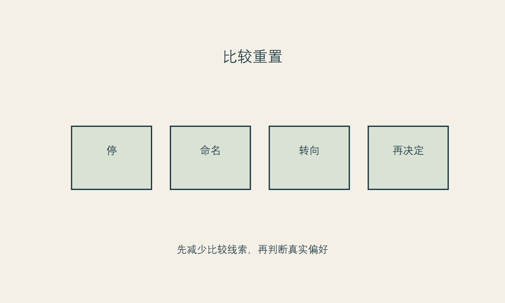
图 4 比较重置。图为作者原创，帮助读者梳理触发因素；不用于诊断心理状态。
愿望不需要被否认，但可以被具体化。具体化不是降低愿望的尊严，而是让它可以和现实相遇。
如果你说“我想变好看”，试着沿着四个方向补全它。
场景： 在什么时刻最强烈？是镜头前、社交场合、工作中、亲密关系里，还是独处时？场景帮助你区分持续困扰与环境触发。
对象： 我想改善的是具体的外貌体验，还是一种更宽泛的“我不够好”？具体对象可以被讨论；宽泛否定需要更慢地处理。
代价： 除了钱，我准备付出什么？时间、休假、恢复期、对家人的说明、对结果不确定性的承受，这些都属于代价。
替代： 如果今天不做，我还可以做什么？替代不是反对项目，而是避免项目垄断答案。一个没有替代路径的选择，容易被误认成命运。
请用完整句子回答，而不是给自己打分。
回答这些问题，不会产生一份客观正确的动机报告。它更像一次整理：把愿望从一句模糊的总命令，拆成可以选择、可以等待、也可以重新安排的部分。
本书不会判断任何人是否存在心理障碍。但有些状态不适合只靠消费决策工具处理：比如外貌困扰已经显著影响工作、学习、关系或基本生活；反复检查、反复比较或反复求证让人难以停止；对某个微小缺陷的痛苦远超过实际处境；或你感到绝望、想伤害自己。此时，暂停一切高承诺消费，寻求合格的心理健康和医疗支持，比急着找下一个项目更重要。
这不是把“想变美”病理化。相反，它是在保护读者不被任何一本书、任何一张量表、任何一个咨询师或销售人员草率定义。专业支持的意义，不是替你宣布答案，而是帮助你把难以独自承受的痛苦放到更合适的照护关系里。
人们常常寻找“足够正确”的动机：如果我只是为了自己，那就可以；如果有一点在意别人眼光，就显得不够纯粹。这个标准并不符合真实生活。人的动机本来就是混合的。你既可能喜欢一种风格，也在意职场场景；既希望更自在，也害怕被比较；既有自己的愿望，也受到亲密关系与文化标准影响。
复杂不等于虚假。更重要的问题不是“我的动机是否一尘不染”，而是“这组动机是否允许我自主地停、问、改主意”。如果动机里含有恐惧，并不自动说明选择错误；如果恐惧已经让你没有退出权、没有预算边界、没有时间核对，它就需要被认真对待。
把动机当成审讯对象，还有一个代价：它会让读者以为必须先彻底弄懂自己，才配行动。实际上，大多数人不会获得一份完整的内心报告。更成熟的做法是承认“我还不完全确定”，并把不确定转化成行动设计：多问一次、少承诺一点、找第二意见、留一个冷却期。行动的质量不取决于你能否把动机讲得完美，而取决于你是否给动机留出了被修正的空间。
一个实用办法是把“我为什么想做”与“我有没有条件做”分开。前者属于偏好、情绪和意义；后者属于信息、健康、预算、日程、支持与退出权。很多痛苦来自把两者混在一起：因为我很想要，所以我应该有条件；因为我暂时没有条件，所以我的愿望一定不正当。
可以写成两张清单。
| 愿望清单 | 条件清单 |
|---|---|
| 我希望改变什么体验？ | 我知道哪些限制和未知项？ |
| 我期待的场景是什么？ | 我是否有足够时间与预算？ |
| 我害怕失去什么？ | 我能否不受促销影响地暂停？ |
| 这件事是否让我感到愉悦？ | 我是否有合格沟通与支持路径？ |
两张清单没有谁比较高尚。愿望负责说明你在乎什么，条件负责保护你不会因在乎而失去自己。只有两者一起出现，选择才不必靠自我羞辱维持。
“我在意别人怎么看”常被当成最不可告人的动机。其实，人是社会性动物，被看见、被评价、被归类都会影响我们的感受。否认它不会让影响消失，只会让它变得难以讨论。需要警惕的不是在意本身，而是把他人的目光升级成唯一法庭。
问自己：我具体在意的是谁？他们的意见会持续影响我的现实生活，还是只是被我想象成一个抽象的“大家”？我希望得到的是赞美、免于嘲笑、专业感、关系安全，还是一种终于可以放松的许可？答案不同，回应也不同。可能需要的是沟通边界、休息、职业支持、风格探索，或者才是进一步了解某项医疗选择。
让“别人怎么看”从一个巨大而模糊的阴影，变成几个可命名的人与场景，能减少它对消费决定的支配。
本章关于动机、更新、被看见和掌控感的分类，是作者的解释性写作，不是对读者心理历史的判断。[立场 N-001] 关于减少比较线索后再决定的建议，是从比较与身体意象关联的研究中提出的有限推断，不保证对每个人都有同样效果。[推断 I-001]
下一部开始讨论本书的斯多葛式重述：不把所有事情叫作可控，也不因为有不确定就放弃行动。
框架标签：积极斯多葛框架（原创解释框架）
医美和改善型消费里，常见两种相反的控制感。一种说：“只要我足够努力、找对项目、选对机构、做好功课，我就能得到想要的结果。”另一种说：“结果本来不由我决定，所以我最好什么也别做。”前者把不确定性赶出门外，后者把行动能力一起赶走。
两者都不够好。人不是全能的工程师，也不是只能等待的旁观者。尤其在涉及身体和医疗服务时，结果受到许多变量影响：个体差异、恢复过程、信息完整性、沟通质量、生活安排和他人的评价。承认这些变量不是消极；把它们说成完全可控，才会让人把正常的不确定感误解成个人失败。
积极斯多葛框架不用“控制”这个词要求你冷静，而是请你问：我现在究竟在负责什么？ 负责与控制不同。控制追求结果服从；负责关注自己能否以清醒、诚实和边界参与选择。
传统的“可控与不可控”二分，常因过于简洁而被误用。它容易让人把关系、信息、身体和环境都扔进“不可控”，或反过来把任何结果都归为“只要努力就行”。对改善消费更有用的，是三层梯度。
我是否在情绪最激烈时签约？我是否问清楚了自己不理解的地方？我是否可以承受总成本？我是否给自己留了拒绝和延迟的空间？这些不是结果保证，却是你能够对自己负责的动作。
我可以选择信息来源，安排恢复期，带一位支持者参加咨询，记录自己的期待，减少平台触发，要求更清楚的解释，或者在感到被催促时离开。条件不会听命于你，但你可以使它们更有利于清醒决定。
他人是否满意、社交媒体是否继续制造新的标准、身体是否完全符合想象、结果是否能解决关系或职业困境，这些都不应被你占为自己的承诺。你可以希望它们朝好的方向发展，但不能把它们当作自己必须兑现的债务。
图 5 可控梯度的再读。图为作者原创，用于本书的反思框架。
这三层不是为了安慰自己“反正没办法”。相反，它让行动更具体。你无法控制别人是否觉得你更美，却可以控制自己不在被羞辱或被催促时付钱。你无法控制恢复过程是否完全平稳，却可以控制是否了解需要问医生的问题、是否安排支持、是否给自己留出复盘的时间。你无法控制世界的审美，却可以控制不把每一个趋势都写进自己的身体计划。
控制幻觉常常带来双重伤害。选择之前，它会让你觉得只要选对就万无一失；选择之后，它会让任何不如预期的部分都变成“我是不是做错了”。这会迫使人不断寻找新的修正：换项目、换医生、换城市、换更高的预算，仿佛只要再努力一点就能把不确定性彻底消除。
但不确定性并不是证据不足或努力不够的同义词。医疗服务、身体变化和社会评价本来就包含不确定。成熟的责任感不是把它消灭，而是让自己的承诺与它相称。
你可以对自己承诺：“我会做尽可能充分的信息核对。”“我会在支付前确认自己愿意承担恢复期和总成本。”“我会在感到被逼迫时暂停。”这些承诺是可实践的。你不应对自己承诺：“我一定会因此变得足够自信”“所有人都会认为我更好”“这会解决我一直以来的痛苦”。这些承诺太大，且把本不属于你一个人的变量塞进了你的责任里。
有一种准备看起来很勤奋，实际上在增加焦虑：无休止地看案例、反复比较价格、搜集彼此矛盾的意见、把每个细节都当作决定成败的关键。这种准备不是没有价值，但当它不再产生更清楚的问题，只产生更多恐惧时，它已经从信息搜集变成了不确定性的仪式。
判断准备是否有用，可以问三个问题：
如果三个答案都是否，继续搜集未必会让你更安全。它可能只是让你在焦虑中感觉自己还在行动。此时最有用的行动，反而是设定一个信息截止点：把已知、未知和需要由专业人员回答的问题分开，停止让算法继续替你补充焦虑。
选一件你正在考虑的改善选择，在纸上画三圈。
然后看一看：你是否把太多外圈内容写进了内圈？你是否把可以影响的条件误当成了无法改变的命运？这不是一道考试题。它只是把混在一起的期待、责任和恐惧拆开。
在外貌消费中，“控制”很容易变成一个令人上瘾的词。你可以控制预算、预约、护理、信息搜集、拍照角度，于是很自然地想再控制别人怎么看、结果如何被理解、时间怎样留下痕迹。问题是，后面几项并不会因为前面几项做得认真就完全听命。把控制延伸到它不可能覆盖的地方，只会让负责的人越来越疲惫。
可控梯度的价值，是让努力得到一个准确的位置。你能对准备负责，不必对世界的全部反应负责；你能对沟通的质量负责，不必独占所有结果；你能对自己的边界负责，不必对每一个人的审美负责。这样说不是降低标准，而是避免错误归因。错误归因会让人把随机性、个体差异、他人情绪和时间变化，都误判成自己还不够努力的证据。
当某个选择让你焦虑时，分别列出“我负责”“我参与”“我不能独占”三栏。比如：
| 我负责 | 我参与 | 我不能独占 |
|---|---|---|
| 如实表达期待与担忧 | 与专业人员共同理解信息 | 最终外观的全部细节 |
| 安排预算、恢复与支持 | 在沟通中追问未知项 | 他人的每一种反应 |
| 决定是否暂停或寻求第二意见 | 观察自己是否仍愿意继续 | 时间、衰老和所有比较标准 |
这不是推卸责任。相反，它让责任变得可执行。若把“不能独占”的部分硬塞进第一栏，人只会在无法做到时更容易羞耻、冲动或加码。
准备本身是好事，但也有一种准备会无限延长：不停看案例、不停更换搜索词、不停询问更多人，却始终无法写出自己的实际问题。有时这不是信息不够，而是你想用信息消除所有风险，或不愿触碰一个更难的问题：我是否愿意承担这个选择的代价？我是否能够接受它无法替我解决的一部分生活？
当准备开始制造更多不安，不妨给它设一个结束条件。例如，“我需要听到两位独立来源对这三个问题的解释”“我需要确认恢复期的生活安排”“我会在无促销压力的日期重读记录”。结束条件不是让你变得草率，而是防止准备变成永远无法开始生活的替身。
承认有限，有时反而让人更敢行动。因为你不再要求自己在行动前获得全知全能，也不再把任何结果当作人格考试。你可以认真地做一件事，同时允许它有边界；可以接受不确定，同时拒绝在不确定中被催促；可以追求改善，同时不把改善变成唯一自救。
这正是本书所谓积极的一部分：不是假装一切可控，而是把精力投向那些真正能让生活更稳、更清楚、更有尊严的环节。
可控梯度是本书的原创解释模型。[立场 N-001；N-002] 它不预测满意度，不评估医疗适应证，也不能代替医生对风险、替代方案和恢复安排的说明。它的用途仅限于帮助读者在不确定性中安排更合适的责任。
下一章讨论另一个常见误会：承认结果不属于自己，并不等于不允许期待。问题是，我们怎样期待，才不把结果变成对自己的判决。
框架标签：积极斯多葛框架（原创解释框架）
人很难在不期待的情况下做一件改善型消费。你付出金钱、时间、恢复安排和注意力，当然会希望有一个值得的结果。让读者“不要期待”，既不诚实，也不尊重。真正需要讨论的，不是有没有期待，而是你如何对待期待。
有些期待属于愿望：我希望自己照镜子时更自在，我希望穿某种衣服时少一些顾虑，我希望在镜头前不总想着躲开。这些期待可以被说出来，也值得在面诊或准备中被认真对待。有些期待却被写成了合同外的保证：我必须因此更自信、必须让关系变好、必须让别人停止评价、必须把年龄带来的焦虑彻底消除。它们把一个具体结果扩张为人生总结果。
积极斯多葛框架称这种扩张为“占有结果”：你不仅希望某件事发生，还把它当作自己必须兑现、也必须永久拥有的东西。结果一旦出现偏差，你就不只感到失望，还会感到自己被否定。于是，任何正常的恢复波动、任何他人的沉默、任何照片里的不满意，都可能成为“还不够”的证据。
不把结果占为己有，不是把期待降到零；而是把期待改写成可以承受不确定的句子。比如，不说“我做完后必须变得自信”，而说“我希望这项选择能在某个具体场景中减少我的负担；若它不能，我仍会寻找其他方式照顾自己”。后一句不那么戏剧化，却更接近成熟的承诺。
这一级最直观：你希望一个部位、线条、状态或整体呈现有什么变化。外观期望需要尽可能具体，也需要由有资质的专业人员讨论可行性、限制和不确定性。它不应只停留在“自然”“高级”“显年轻”这些听起来明确、实际却可能含义不同的词。
人常常更在意体验：我希望被认真倾听、希望不被羞辱、希望恢复期不会完全失去生活节奏、希望面对镜子时少一点紧张。体验期望同样重要，却更容易在讨论项目时被遗漏。它提醒你，选择的不只是一个结果，还包括一个服务过程和一段恢复生活。
有些人期待伴侣更肯定、同事更认可、家人少说几句、朋友羡慕，或只是希望不再因为外表感到被动。这些期待不丢人，但必须从项目结果中拆出来。任何人都无法保证他人的反应；把他人的反应当作项目成功标准，会把自己交给一套随时变化的外部评分。
这是最容易被忽略、也最需要谨慎的一层：我期待自己从此更有价值、更容易被爱、更能掌控人生。它们不是外观期望，而是人生叙事。医美或任何改善消费都可能成为叙事中的一个节点，却很难独自完成整段叙事。越是巨大的期待，越需要被放回关系、工作、健康、兴趣和心理支持等更宽的生活结构里。
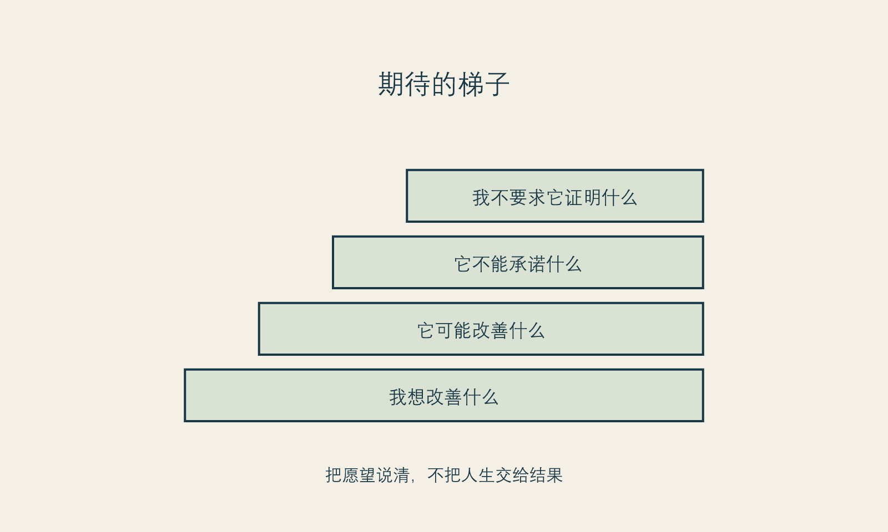
图 6 期待阶梯。图为作者原创；用于帮助表达期望，不用于评估项目结果。
一项2025年系统综述对高质量证据的结论很谨慎：在部分短期心理社会结局上，研究观察到可能的改善；但整体研究质量有限，长期的心理健康、整体身体意象、生活质量和社会功能结果仍不确定。(事实 F-009； Garbett 等 2025年) 这并不说明美容手术没有价值，也不说明每个人都会失望。它说明一种更成熟的表达方式是必要的：项目效果不能被自动翻译成人生效果。
这种谨慎尤其重要，因为商业叙事很喜欢跳过中间环节。它会把“改变一个外在特征”直接连到“获得自信”“收获爱情”“逆转年龄”“重启人生”。书中不需要用反向恐吓来对抗这种叙事，比如声称“做了也不会快乐”。两种极端都把读者当作可以被口号推动的人。更准确的态度是：有些人会在某些方面感到改善，有些人不会；同一个人也可能在不同时间感受不同。你有权期待，也有责任不把期待伪装成保证。
面诊中的“我想自然一点”“我不想显得做过”“我想变得有精神”，都是有效的开场，但不足以作为结束。它们需要被翻译成可沟通的问题，而不是由对方自动补全。
你可以问：
最后一个问题看起来尴尬，却能把讨论从“承诺更多”变成“边界更清楚”。一个值得信任的专业沟通，不会因为你问边界而觉得你麻烦。相反，能够解释不确定性、替代方案和不适合之处，是专业性的一部分。
“我已经很认真做功课了，所以结果必须好”是一种常见的心理算式。它把努力视为对结果的购买。可努力的价值不在于让结果服从，而在于你能更清楚地决定、沟通和承担。即使结果不完全如愿，认真准备也没有白费：它让你知道发生了什么、该问什么、何时该暂停，以及不要在最不安时被下一次消费接管。
反过来，“过程很努力，所以结果不重要”也不诚实。结果会影响真实感受。允许自己失望、允许提出问题、允许寻求合适的专业评估，都是正当的。积极斯多葛不是让人用哲学粉饰不满意，而是避免在不满意时立刻把自我价值、医生关系和下一次消费绑在一起。
写下你对一项改善的所有期待，然后在每一条后面标记：
| 期待 | 属于哪一层 | 我可以做什么 | 我不能要求什么 |
|---|---|---|---|
| 例如：镜头前更自在 | 体验 | 说明具体场景、准备恢复安排 | 保证所有照片都满意 |
| 例如：伴侣更欣赏我 | 关系 | 沟通自己的需要 | 控制对方反应 |
| 例如：从此不再焦虑 | 人生 | 寻找多种支持 | 让一次消费消除全部焦虑 |
表格不是为了浇灭期待，而是给期待一个更合适的容器。它会让你在选择前少一点神话，在选择后少一点自责。
有些人因为害怕失望，索性对自己说“不要期待”；另一些人则把一幅理想图像当成选择的隐形合同。两种做法都没有真正处理期待。前者让人失去表达愿望的能力，后者让人难以听见条件与不确定性。
更稳妥的期待，既要有形状，也要有弹性。它应当能说清你在什么场景里希望有什么变化，也能承认它不是对某一种视觉结果、关系反馈或情绪状态的索赔。期待越具体，越容易与专业人员讨论；期待越被当成所有权，越容易在现实出现差异时变成自我否定或冲动修复。
人们常以为只有结果好，过程才值得。事实上，一次高承诺选择的过程也有独立价值：信息是否充分、问题是否被尊重、是否有足够时间考虑、是否存在可沟通的复核路径、是否把未知项说清楚。即使最终体验复杂，一个被尊重、可复核的过程仍然比被催促、被蒙混的过程更有价值。
这不是用“过程很努力”粉饰任何不理想结果。它是提醒读者，不要把全部评价压缩成最后一张照片。结果需要如实面对；过程也需要如实检验。两者分开，才能知道下一步到底是医学沟通、生活调整，还是需要重新审视自己承受了什么不合理压力。
“自然”“协调”“改善气质”是审美沟通里很常见的词，也是最容易被误以为双方已经理解一致的词。它们实际包含许多可能：有人指他人不易察觉，有人指表情仍然舒适，有人指与生活场景相配，有人只是希望自己看起来没那么疲惫。若不把词拆开，双方即使都说“自然”，也可能在谈不同的事。
在面诊或自我记录里，可以把抽象词改成场景词：我在哪种光线、镜头、社交或工作情境下感到不自在？我希望别人看到什么，或不必看到什么？我担心什么样的变化？我能接受哪些不确定性？场景词无法消除审美差异，却会减少把一个含糊形容词误当作确定承诺的风险。
期待会变，这不是不诚实。你获得更多信息、经历恢复、进入新的生活阶段后，原先的想法可能不再完全适用。允许期待变化，是对自己真实经验的尊重；但期待变化不等于需要立即追加新的选择。先区分：是我对结果有新理解，还是我正在被新的比较和焦虑推着走？我是否已经完成原先约定的沟通与观察？我是否仍有时间和预算余地？
把这些问题放在新增行动之前，可以让结果不再拥有你的全部注意力。你可以关心结果，却不必占有结果；可以更新期待，却不必把每次更新变成一次购买。
关于美容手术心理社会结局的证据存在程序、人群、研究质量和随访期的局限。本章据此主张谨慎管理期待，但不据此替任何读者判断项目的价值或结果。[事实 F-009] “期待阶梯”是作者的反思工具，而非临床量表。[立场 N-001]
下一章会从自我批评转向自我立法。若结果不应承担全部价值，那么我们需要用什么原则来安排改善，而不是任由羞耻和追赶来安排。
框架标签：积极斯多葛框架（原创解释框架）
许多改善计划从一句尖锐的话开始：“我不能再这样了。”“我看起来太差。”“我怎么连这点自律都没有。”这种批评有时确实会带来行动：预约、购买、节食、训练、换发型、搜索项目。于是人很容易相信，羞耻是有效燃料。
它的问题不在于完全没有效果，而在于它的燃烧方式。羞耻能制造短期紧迫，却很难建立长期关系。它让你把身体当作拖后腿的对象，把休息当作懒惰，把不确定当作失败，把每一次正常的波动当作自我管理失控。最后，改善不再是一种选择，而成为不断证明自己不配停下来的过程。
积极斯多葛框架提出“自我立法”，并不是要你变得更严厉。这里的“立法”是给自己制定可以公开说明、可以长期执行、也允许修订的原则。它与“我必须更完美”不同。完美主义的规则没有完成条件；自我立法的规则有边界、有例外，也承认身体和生活不是永远稳定的系统。
一条可生活的原则至少包含四个特点。
它具体。 “我要对自己好”太宽，宽到焦虑来临时无法使用。更具体的说法是：“涉及身体和高费用的决定，我不在当天支付。”“我不接受以羞辱、恐惧或秘密感推动的消费。”“我会在恢复安排不清楚时暂停。”
它对称。 你愿意把这条规则用在朋友身上，也愿意用在自己身上。若你不会对朋友说“你不够漂亮所以必须赶紧做”，就不必把这句话留给自己。
它承认代价。 原则不是愿望清单。它会写出你愿意为改善付出什么，又不愿付出什么。例如，愿意投入预算和恢复时间，但不愿透支借贷、不愿隐瞒重要风险、不愿在关系威胁下做决定。
它可以复盘。 人会变，生活也会变。能被修订的原则比“永远不变”的誓言更可靠。复盘不是反复怀疑自己，而是检查这条规则是否仍然保护了你重视的东西。
有人听到“不要自我批评”，会担心这让人失去动力。可自我慈悲不是“什么都无所谓”，也不是对问题视而不见。它更接近一种不羞辱的诚实：我可以承认自己不满意、承认需要改变、承认做过不理想的决定，同时不把这些事实升级为“我这个人很差”。
一项2020年系统综述与荟萃分析在饮食和身体意象研究中发现，更高的自我慈悲与较少身体意象困扰有关；作者也同时讨论了样本与干预研究的局限。(事实 F-011； Turk 和 Waller 2020年) 这类证据不能直接推导为“只要练习自我慈悲就会解决医美焦虑”，更不能把一个概念变成处方。它的启发是：用羞耻驱动身体管理，并不是唯一的动力模型。
同样，关于接纳与承诺疗法（ACT）用于身体不满意的2025年荟萃分析报告了相对对照组的中等效应量，但研究数量、样本与干预方式仍需要仔细解读。(事实 F-012； Boyle 等 2025年) 本书不教授治疗，也不建议读者自我治疗。它只借用一个与斯多葛框架相容的提醒：行动可以由价值指引，而不必由消除不舒服来指挥。
自我批评习惯从讨厌开始：我讨厌显老、讨厌镜头、讨厌不够瘦、讨厌自己没有坚持。自我立法则换一个问题：在改善时，我想守护什么？
有人会回答：自主。我不希望因为平台热度或他人评价做重大决定。有人会回答：健康。我不希望为了一个审美结果牺牲基本生活节奏。有人会回答：诚实。我不想假装自己完全不在意外表，也不想把不安全部藏起来。有人会回答：尊严。我不接受任何人把我的外表当作谈判筹码。
这些价值不会替你给出项目答案，却会成为筛选答案的标准。一个选择即使看起来很流行、很划算、很快，也可能不符合你要守护的价值。反过来，一个经过充分信息、预算和支持安排的选择，即使别人不理解，也可能仍然符合你的原则。
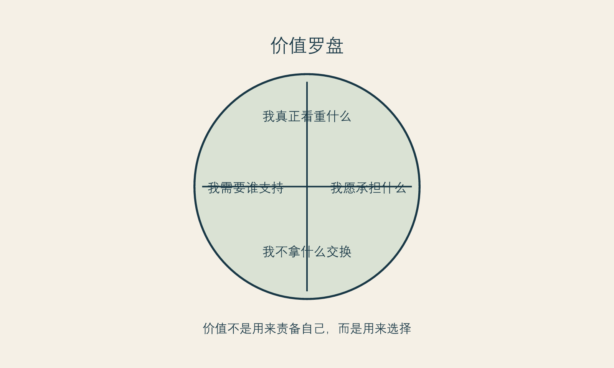
图 7 价值罗盘。图为作者原创，呈现的是作者立场，不是心理测量结果。
请用自己的语言完成以下句子。它不需要漂亮，只需要在压力来临时能用。
这不是一份道德承诺书。它可以很小，例如“我不在深夜看完对比图后付款”“我会把总成本写出来”“我有权对任何推销说让我考虑”。小规则之所以重要，是因为真正的自主通常不靠一次宏大宣言，而靠一系列可重复的微小边界。
原则也会被误用。有人写下“我永远不做冲动决定”，然后一旦情绪上头就又责怪自己；有人写下“我必须完全独立”，于是拒绝一切关系影响；有人写下“我只能为自己变美”，于是连被看见、被喜欢的愿望都不允许存在。这样写原则，只是把旧的苛责换了更高级的语言。
可生活的原则允许复杂、允许修订、允许承认：我这次没有做到，但我仍能重新回到我想守护的价值。积极斯多葛不是要你成为情绪永远正确的人，而是要你在情绪来临时不立即交出自己的判断权。
很多人从自我批评转向“原则”时，会不小心把原则也变成鞭子：我必须永远冷静、绝不比较、绝不冲动、永远做正确决定。这样写出来的不是原则，而是另一套无法完成的完美主义。它仍然在问“我够不够好”，只不过换了更理性的语言。
一条可生活的原则，应该在你状态最差的时候仍然可以使用。它不要求你没有情绪，而是告诉你情绪来了以后怎样不失去自己。例如：
这些句子的重点不在于优雅，而在于可执行。原则应当像一个扶手，而不是一个更高的审判台。
生活并不总按你预设的条件运行。你可能在某个重要活动前突然焦虑，可能遭遇关系中的评价，可能因身体或财务变化而无法遵守原计划。若原则没有例外条款，人就很容易在一次失守后宣布全部失败。
因此，每一条原则后都可以加一句：“如果我暂时做不到，我的补救动作是什么？”例如，原本打算冷却两周却已经被促销打动，可以补救为“今天不付款，只把问题带回家”；原本想少看比较内容却连续刷了一晚，可以补救为“明天把关注列表清理十分钟，并安排一个不围绕外貌的活动”。补救不是找借口，而是承认自我治理的目标是继续生活，不是赢得一次道德考试。
自我批评关注的是“我怎么又这样”；自我立法关注的是“此刻我愿意守住什么”。两句话的方向不同。前者把注意力拉回过去的失败，后者把注意力放到下一步的承诺。
在改善型消费里，这种转向尤其重要。你不必先判定自己虚荣、冲动或不够自律，才配暂停。暂停可以是为了守住预算、睡眠、关系、身体安全、信息质量与未来的选择余地。当行动有了明确保护对象，它就不再只是对冲动的压制，而是一种对生活的照料。
自我慈悲、ACT 与身体意象相关研究不能直接外推到每位医美消费者，也不能替代治疗。[事实 F-011；F-012] “自我立法”“价值罗盘”和“个人改善宪章”是本书的作者工具，属于价值判断与实践建议，不是临床干预。[立场 N-001]
下一章讨论延迟。原则需要一个落点；最常见、也最容易被轻视的落点，就是在被催促时给自己留出时间。
框架标签：积极斯多葛框架（原创解释框架）
“再想想”在消费现场常被说成犹豫、拖延或错失机会。可对涉及身体、金钱、恢复期和长期期待的选择而言，延迟不是消极动作。它是一种能力：在情绪、促销、关系压力和信息不完整同时出现时，仍然给自己保留一个可以重新判断的时刻。
延迟之所以难，不是因为人不知道它有用，而是因为许多环境都把它变得昂贵。限时优惠让延迟看起来像损失；朋友已经做了让延迟看起来像落后；销售人员的热情让延迟看起来像不信任；自己的焦虑则让延迟看起来像继续忍受。于是，人会把“我暂时不决定”翻译成“我在对自己不好”。
积极斯多葛框架不同意这种翻译。它认为，能够在压力中保留判断时间，本身就是对自己的照顾。行动不等于立刻签约；行动也可以是收集资料、写下问题、预约第二次沟通、告诉朋友自己需要安静几天，或者干脆离开一个让你无法思考的现场。
回避是为了不感受、不沟通、不看事实，因而让问题越积越大。延迟则相反：它是为了获得更完整的事实、更清楚的价值和更可承担的代价。两者表面上都可能是“先不做”，内在方向却不同。
你可以用一个很简单的区分来判断：延迟期间，我是否在让决定变得更清楚？如果你在核对资质、计算总成本、安排恢复支持、写下期待和不愿承担的代价，延迟就在发挥作用。如果你只是不断刷同类内容、反复让自己焦虑、又不敢面对任何具体问题，那可能需要换一种支持方式。
延迟也不要求你把情绪压下去。情绪本身是信息：它告诉你这件事对你重要，或者你感到威胁。问题是情绪是否被赋予了最终投票权。你可以承认“我现在很想立刻改变”，同时不在这种状态下做高承诺选择。
一项针对择期手术的系统综述发现，共享决策在所纳入研究中倾向于改善决策质量，并在部分研究中降低决策冲突；它对接受手术比例的总体影响并不明确。(事实 F-010； Wong 等 2016年) 这项证据并非专门针对医美，也不提供某种单一话术。它的关键启发是：好的决策支持不以“让人做或不做”为目标，而以让人更了解、也更符合自己价值为目标。
这正是延迟的价值。延迟不服务于一个预设结论。它不保证你最后会拒绝，也不保证你最后会做。它只提高一个更基本的可能：无论最后怎么选，你能更清楚地说出这是谁的选择、基于什么信息、愿意承担什么、还保留哪些退出权。
当选择涉及订金、分期、套餐或附加项目时，先让数字落到纸上。总成本不只包括标价，还包括可能的复诊、恢复期安排、交通、误工、照护、后续维护和不确定支出。写出来不是为了把所有消费否掉，而是为了让“我能承受”从感觉变成可以检查的事实。
如果你还不能清楚说出：项目的目的是什么、哪些是已知限制、哪些问题需要问专业人员、替代路径有哪些，那么决定需要继续停在信息闸门前。信息并不等于无穷搜索；它是足以让你提出好问题、发现关键未知项的最低清楚度。
如果一个决定需要隐瞒、害怕被威胁、担心关系报复，或者只为了避免某个人的不满，就不宜匆忙推进。关系并非都要获得批准，但它确实可能影响恢复支持、财务边界和情绪安全。把这些影响说清楚，是保护自主而不是放弃自主。
只要一项选择可能影响工作、照护责任、出行、睡眠、社交或情绪稳定，就应有一个恢复闸门：我准备了什么？谁知道？谁能支持？如果计划变化，我有什么备选？如果这些问题没有答案，项目的价格再好，也不等于时机合适。
促销最擅长把普通机会说成唯一机会。实际上，大多数商业机会会以不同方式再次出现；真正不可替代的，是你在重大决定中保持清醒的能力。即使某个价格、名额或档期确实消失了，也不必因此把自己说成失败。失去一项优惠，不等于失去改善生活的可能。
这种看法不是反商业，也不是假装钱不重要。预算当然重要。但“便宜”不是“适合”的同义词，“现在有名额”也不是“现在有准备”。当一个机会只靠夺走你的考虑时间才显得有价值，它至少应当经得起一次暂停。
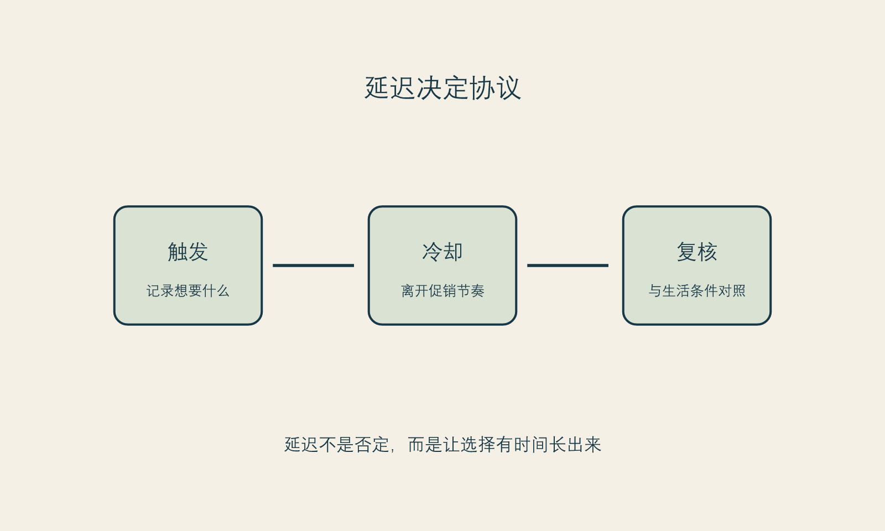
图 8 延迟协议。图为作者原创，显示的是决策流程，不是医疗流程。
对于任何在现场让你想立刻支付的高承诺选择，先执行这一版简短协议：
“我再想想”有时没有力量，因为它没有对抗任何具体的催促。信息流仍在推送，优惠仍在倒计时，朋友仍在问，咨询记录仍在制造一种已经走到最后一步的惯性。有效的延迟不是一句意志口号，而是一套环境设计。
你可以先决定冷却期的起点与结束条件。起点可以是第一次咨询、看到强烈内容、拿到报价或感到“今天必须定下来”的那一刻；结束条件不是“我彻底不焦虑”，而是完成几项可验证动作：把问题写成清单、睡过几晚、核对两类信息、看过预算与日程、与支持者讨论自己真正担心的部分。冷却期结束后，你仍然可以选择继续，但继续不再只是对压力的反应。
有人怕拖延，是因为过去曾用“再等等”逃避真正需要解决的问题。这个担心合理。区别在于，逃避让问题越来越模糊，延迟让问题更具体。逃避不设日期、不写问题、不核对条件；延迟有明确的回看时间，并在等待中补齐信息、预算、支持或沟通。
可以给每一次延迟写一个“归来日期”：我会在某日重新阅读记录，并只回答三个问题：我的愿望还在吗？我的条件够了吗？我是否比上次更能承受不确定性？这样，延迟不再是一种无期限搁置，而是一种有方向的决定能力。
优惠可以是真实的商业条件，但它不应该改变关于适合与否、风险边界、恢复安排和你的长期价值排序的事实。把报价从决策里暂时拿掉，问自己：“若没有这个价格，我是否仍愿意花时间了解？”如果答案是否定的，说明你需要先弄清自己是在选择服务，还是在选择不想错过的感觉。
这不是说任何在优惠期间作出的决定都不理性。它只要求一件事：让优惠不能独自决定你的时间表。你可以计算价格，却不要让价格替你回答身体、生活和关系的问题。
在无法安排更长冷却期时，至少保留二十四小时。期间不转账、不追加、不因朋友催促改变结论；只做四件事：写下想改善的具体体验、列出三个未知项、把总成本放进自己的账户结构、告诉一位可信的人“我明天再决定”。二十四小时不保证答案完美，但它至少中断了“情绪—付款”的直通车。
如果任何场景让你无法获得这二十四小时，或把等待解释成不珍惜自己，那么问题不只是你够不够果断，而是这个决定环境是否给了你足够的退出权。
共享决策的系统综述主要来自一般择期手术情境，不能直接证明某种医美流程的效果。[事实 F-010] 本章的四道延迟闸门和二十四小时协议是作者的实践工具，不是法律要求、医疗指南或心理治疗。[立场 N-002]
从下一章开始，框架进入医美这个主案例。医美不能被当作普通商品，不是因为它天然更神圣，而是因为它同时涉及身体、医疗服务、金钱、时间和身份感。
框架标签：积极斯多葛框架（原创解释框架）
把医美只当作消费品，会低估它的身体和医疗属性；把它只当作医疗，又会忽略它与审美、营销、关系和身份感之间的联系。它处在一个复杂的位置：人以消费者的身份接触信息、价格、广告和服务体验，又以求美者或患者的身份进入涉及身体的医疗场景。
中国《医疗美容服务管理办法》将医疗美容界定为运用手术、药物、医疗器械以及其他具有创伤性或侵入性的医学技术方法，对容貌和人体各部位形态进行修复与再塑。(事实 F-001； 中华人民共和国国家卫生健康委员会 2002年) 这一定义提醒读者：至少在其适用范围内，医美不是单纯的“买个效果”。它意味着专业资质、信息沟通、风险管理和知情同意都不应被促销语言覆盖。
“医美不是普通商品”并不意味着读者必须对它恐惧，也不意味着所有选择都应被道德化。它只意味着，讨论时不能只问“值不值”“有没有折扣”“别人做得好不好看”。还要问：这项服务对身体意味着什么？我是否理解信息的边界？我是否有足够的恢复支持？我是否被允许充分考虑？如果结果有不确定性，我是否知道应如何沟通和评估？
医美消费最容易被低估的，是价格之外的成本。它们没有固定数字，却会真实影响一个选择是否适合当下。
身体成本包括恢复期、可能的不适、需要遵循的专业建议、生活节奏变化，以及个体差异带来的不确定性。本书不对具体程序提供风险判断，因为那需要由合格专业人员结合个体情况说明。读者可以做的，是不把“别人恢复得很快”当作自己的承诺，也不把“项目很常见”翻译成“我无需了解限制”。
财务成本包括标价，也包括复诊、维护、交通、休假、照护、后续消费和可能的机会成本。它最容易在套餐、分期和“今天更划算”的语言中被压缩。一个尊重自己的预算，不只是问有没有钱付首笔，而是问：若出现额外安排、收入波动或我改变主意，这件事会不会把我逼到没有选择的地方。
时间成本不是“等几天”那么简单。它包括准备、咨询、恢复、与工作和家庭协调、处理他人询问、等待结果稳定、以及在不确定中保持生活的能力。很多人并不是没有预算，而是没有时间带宽。承认时间带宽不足，不是退缩；它是在判断时机。
这是最少被写进报价单的一项。叙事成本指一个选择会怎样进入你对自己的故事：我会不会从此更频繁地检查自己？我会不会把下一次不满意都解释为需要继续修正？我是否因此更能表达自己，还是更难离开外部评价？叙事成本没有统一答案，但不问它，就容易把一次选择放进一个不断追加的故事里。
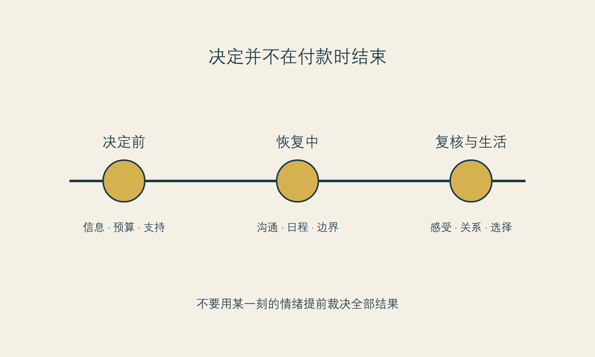
图 9 恢复时间线。图为作者原创，展示的是消费者准备与支持节点，不替代任何医疗恢复方案。
关于美容手术后的心理社会结局，现有高质量证据仍有限。一项2025年系统综述指出，部分短期结果可能改善，但整体证据质量低，长期的心理健康、整体身体意象、生活质量和社会功能结论仍不确定。(事实 F-009； Garbett 等 2025年) 这提醒我们，项目评价不能只由“前后对比是否明显”组成。
对消费者而言，更完整的评价至少包括：我是否在充分信息下做决定？沟通是否诚实？恢复安排是否被尊重？我是否有机会提出疑问和不满意？我是否把一次外在变化夸大成整个人生的判决？这些问题不替代对结果本身的感受，却可以防止结果成为唯一的裁判。
退出权是本书最看重的消费者概念之一。它包括在咨询后不继续、在被催促时离开、在签约前带走资料、在不理解时要求解释、在关系压力下暂停、在恢复期不马上追加。没有退出权的选择，常常只有表面的自主。
退出权并不等于对专业人员不信任。真正专业的服务应当经得起提问、第二意见和考虑期。若一个人只能靠“现在就决定”才能得到被尊重，她得到的不是更强的自主，而是更窄的选择空间。
在考虑一项医美服务前，分别写下：
| 维度 | 我已知的成本 | 我未知的成本 | 我愿意承担的上限 |
|---|---|---|---|
| 身体 | |||
| 财务 | |||
| 时间 | |||
| 叙事与情绪 |
账本不是为了制造更多恐惧。它的作用是让你看到：一个选择的价值，不只由它看起来能带来什么决定，也由你是否有能力承受它带来的全部生活安排决定。
医美消费的价格、专业语言和身体介入程度，容易制造一个错觉：承诺越高，选择越高级；花得越多，自己就越认真。这个错觉会让人忽略一个基本事实：高承诺只意味着信息不对称、恢复安排、预算、不可逆性或退出成本可能更高，不意味着它天然更适合、更有效或更能说明一个人重视自己。
把医美从“普通商品”中区分出来，并不是把它神圣化。恰恰相反，是为了防止它被普通商品化的节奏处理：限时下单、直播冲动、朋友拼单、靠展示图直接判断、把追加当成升级。身体相关选择需要更多沟通、更完整的边界和更充足的时间，并非因为读者不够聪明，而是因为它对生活条件的要求更高。
中国现行《医疗美容服务管理办法》将医疗美容界定为运用手术、药物、医疗器械或其他具有创伤性或侵入性的医学技术方法，对容貌和人体各部位形态进行修复与再塑的服务。(事实 F-001； 中华人民共和国国家卫生健康委员会 2002年) 这一定义并不回答某个具体项目是否适合你，但它提醒读者：当选择进入医疗美容的范围，营销语言不能替代相应的专业沟通与合规路径。
报价通常只呈现最显眼的一部分。真正的总成本还可能包括恢复期对工作与照护的影响、交通、陪伴、因不安而增加的信息搜寻、对隐私的管理，以及最常被忽略的一项：你是否会在结果尚未被充分理解前，被新的不满意推向下一次选择。把这些写进预算，不是悲观，而是防止一个表面可承担的价格变成生活里难以承受的消耗。
本书建议把“能不能付”改成三个问题：我是否能付项目费用？我是否能付恢复和沟通的费用？我是否能在不动用安全缓冲的情况下，承担选择后来临的复杂性？前两问涉及钱，第三问涉及生活余地。三者缺少任何一项，都值得先暂停。
许多决策是从项目名开始的：我听说某个项目很热门，我朋友做了，我在平台看了很多。更可靠的顺序应当相反：先说我在何种场景里遇到了什么困扰、期待什么变化、什么是我不能接受的代价；再让合格专业人员说明有哪些可能路径、限制与未知项。若问题尚无法描述，项目名也不应替你填空。
把项目名放在最后，不是为了拒绝流行信息，而是为了防止“现在流行什么”先决定“我需要什么”。成熟的消费判断从不要求你先成为医学专家，它只要求你保留自己的问题，而不把问题完全交给营销替你命名。
中国医疗美容服务的定义与监管适用范围应在发布前再次核验；本书不提供法律结论。[事实 F-001] “四维成本”“叙事成本”和“退出权”是作者提出的消费者分析工具。[立场 N-001；N-002] 关于心理社会结局的研究不能替代任何个体的医疗或心理评估。[事实 F-009]
下一章走到面诊桌前。那里不应是一个人被说服的终点，而应是信息、价值和不确定性被说清楚的起点。
框架标签：积极斯多葛框架（原创解释框架）
很多人走进咨询室时，已经带着一个模糊的答案：我大概需要做点什么。她们担心显得不专业，担心问得太多会被嫌麻烦，担心拒绝会让气氛尴尬，也担心自己被一句“你确实有这个问题”击中。于是，面诊很容易从信息沟通变成一场权威、焦虑和期待共同塑造的说服过程。
这并不意味着所有专业建议都是操控，更不意味着读者必须带着敌意进入医疗场景。问题在于，专业性和商业性可以同时存在，读者需要的不是假装自己能独立判断一切，而是拥有一个足够安全的知情空间：能听懂、能提问、能不同意、能回去考虑，也能在需要时获得第二意见。
2026年一篇关于医美期待管理与医患沟通的叙述性综述，把审美目标的主观性、患者难以把愿望说成临床语言、以及数字媒介对期待的影响列为沟通挑战。(事实 F-014； Friedman 2026年) 它是叙述性综述，不能提供确定的效果结论，却指向一个常识：当人们对“自然”“协调”“显年轻”“改善气质”理解不同时，沟通本身就是决定质量的一部分。
有人以为知情同意意味着把所有术语、所有可能性、所有风险一次性讲完。对读者而言，信息过多不必然带来更清楚，反而可能制造一种“我已经听过，所以我已经理解”的假象。真正的知情更接近四件事：
第一，知道自己在问什么。 不是只问“这个好不好”，而是说清楚自己的场景、期待和担忧。
第二，知道哪些事情仍不确定。 一个可信回答不必总是确定，它可以清楚地说哪些结果难以保证、哪些信息需要进一步评估、哪些变化需要时间。
第三，知道替代路径存在。 替代不只指另一个项目，也可能是等待、分阶段处理、改变表达方式、寻求其他支持或选择不做。没有替代路径的知情，容易变成只有一条路的推销。
第四，知道自己可以离开。 如果读者带走资料、提出第二次沟通、说“我需要考虑”，仍然能被尊重，那么知情空间才真正存在。
专业人员当然应当提供专业判断，但把全部决定交出去，会让读者失去自己的价值位置。更好的方式不是对抗，而是把模糊愿望变成可验证问题。
例如，不只说“我想改善法令纹”，还可以补充：“我在疲惫时和侧光下特别在意这一处；我希望了解哪些部分属于可能的变化，哪些不应靠一次项目承诺；我需要考虑恢复安排和预算。”这样，面诊就从“请给我一个答案”转成“请帮助我理解选择的边界”。
“可验证”不等于读者必须掌握医学知识。它指的是：一个回答能否帮助你回家后复述清楚，能否和其他来源比对，能否说明不适合或不确定的部分，能否允许你在没有立即付款的前提下继续问。
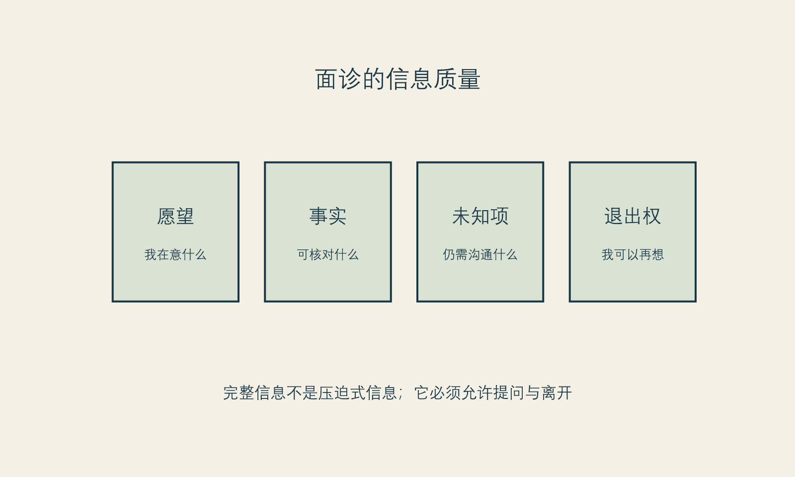
图 10 信息质量地图。图为作者原创，帮助准备沟通，不替代知情同意文件或专业建议。
下面的十个问题不要求一次问完，也不保证任何结果。它们的目的是让读者在面诊中保留自己的位置。
第十问很重要。它不是对对方的试探，而是对你自己权利的提醒。任何高承诺的身体相关决定，都不应把“没有立即决定”解释为你不够重视自己。
有些人在听到“期待管理”时会感到被冒犯：是不是在暗示我要求太高？真正的期待管理不该这样工作。它不是让专业人员用模糊语言降低责任，也不是让消费者提前接受任何结果。它是把可讨论的愿望、不可保证的结果、需要时间观察的变化、可能的替代方案和沟通路径说清楚。
一项针对择期手术共享决策的系统综述指出，决策支持通常以更知情、更符合患者价值为目标，而不是强迫某个手术率结果。(事实 F-010； Wong 等 2016年) 放在医美场景里，这意味着最好的沟通不以“成交”或“劝退”为唯一标准，而以读者是否能理解、表达和选择为标准。
如果你发现自己一直被打断、问题被笑话、对方只重复优惠、拒绝说明未知项、把第二意见说成不忠诚、或不断暗示“你不做就会更糟”，不需要立刻判断对方是否“坏”。你只需要承认：此刻的知情空间不够。离开、暂停、换一个环境或带支持者再来，都是合理选择。
你不欠任何人一个当场决定。你也不必为了证明自己理性而假装完全没有情绪。把情绪带进面诊没有问题；关键是不要让情绪成为别人替你签字的工具。
打印或保存这十问时，只挑三到五个最重要的问题。面诊后，不要马上评价“我喜不喜欢这个人”，先写三栏：
这种记录可以帮助你把一次强烈的现场感受，转化为之后仍可复核的信息。
面诊中的一个重要但常被忽略的问题是：谁先把某种差异定义为问题？读者可能带着自己的困扰而来，也可能在沟通过程中听见了许多此前没有在意的部位、风险或“可改善空间”。专业观察可以带来有价值的信息，但它也可能改变你看待自己的方式。因此，好的知情空间不仅允许你问“怎么解决”，也允许你问“这是否必须被解决”。
你可以把对方提出的新问题先放入“待确认”而非“待购买”清单。回家后问：这件事在我原先的生活里是否真的造成困扰？它与我最初来咨询的问题有何关系？如果不做它，会影响什么可核对的功能或体验？我是否只因为它被权威说出来，就突然觉得自己需要它？这些问题不是冒犯专业，而是防止专业语言无意中扩大你的不安。
不少人担心寻求第二意见会显得不礼貌，或被理解为对第一个人的否定。但在高承诺选择里，第二意见更像一种信息结构：它帮助你比较不同的解释方式、不同的未知项呈现和不同的沟通氛围。你不必要求两位专业人员给出完全相同的答案；差异本身往往能告诉你，哪些地方需要更清楚地提问。
第二意见的价值不是找到最愿意迎合你的答案。更好的问题是：谁更能说明不确定性？谁能把你的愿望翻译成具体、可讨论的范围？谁愿意解释不做、等待或分阶段的可能性？谁让你在不同意时仍感到安全？这些品质不能保证结果，却会提高过程的可理解性。
面诊结束后，人的记忆会保留气氛、承诺感和被理解的感觉，却可能遗漏限制与未知项。为此，不妨在四十八小时内完成一次“离场记录”：用自己的话复述你听到的方案、它要解决什么、不能保证什么、需要哪些生活安排、还要问什么。若你无法复述，不代表你不够聪明，只说明信息可能仍需要更清楚的解释。
然后把记录交给未来的自己，而不是立刻回到付款页面。两天后再读一次，你会更容易发现哪些是自己真正的偏好，哪些只是当场被说服的节奏。
医美沟通与期待管理文献包含不同研究设计；本章引用的2026年文章为叙述性综述，其结论需谨慎对待。[事实 F-014] “面诊十问”和“知情空间”是本书的消费者工具，不是法律文本、临床协议或对具体机构的评价标准。[立场 N-002]
下一章讨论广告。广告可以提供信息，但它不应承担第二个医生的角色，也不应替读者决定何时必须行动。
框架标签：积极斯多葛框架（原创解释框架）
广告最有效的时候，往往不像广告。它会先替你命名一种不安：疲惫感、松弛感、镜头里的陌生感、同龄人已经变得更好的感觉；再把一条项目路径放进这个不安里，仿佛它本来就在那里。读者看到的不是一句“买”，而是一种更轻的承诺：“只是了解一下”“不做就来不及了”“每个人都在做”。
我不同意把这件事简单归咎于“消费者不够理性”。人在疲惫、被评价、准备进入一个重要场合，或正在经历身体变化时，本来就更容易把外部线索当成内部判断。问题不在于你受到了影响，而在于广告的语言常常借用医学、亲密关系和自我照顾的权威，让“我可以考虑”悄悄变成“我必须尽快解决”。
这就是本章的中心句：广告可以是信息入口，但不能成为你的第二个医生，更不能成为你的内在法官。
第一种越界，是把审美偏好伪装成诊断。一个画面先放大局部，再配上“衰老预警”“问题脸”“修复黄金期”，会让原本多义的外貌差异看起来像明确的缺陷。可“看起来疲惫”不等于一个可以靠某一项目完整解决的医学命题；它可能和光线、表情、睡眠、场景、焦虑或观看方式有关。广告不需要把这些复杂性讲出来，正因如此，它不应独自承担判断的权力。
第二种越界，是把概率语言伪装成结果语言。所谓“自然”“无痕”“一步到位”“人人适合”，给人的感受是确定，而非条件。真正涉及身体的选择，通常有适应证、个体差异、恢复过程、限制与未知项。广告中没有出现这些内容，并不能证明它们不存在；只说明广告的任务不是完整解释。
第三种越界，是把时间压力伪装成关心。倒计时、名额、节日、婚礼、毕业、镜头、年龄节点，都可能是现实场景；但它们也最容易让你用“赶紧成为更好版本”来替代“我到底要解决什么”。当一项身体相关选择只能在紧迫感中成立，它就值得先被放进暂停键里。
中国现行《医疗广告管理办法》规定，医疗机构发布医疗广告前应申请医疗广告审查，未取得证明不得发布。(事实 F-002； 国家市场监督管理总局 2006年) 国家市场监管总局发布的《医疗美容广告执法指南》则以规范医疗美容广告监管、保护消费者合法权益为目的。(事实 F-003； 国家市场监督管理总局 2021年) 这些规则不能替读者完成个案判断，也不是本书提供法律意见的依据；它们至少提醒我们：医疗美容广告不是普通的生活方式种草，它处在更高的公共风险边界上。
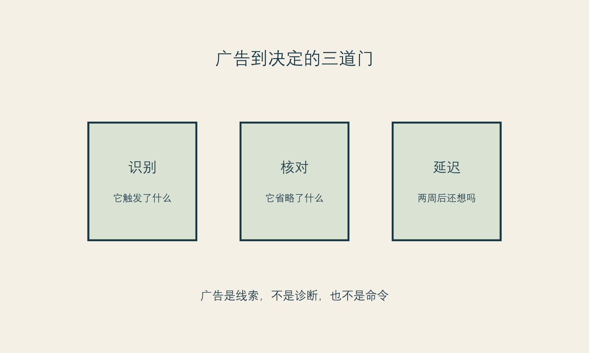
图 11 广告到决定的三道门。图为作者原创的消费者判断工具。
读到强烈心动的内容时，不必训练自己立刻反感。先把它拆成三层，情绪就不必直接变成订单。
第一层：它在展示什么？ 这包括画面、前后对比、人物气质、叙事场景和被放大的局部。展示可以令人向往，但展示不是完整事实。它要回答的是“你想看什么”，不是“你需要什么”。
第二层：它在承诺什么？ 试着把模糊词翻译出来。“高级感”具体指什么？“改善状态”可否描述？“可复制”是对谁、在什么条件下？如果一个承诺无法被复述为可提问的句子，它也就无法被认真核对。
第三层：它省略了什么？ 省略的不是广告必须承担的全部医学细节，而是你在作决定前需要补齐的问题：适合与不适合的条件、效果的范围、恢复安排、总成本、替代路径、沟通与复核的机制。把“省略”写出来，会让广告从一个封闭故事重新变成未完成的信息。
一个小练习：保存那条最打动你的内容，在下面写两列。
| 它让我立刻相信什么 | 我还需要问什么 |
|---|---|
| “我现在的状态很糟” | 哪个具体场景让我这样感觉？是否每个场景都如此？ |
| “这就是我需要的方案” | 它要解决什么，又明确不能解决什么？ |
| “现在不做会错过” | 错过的是医学窗口、价格窗口，还是情绪窗口？ |
| “别人会更认可我” | 我希望获得的认可，是否只有这一条路径？ |
这不是为了证明广告在欺骗你，而是为了把你的判断从广告的节奏里取回来。
人们常常更信任“素人分享”，因为它有细节、有情绪、有成本、有恢复日记，也更像一个普通人说给另一个普通人听。但真实性和完整性不是同一件事。一个人真实地喜欢自己的结果，并不能说明同样的选择对你适合；一个人真实地后悔，也不能自动说明所有类似选择都会后悔。
更需要谨慎的是，分享者往往只呈现了自己能够呈现的部分。镜头会裁切时间，平台会奖励强烈转折，叙事会自然选择一个能讲出来的原因。你没有必要怀疑每一位分享者；你只需拒绝把任何一个故事升级为自己的证据等级。
本书建议把内容来源按用途分开：
这四类信息不能互相取代。尤其不能让第一类直接替代第二、三、四类。
当广告把你推向“现在就决定”时，试着只做四步。
命名。 写下它击中了你什么：害怕显老、害怕被比较、想在某个事件前更从容，还是终于看到一种自己喜欢的风格。命名不是压制欲望，而是让欲望不必伪装成命令。
分离。 把“我喜欢这个效果”与“我现在就应购买这个方案”分开。前一句是偏好，后一句是行动；两者之间还需要信息、时间和边界。
核对。 至少找两个不在同一销售链条中的来源，询问同一问题。不是为了找到“绝对正确”的答案，而是为了看见不确定性是否被完整呈现。
延迟。 为高承诺选择设置一个不被优惠绑架的冷却期。冷却期不是自我惩罚，也不要求你最后不做；它是让决定从即时唤起回到长期生活的一段空白。
斯多葛主义常被误解成“不要被任何东西影响”。这不现实，也不必要。更可用的理解是：你无法决定别人用什么画面触发你，但可以决定一次触发是否直接获得你的签名。积极斯多葛主义的积极，不在于否认想变美，而在于让你在想变好时仍能保留主动权。
有时，一条内容之所以难以放下，并不因为它说得多有道理，而是因为它碰到了一个更深的命题：我是不是正在失去被喜欢的资格？我是不是已经落后？我是不是必须变得更好，才配进入某个关系、职业或年龄阶段？
这类命题不应由营销文案回答。它也不一定需要立刻由项目回答。若外貌相关的念头变得反复、痛苦，明显影响工作、关系或日常生活，最稳妥的做法是向合格的医疗或心理健康专业人员寻求评估与支持，而不是自行依据网络内容给自己下结论。本书不提供诊断或治疗建议。
下一次保存内容时，给自己五分钟，写下：
第五问没有标准答案。它的作用不是把消费冲动驳回，而是防止一个项目替所有未被说出的需要背书。
本章对广告语言和消费节奏的分析，是作者的框架性判断；它不对任何机构、平台、创作者或具体内容作违法认定。有关中国医疗广告规则的表述仅限所引规范的文本层面，出版前须再次核对其现行有效状态。[事实 F-002；事实 F-003] “三道门”“广告后记录卡”是消费者自我保护工具，不构成法律、医疗或心理治疗建议。[立场 N-002]
下一章讨论一个常被压缩掉的时间段：恢复期。决定不是在付款时结束，而是在身体、日程、期待和关系重新协商的过程中继续发生。
框架标签：积极斯多葛框架（原创解释框架）
人们谈论医美，常把时间切成两个点：做之前与做之后。前者是选择，后者是结果。真正困难的部分却在中间。恢复期既不是项目说明书里的空白，也不是“忍一忍就过去”的注脚；它是一段身体感受、日常安排、他人目光、信息摄入和自我解释彼此缠绕的时间。
如果说付款时签下的是一个选择，恢复期里每天都在签的是对这个选择的解释。肿胀、疼痛、等待、镜子里的陌生感、朋友一句无心的话、工作镜头突然变多，都可能把人从“我做了一个经过考虑的决定”拉到“我是不是犯了错”。在这段时间里，最容易发生的不是医学判断，而是心理上的抢答：太早宣布成功，或太早宣布失败。
本章不说明任何项目的恢复规律，也不提供术后处理建议。涉及症状、用药、异常、复查和紧急情况，应遵循治疗团队的具体指示，并在需要时及时联络合格专业人员。这里讨论的是另一件事：怎样不把不确定性误判成道德失败。
恢复期会同时降低三种能力。第一是耐心。身体感受占据注意力时，人很难像平时一样处理模糊信息。第二是比例感。局部变化在镜子、自拍和反复查看中会被放大，生活的其他部分却缩小到背景。第三是自我善待。你可能会责备自己太冲动、太虚荣、太不该在意外表，仿佛所有不舒服都是一场应得的惩罚。
积极斯多葛主义不要求你在不舒服时表现得毫无波澜。它要求的只是把问题放回正确的层级：有些事情属于需要专业判断的身体问题；有些事情属于等待与观察；有些事情属于我们在焦虑中赋予它的意义。把三者混在一起，会让任何一个小波动都看起来像人格、命运或关系的判决。
可以使用一个简单的“三栏记录”。
| 发生了什么 | 我知道什么、还不知道什么 | 我现在可以做什么 |
|---|---|---|
| 我照镜子时很慌 | 我知道自己很在意；我不知道这意味着最终结果 | 按专业人员给出的路径核对；减少重复拍摄；找支持者说清楚感受 |
| 别人问我是不是变了 | 我知道对方问了；我不知道对方在评价我 | 选择一个预先准备好的回答，或说我不想讨论 |
| 我后悔付款 | 我知道我在后悔；我不知道这种感受会持续多久 | 记录触发点，不在情绪高峰新增项目或作重大消费决定 |
第三栏并不承诺你马上好受。它只是把“我必须立刻确定一切”改成“我可以完成眼前可完成的一步”。
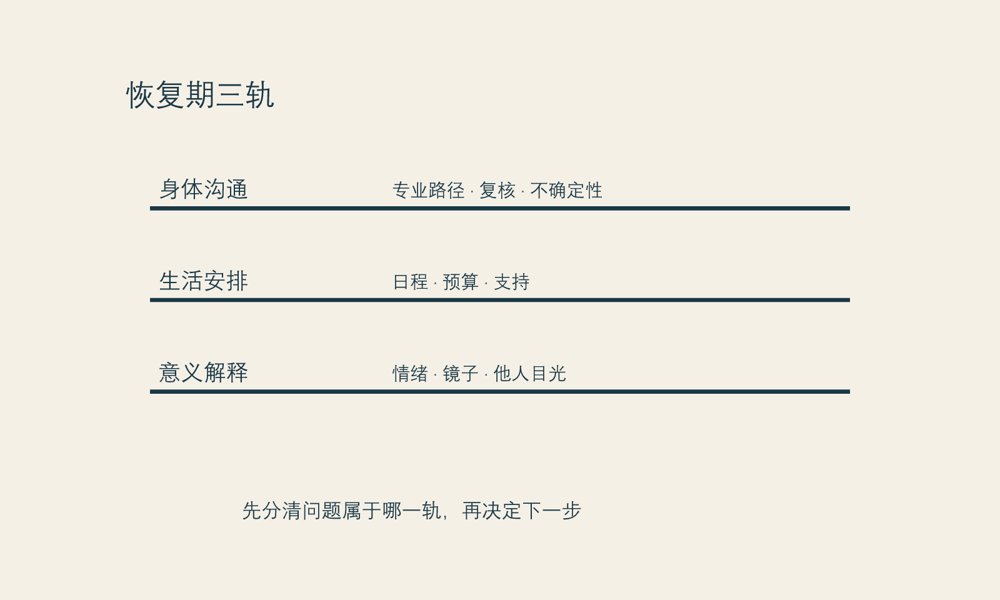
图 12 恢复期三轨图。图为作者原创，提醒读者不要把不同性质的问题混为一谈。
很多选择在咨询室里显得可行，是因为生活成本尚未进入画面。恢复并非只占用日历上的几天；它也会碰到照护责任、会议、出差、拍照、亲密关系、睡眠、预算、隐私以及你是否能安心休息。提前把这些问题写下来，不是悲观，而是尊重现实。
在决定前，读者可为自己准备一份“恢复期生活表”，不填医学答案，只填生活条件：
这份表的价值在于，它让“恢复”从一段抽象的医学术语，重新变成你实际拥有或缺少的条件。若条件暂时不足，推迟可能是成熟的选择，而不是错过机会。
恢复期最常见的陷阱之一，是反复检查。你本来只想看一眼，后来变成不同灯光、不同角度、不同滤镜、不同时间段的无数次比对。每一次检查都像是在寻找一个确定答案；但当答案尚不能被镜子给出时，检查只会让注意力越来越窄。
给镜子设边界，不是要你逃避自己的脸或身体，而是停止把镜子当作即时裁决者。你可以预先决定：在必要的日常照料之外，不在一天内反复自拍，不拿旧照或他人照片做高频比对，不在情绪最强时搜索极端故事。若需要记录，也尽量用固定光线、固定频率、固定目的的方式完成，并以专业沟通的要求为准。
这里的关键不是“少看就会满意”。那是一种不能保证的心理承诺。关键是，少一些重复检查，能够为生活中其他可控的事腾出注意力：吃饭、睡觉、工作、走路、读书、和可信的人说话。生活恢复得越早，外貌越不容易独占你的解释权。
一些读者真正害怕的不是变化本身，而是别人会怎样看。担心被发现、被议论、被说不自然，也担心没有人注意到，仿佛投入因此失去证明。两种担心背后都有一个共同结构：把他人的反应当成结果的唯一计量器。
这很苛刻。别人可能看见，也可能没看见；可能称赞，也可能沉默；他们的反应常由自己的注意力、关系边界和表达习惯决定。它们不构成对你价值的裁定，也不构成对医疗结果的专业评价。
提前准备边界语言，能减少临场的慌乱：
这些话并不冷漠。它们是在把关于你身体的信息所有权留在你手里。关系中真正支持你的人，未必总能说出完美的话，但会尊重你不说明的权利。
后悔是恢复期里很容易被道德化的感受。有人把后悔当成“我终于清醒”，有人把它当成“我果然不配做决定”。这两种解释都太快。后悔可能来自疼痛、预算压力、等待、期待落差、他人反应，或某个原本就存在的生活难题被重新照亮。它也可能持续很久，值得被认真对待。
更稳妥的处理是先区分：现在是需要医疗沟通的问题，还是需要生活支持的问题，还是需要更长时间观察的感受问题。对前者，应联系合格专业人员；对第二类，可能需要调整日程、预算、隐私与陪伴；对第三类，可以先避免在情绪高峰加码选择。任何一种都不需要靠自责来证明你有判断力。
2025年的一项系统综述指出，关于美容手术后心理社会结局的证据整体仍受研究质量和长期数据限制；部分短期结果可能改善，但不能据此对任何个人作确定预测。(事实 F-009； Garbett 等 2025年) 这不是为了制造恐惧，而是为了拒绝两种过度承诺：做了就一定更快乐，或一时不安就一定说明做错了。
斯多葛传统里有一个朴素的分辨：不是所有发生在我身上的事都由我决定，但我仍能练习如何回应。放在恢复期，它不是让人硬撑，而是把注意力放回可负责的环节：遵循合格专业人员的沟通路径、维护自己的生活安排、减少不必要的比较、说清自己的边界、在需要支持时求助。
这份练习还有更积极的一面。它让你发现，你对自己的照料不必等到结果满意才开始。你可以在不确定中按时吃饭、允许休息、拒绝不想参加的活动、把镜头关掉、向可信的人说“我今天有点脆弱”。这些行动不能决定最终外观，却能决定你是否被一段恢复期完全吞没。
把下面几句话写在容易看见的地方：
我可以关心结果，但不必每小时裁判结果。
我可以感到后悔，但不必立刻把后悔变成下一次决定。
我可以需要帮助，而不必先证明自己足够严重。
我不必用别人的反应，为自己的选择盖章。
这些不是积极暗示，更不是对专业意见的替代。它们只是把你从仓促的自我审判中带回一个可呼吸的位置。
“恢复期三轨图”“生活表”和“备忘卡”均为作者原创的生活与决策工具，不包含项目恢复时长、风险处置、用药或医疗判断。有关美容手术心理社会结局的概述来自系统综述，但研究结果不能外推为个人预后。[事实 F-009] 如出现任何医疗或心理健康方面的担忧，应联系相应的合格专业人员。
下一章谈满意。满意不是一个在结果出现时自动亮起的灯，也不应成为你被允许继续生活的条件。
框架标签：积极斯多葛框架（原创解释框架）
“满意了吗？”这句话听起来像一个简单问题，却把许多复杂体验压成了一个开关。好像结果一旦出现，人就该回答满意或不满意；满意意味着选择正确，不满意意味着需要立刻修正。对以外貌为中心的消费来说，这种二分法特别危险，因为它会把人的感受、关系、期待、身体变化与下一次购买，绑成一条过快的链。
我不同意把满意当作“项目是否值得”的唯一指标。满意当然重要，但它不是单一、稳定、只由一个结果决定的心理状态。你可能喜欢某一处的变化，却仍对另一处感到焦虑；你可能在某个场景很自在，在另一个场景又开始比较；你可能认可自己当时的决定，却不喜欢恢复过程中的某一天。允许这些并存，比强迫自己给出一个总评分更诚实。
本章提出一个更有用的区分：结果评价、生活评价与自我评价，不是同一件事。
结果评价问的是：我所期待的具体变化，在我理解的范围里是否出现？这是一个可以与合格专业人员继续沟通的问题，但它往往需要条件、时间和专业解释。
生活评价问的是：这段选择进入我的日程、预算、关系和注意力后，给我的生活带来了什么？它不必只看外貌，也要看你是否更能工作、休息、社交，还是反而被反复检查、隐瞒、比较和追加消费占住。
自我评价问的是：我是否因此更值得被尊重、更配拥有关系、更有资格被看见？这张成绩单本来就不该由医美、衣着、体重、护肤或任何改善型消费来出具。它是最容易被偷偷塞进消费决定、也最需要被请出去的一张。
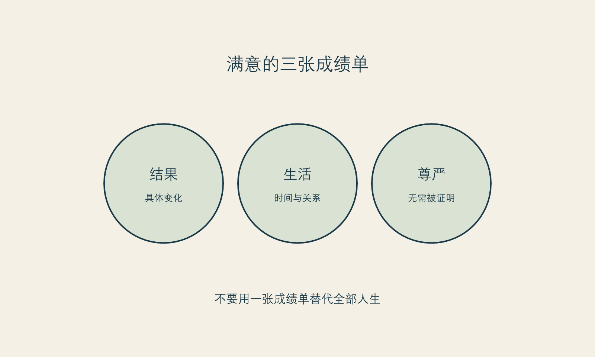
图 13 满意的三张成绩单。图为作者原创，帮助避免把身体选择升级为人格判决。
当三张成绩单混在一起，人很容易走向两种极端。第一种是“既然还有不满意，我就必须继续做”。第二种是“既然我在意外貌，我就是肤浅的”。前者把正常的复杂感受变成加码理由，后者把偏好变成罪证。两者都没能给你真正的判断空间。
改善型消费有一种天然的递进结构：发现一个部位，解决一个部位；看到新的对比，再发现新的部位。这个过程不必然错误，但它很容易让人把“还有想改善的地方”理解成“我刚才的选择完全失败”。于是，满意不是被体验，而是不断被推迟到下一项之后。
为此，给自己设一个“解释窗口”很重要。它不是医学上的固定时间，也不是所有人都适用的规则，而是一个行为边界：在尚未完成与专业人员约定的沟通、观察或复核之前，不因焦虑、平台内容或他人评价而追加新的高承诺决定。你可以记录新念头，但不必马上把它们转成行动。
记录时问三个问题：
第三问有意把注意力从脸上移开。它不是否认外貌问题，而是防止外貌成为唯一的解释出口。
本书不能也不会教读者给自己诊断。需要说清的是：如果对外貌缺陷的担心变得反复、难以控制，伴随大量检查、回避、比较或明显影响工作、关系和日常生活，那么“再找一个项目”不应是唯一入口。向合格的医疗或心理健康专业人员寻求评估与支持，可能比在信息流里继续寻找答案更稳妥。
一项2022年的系统综述与荟萃分析，汇总了美容手术请求者相关的48篇文章、14,913名参与者，估计身体变形障碍的患病率为19.2%，并报告研究间存在明显异质性。(事实 F-007； Salari 等 2022年) 这个数字不能用来判断任何一个人，更不能用来给某机构人群贴标签；它只提示一个边界：在求美场景中，不能把所有强烈困扰都当成“审美要求高”。
关于整形外科场景筛查方法的系统综述也指出，相关工具的验证证据有限，仍需要进一步研究。(事实 F-008； Houschyar 等 2019年) 因此，本书不附自测题、不把网络筛查当作诊断，也不建议读者拿任何量表为自己或他人下结论。真正有帮助的第一步，往往是把困扰说给具备相应资质的人听。
当一项选择被赋予太多任务时，结果很难承受。你希望它让你在婚礼上自在、在职场上更有底气、在关系里更安全、在年龄焦虑里更平静、在过去的伤害里翻页。这里面有些期待是可以讨论的，有些却属于关系、创伤、职业处境或自我价值的更深层工作。一个项目可能参与其中，但不应被要求独自解决所有问题。
积极斯多葛主义在此给出的不是“降低期待”的训诫，而是一个分配原则：把一项改变可以承担的责任，和你的人生需要被照料的责任分开。前者可以被精确询问、评估和沟通；后者需要更长的生活建设，有时也需要支持系统。把它们分开，不会让愿望变小，反而使愿望不必背负不可能完成的职责。
你可以写下这样一段“责任分配”声明：
我希望这项选择帮我改善_。
我不要求它证明我_。
即使结果有局限，我仍会通过_照料自己在意的生活部分。
若我发现自己把全部希望压在它身上，我会先暂停下一步，并找_讨论。
声明不保证满意，但能让你看见自己是否正在把一个有限选择扩大为全人生的判决。
有些人担心，若自己没有表现出足够满意，就等于辜负了花费、家人的支持或专业人员的努力。于是他们强迫自己说“挺好的”，压下所有疑问；另一些人则因为不敢承认喜欢，怕显得虚荣，便把任何愉悦都解释成浅薄。两种克制都让感受失去真实位置。
你可以喜欢变化。你也可以有疑问。你可以愿意继续沟通，而不必先把自己归入“完美受益者”或“失败消费者”。这不是矫情，而是对身体相关选择应有的复杂度。
2025年的系统综述认为，美容手术后心理社会结局的总体证据仍不足以支持简单的“会更幸福”叙事，且长期结局不确定。(事实 F-009； Garbett 等 2025年) 这项结论的价值不是泼冷水，而是让我们避免把满意许诺成商品。满意可以发生，也可以变化；它不应成为任何人被尊重的前提。
如果你发现自己每天都在给结果打分，试着把问题从“我满意吗”换成更具体的三个问题：
这些问题听起来小，却把“满意”从一枚遥远的奖章，拉回可练习的日常。你不必把身体选择从人生里删除；你只需要阻止它接管整个人生。
本章不把身体变形障碍患病率研究用于个人筛查、诊断或风险预测。[事实 F-007；事实 F-008] 关于美容手术心理社会结局的讨论，受不同项目、样本与研究设计限制，不能外推为个体结果。[事实 F-009] “三张成绩单”“解释窗口”和“责任分配声明”是作者的非临床决策工具。若外貌困扰造成显著痛苦或功能受损，请寻求合格专业帮助。
下一章离开面诊室和镜子，讨论一个反直觉的命题：改善并不必须只发生在脸上，很多时候，它更需要发生在生活的支撑结构里。
框架标签：积极斯多葛框架（原创解释框架）
“改善自己”很容易被理解成改善外貌，因为外貌最容易被看见、被比较、被量化，也最容易被市场拆成一个接一个的项目。但如果一个人的改善只能发生在镜子里，那么她很快会发现：镜子永远有新的角度，平台永远有新的标准，消费永远有新的下一项。
我不同意把“把改善从脸上拿下来”理解成反对外貌改善。那会重演另一种道德优越感：仿佛关心外貌的人不够深刻。这个命题真正反对的是单通道改善，即把精力、金钱、时间和希望几乎全部押在可见外观上，仿佛生活中所有的不满足都能在那里被修复。
积极斯多葛主义提供的不是少欲望，而是多支点。当一个人的尊严、愉悦和行动能力只靠一个支点支撑，它就特别容易被风吹倒；支点多一点，外貌仍可以重要，却不必成为唯一的生命工程。
为了让“多支点”不只是一句好听的话，本书把改善型生活消费粗略分成四种资本。它们互相影响，但不互相替代。
| 资本 | 它回答的问题 | 容易被忽略的风险 |
|---|---|---|
| 身体与形象资本 | 我如何感到舒服、得体、可见？ | 把形象误当成人格价值 |
| 能力资本 | 我能做什么、学什么、如何保持选择余地？ | 只为证明自己而不停升级 |
| 关系资本 | 谁能理解我、支持我、与我共同生活？ | 用被看见替代被理解 |
| 生活韧性资本 | 我有多少睡眠、时间、财务缓冲与恢复能力？ | 把透支伪装成自律 |
一个项目可能提升其中的一部分，也可能占用另一部分。比如，一项外貌选择可能让你在某个场景更从容，但若它把预算压缩到没有休息、学习或照护的余地，它就不再只是“变好”，而是资本之间的取舍。成熟的判断不在于永远选择非外貌的那一项，而在于看清你是在增加生活的承载力，还是在用一个可见变化掩盖承载力的不足。
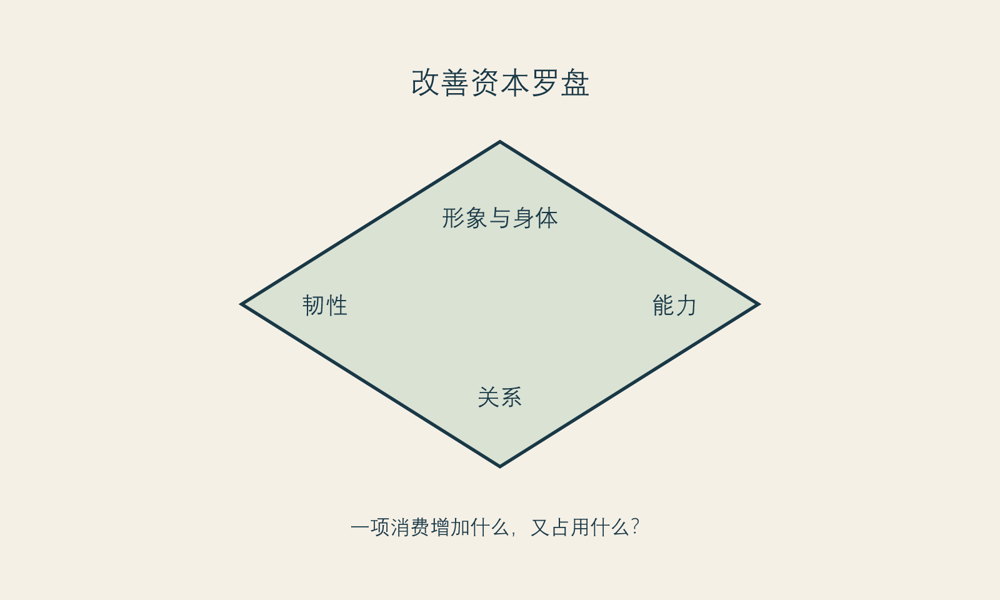
图 14 改善资本罗盘。图为作者原创，用于判断一项消费增加或消耗了哪些生活资源。
有一个值得警觉的信号：当你开始用同一个外貌问题解释太多生活困难。工作不顺，是因为我看起来不够好；关系紧张，是因为我不够有吸引力；不敢表达，是因为我某处不够完美；没有休息，是因为我还不配松下来。这样解释的好处是简单，坏处是把真正需要处理的处境全部压缩成一张脸。
外貌当然会影响体验，也确实处在社会评价之中。否认这一点并不诚实。但它不是全部原因。社会比较与身体不满意之间有稳定的关联证据，说明比较环境值得被认真对待；它并不说明每一种不安都要由外貌本身解决。(事实 F-005； Bonfanti 等 2025年) 当问题被错误地缩小，解决方案往往会被错误地放大。
一种实用的反问是：如果这个外貌问题明天暂时不再困扰我，我的生活中还会剩下哪些困难？
答案可能是睡眠不足、收入焦虑、职业门槛、亲密关系里的不安全、长期疲惫、缺少朋友、缺少空间、被照护责任压住。它们并不比外貌问题“更高级”，只是更接近你真正要照料的生活。把它们写出来，不是为了取消医美选择，而是避免让一个选择替所有问题承担责任。
消费建议常说“量力而行”，但这句话太空。更具体的做法是把预算放进三个账户：安全账户、生活账户、愿望账户。
这不是一套普遍适用的财务比例，也不是对任何人消费能力的评判。它只是在提醒：一个让你失去安全和生活余地的选择，即使看起来“很值得”，也应当被重新计算。
斯多葛人的节制并不等于拒绝好东西。它是拒绝把好东西变成主人。对改善型消费而言，节制的现代形式或许是：我可以为喜好花钱，但不让一项喜好夺走我保持选择余地的能力。
每周花十分钟，给四种资本各写一件你实际做过的事，不要求它们都要花钱。
| 本周我为自己增加了什么 | 例子 |
|---|---|
| 形象与身体 | 穿了舒适的衣服、完成了必要照料、停止跟拍比较 |
| 能力 | 学会一个技能、完成一个工作步骤、整理一份资料 |
| 关系 | 主动联络一个可信的人、说清一个边界、接受一次帮助 |
| 韧性 | 早睡一次、留下预算缓冲、取消一项不必要的消耗 |
这个盘点不会制造立竿见影的自信。它做的事更朴素：让你每天都能在不靠外貌评分的地方，找到自己正在变好的证据。
当读者开始在能力、关系、休息和形象之间重排优先级，常会担心这是否意味着“我不该再做医美”。不一定。有人会发现自己仍想做，只是愿意多等一等、少做一点、换一种方式沟通；有人会发现真正需要的是暂时离开比较环境；也有人会发现外貌选择依然在其价值排序里。框架不替你作出结论。
它只要求一个诚实条件：任何选择都应当经得起“它给我的生活增加了什么，也拿走了什么”的追问。能通过这句话的改善，更不容易让人自困。
“四种改善资本”“三账户”和“每周盘点”是本书的价值与消费工具，不是标准化心理测验或财务建议。[立场 N-001] 社会比较研究提供的是关联层面的背景，不证明任何个人的外貌困扰由单一因素造成，也不保证减少比较即可解决困扰。[事实 F-005]
下一章转向关系。许多消费决定并不是在一个人独处时形成的，而是在评价、期待、建议、玩笑和沉默之间慢慢被推着走。
框架标签：积极斯多葛框架（原创解释框架）
很少有外貌决定是完全独自形成的。有人被伴侣的一句评价刺痛，有人想在家人面前显得更有精神，有人担心职场镜头，有人被朋友的“你也去做一下吧”推动，也有人把改善当作重新进入社交的门票。关系并不一定恶意，甚至许多建议来自关心。但关心一旦跳过了你的意愿、身体和承受能力，就会从支持变成压力。
本章的立场很明确：任何涉及身体的改善，都需要保留拒绝权；而关系的质量，恰恰体现在它能否容纳这份拒绝。
拒绝权不只意味着对一个项目说不。它还包括对讨论说不、对评价说不、对催促说不、对被拍摄说不、对被当成案例说不。一个人可以愿意分享，也可以改变主意；可以接受建议，也可以不接受；可以喜欢外貌改变，也可以拒绝让外貌成为关系中的常设议题。
关系里的语言常混在一起。有人说“我只是建议”，实际上传递的是“你应该照我的标准改变”；有人说“我是为你好”，实际是把自己的焦虑交给你处理；有人说“开个玩笑”，却在重复标记你的身体。区分它们，不是为了把每一次笨拙表达都升级为伤害，而是为了知道你面对的是什么。
当一条“建议”让你害怕拒绝、害怕失去关系、害怕被嘲笑，它就已经超出了建议的范围。你不需要先证明自己受伤得足够严重，才有资格设边界。
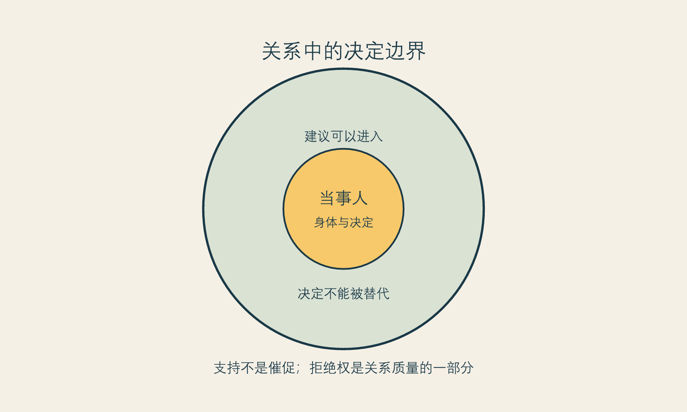
图 15 关系中的决定边界。图为作者原创。
边界不是辩论冠军的发言稿。它的目标不是让每个人都承认你对，而是让你不必持续暴露在一个不想继续的议题里。以下句子可以按关系和语气调整：
说出边界以后，对方不一定马上理解。边界的有效性不取决于对方是否满意，而取决于你是否把下一步行动配套起来：离开话题、减少解释、改变见面场景、寻求支持，必要时重新评估关系中的安全感。若关系中出现控制、威胁、经济限制、强迫身体改变或其他让你感到不安全的情形，优先考虑现实安全与可获得的专业支持。
另一方面，关系中的拒绝权也要求我们允许他人不为我们的选择背书。伴侣、家人或朋友可以担心预算、恢复安排、风险、照护责任或情绪状态；这不必然等于他们否认你的身体主权。真正的分界不在于“对方是否赞成”，而在于他们是否尊重你有时间、信息和退出权，是否愿意把担心说成可以讨论的事实，而不是攻击你的人格。
一种可用的对话结构是：
我现在考虑的是_。
我希望它改善的是_。
我知道其中有_需要谨慎。
我希望你提供的是_，而不是替我作决定。
如果你有担心，请说具体条件，不要评价我的价值或外貌。
这样的表达不保证谈话顺利，却让双方有机会从“你支持不支持我”转向“我们能否尊重彼此的担心与决定边界”。
支持者不是第二个销售，也不是第二个审判者。最有用的支持往往很朴素：陪你把问题写出来，提醒你不要在压力下付款，帮助安排日常，尊重你不想解释的部分，在你情绪反复时仍不把你变成谈资。
若你准备让某人参与面诊或恢复安排，可在事前明确其角色。比如：“我希望你帮我记下信息，不要替我回答”；“如果我被优惠催促，请提醒我带资料回家”；“我不希望你把我的决定告诉任何人”。角色越具体，关心越不容易越界。
斯多葛传统重视人与人之间的义务，但这并不意味着个人必须服从关系中的评价。相反，真正的关系义务包括不把他人当成满足自己焦虑、审美或控制欲的工具。对身体相关决定而言，这是一条尤其重要的尊严边界。
本章是关系沟通与价值判断，不对任何关系下法律、医疗或心理风险作个案判断。[立场 N-002] 其中的边界语言可按现实安全、依赖程度与文化环境调整；在感到不安全时，不应仅依靠沟通模板，应优先联系可信支持者或相应专业机构。
下一章谈“有限”。它不是消极的退场，而是让任何改善都不再要求你无限投入、无限等待、无限证明自己的起点。
框架标签：积极斯多葛框架（原创解释框架）
“积极”常被误解为永远相信还可以更好。它于是很容易和改善型消费的语言合流：更年轻、更精致、更自律、更有竞争力、更接近理想版本。但如果“更好”没有边界，它不是积极，而是一份永远不会结案的任务。你可以完成一个目标，却马上被推向下一个；你可以得到称赞，却被提醒还有哪里不够；你可以休息，却被说成正在落后。
积极斯多葛主义想保留的积极，不是无限优化，而是有限条件下仍有行动力。它承认身体会变化、资源有限、他人有意见、结果无法完全控制；同时它拒绝把这些事实翻译成放弃照料、放弃选择或放弃愉悦。有限不是你不配变好的证据，而是你必须为“变好”设定尺度的理由。
第一种是身体有限。没有任何外貌状态会永久停留，也没有任何选择能把身体变成一个永不变化的物件。承认这一点并不要求你停止照顾自己；它要求你不把照顾误解成对时间的胜诉。
第二种是信息有限。即使获得了许多资料，你仍可能无法提前知道每一项个体感受、恢复体验和长期心理变化。2025年的系统综述对美容手术心理社会结局作出谨慎评价，正说明“结果会怎样”常不能被一句承诺概括。(事实 F-009； Garbett 等 2025年)
第三种是资源有限。钱、精力、恢复空间、关系支持与注意力都有限。一项选择不仅有价格，也有机会成本。把这些成本算进去，不是扫兴，而是让你不会为了一个愿望牺牲自己保持选择的能力。
很多人害怕设置限度，因为觉得那会让愿望缩水。实际上，限度让愿望有落点。没有限度的愿望只能不断追赶；有了限度，才可能完成、休息、回到生活。
你可以为改善型消费设四个限度：
它们都不是普遍规则。你可以自行调整，但最好在情绪平稳、没有促销压力时写下。限度的意义不是限制你享受，而是保护那个将来仍要生活的你。
“向上”这个词很容易被理解成爬向更高的位置：更好看、更被认可、更接近标准。这里我给它一个不同的方向：向上是把你对自己生活的解释能力、选择能力与照料能力抬高一点。
当你能说出“我喜欢这个，但不急于拥有”，你在向上；当你能说出“我需要第二意见”，你在向上；当你能说出“我不想继续被评论”，你在向上；当你能在不确定里照顾日常，而不是立刻加码，你也在向上。它们未必被看见，却比一次外部认可更难被夺走。
本章的“限度”是作者提出的价值与决策设计，不是对特定项目、预算或身体状态的建议。[立场 N-001] 心理社会结局的研究不支持对个人作确定保证或否定。[事实 F-009]
最后一章不提供完美答案，而是一份可以在下一次被比较、被催促或重新心动时拿出来的备忘。
框架标签：积极斯多葛框架（原创解释框架）
未来的你仍会被某张照片打动，仍会有疲惫、重要场合、被比较或突然想改变的时候。这不是本书失败的证据，也不是你没有学会“接纳自己”。人会在不同阶段重新看待身体、年龄、风格与关系。真正重要的是，当新一轮冲动到来时，你能否少一点自我审判，多一点可用的判断。
这份备忘不是誓言：它不要求你以后绝不消费、绝不医美、绝不在意外貌。它只给未来的你留下一套更慢、更清楚的提问方式。
在任何新的改善型消费前，给未来的自己留下一页：
我现在想改善的是_。
触发我的场景是_。
这件事哪些部分是事实，哪些是推断，哪些是愿望？
我还不知道什么？我会向谁核对？
如果不立刻做，我的生活会怎样？
我的安全、生活与愿望账户是否都被尊重？
我希望谁支持我，他们的角色是什么？
即使我最后不做，我可以怎样照料自己？
这页纸不负责替你得出“做”或“不做”的结论。它只负责让结论从你的生活里长出来，而不是从别人的节奏里落下。
镜子本来只是工具。它可以帮助你整理仪容、选择风格、看见变化；它不该变成全天候的法庭。广告本来也是信息的一种形式；它可以带来线索，却不该替代医学沟通。改善型消费本来可以带来愉悦与行动；它不该被要求证明你值得被爱、被尊重、被看见。
本书所说的积极斯多葛主义，是一种把改善从审判中救出来的实践：承认自己会在意，承认世界会评价，承认选择有风险和限度；然后仍把价值、时间与决定权尽可能留在自己手上。
你不需要等到完全不在意外貌，才拥有自由。自由更像是在意的时候，仍知道自己可以慢一点、问清一点、拒绝一点，并把生活继续过得更宽。
本章的备忘与短页是作者原创的自我反思工具，不构成医疗、心理治疗、法律或财务建议。[立场 N-001；立场 N-002] 如有具体医疗或心理健康需求，请咨询相应的合格专业人员。
本书采用作者—年份引注。研究与规范性来源用于支撑可核查事实；本书提出的“积极斯多葛主义”及各项决策工具为作者原创解释框架，不应被误作既有临床学派或医疗建议。
本书提出的原创解释框架，不是一个经验证的临床治疗方法，也不等同于古典斯多葛主义的完整学说。它以控制梯度、尊严不附着于改善、认识克制、时间照料与关系尊重五个原则，帮助读者理解高承诺的改善型消费。
为改善外貌、状态、能力、居住感受、社交呈现或生活体验而发生的消费。本书以医疗美容为主要场景，同时讨论其在更广泛生活消费中的心理结构。
本书是面向成年读者的消费心理与决策写作，不是医疗、心理治疗、法律或财务意见。涉及具体医疗美容服务、症状、药物、风险、恢复、广告合规或个体心理困扰时，请向相应的合格专业人员咨询。
框架标签：积极斯多葛框架（原创解释框架）
以下情境为作者综合常见消费心理结构写成的匿名化练习，不对应真实个人、机构或项目；它们不提供医疗判断，也不替代个体化咨询。每一则的目的不是替任何人作结论，而是练习把一个“必须马上解决”的命题，重新拆回愿望、事实、条件、关系与时间。
阿宁在婚礼前两个月开始频繁看照片。她原本只担心自己在侧光下显得疲惫，后来每次打开平台都会看到“新娘必做清单”。她把清单保存下来，项目越存越多，最后感到如果不一次完成，就会在婚礼上留下终身遗憾。
她面对的并不只是一个外貌愿望，而是一个被仪式放大的时间命题：我能否以一个被自己认可的样子进入人生新阶段？婚礼确实不可复制，但“不可复制”不等于每个焦虑都必须靠高承诺选择来消除。她可以先做三件事：把最初的困扰写成具体场景，而不是项目名单；把婚礼的照片、日程、预算和恢复条件分开；明确哪些选择即使不做，也不会取消她进入这段关系的资格。
这里的积极斯多葛式重述是：我无法控制每一张照片、每一位宾客的目光和未来的回看，但我可以控制是否在倒计时里保留信息与退出权。婚礼是一天，关系是更长的生活；不要让一天替关系全部发言。
小乔被同事开玩笑说“你最近是不是该管理一下脸部状态”。她表面笑过去，回家却不断放大镜子里的细节。她并非完全不想改善，但真正让她急切的是害怕自己在团队里显得不专业、不够有精神。
这一困局的关键不是先判断同事是否恶意，而是区分三件不同的事：一句评价造成了伤害；她对自己状态的确有感受；她是否要作出医疗美容选择。前两件可以是真的，第三件仍然需要独立判断。把三者绑在一起，会让伤人的一句话直接获得消费决定权。
她可以先用边界语言回应未来类似的评论，再梳理自己真正想改善的职场体验：是想显得更有精神、减少镜头焦虑、拥有更合适的工作形象，还是希望不再被某一种评价刺痛？不同答案指向不同路径。关系边界、睡眠、风格、沟通与专业咨询，都可能在路径中；没有哪一项天然低级，也没有哪一项天然必须。
小岚看到朋友变化后很喜欢，朋友说“早做早享受”。小岚本来没有强烈困扰，却开始觉得自己如果不跟上，就会显得落后。她的焦虑来自一种社交同步压力：当身边人都在升级，我停在原地是否意味着失去位置？
比较的危险在于，它把他人的完成感误读成自己的时钟。朋友的体验可以是信息，却不能是你的医学、预算和生活条件。尤其当朋友的分享带着满意与兴奋，听者很容易忽略其不可见的部分：不同的人、不同项目、不同恢复安排、不同支持系统，以及不同的人真正想要的生活。
一个可用动作是把“她为什么做”与“我为什么想做”分别写在纸上。两列若高度相同，说明你可能还没有自己的问题；两列若不同，才有进一步核对的基础。朋友可以陪你收集问题，但不应替你决定时点。
小芸在恢复阶段每天拍几十张照片，换灯、换角度、翻旧照，也搜索大量极端案例。她越看越不安，于是开始考虑追加新的项目。她真正需要先处理的，不一定是新增选择，而是把镜子从“即时法庭”放回普通工具的位置。
恢复期的体验包含身体、生活与意义三条轨道。身体方面的问题应遵循合格专业人员的沟通路径；生活方面的问题需要安排休息、工作和支持；意义方面的问题则常常来自“这是不是证明我做错了”。若三条轨道混在一起，任何暂时的不适都会被扩大成全部生活的结论。
对她而言，下一步不是强迫自己喜欢镜子，而是减少高频比较，规定记录的目的和频率，并在情绪高峰不作新增高承诺决定。她可以感到不安，不必立刻让不安签字。
佳宁知道自己最近现金流紧张，却担心错过一个“只此一次”的活动。她不断对自己说，既然能分期，就说明是可承担的。这里需要挑战的不是她是否配拥有愿望，而是“可分期”是否被误读成“可承受”。
总成本不仅是报价，也包括恢复安排、交通、时间、可能的后续沟通，以及最重要的缓冲。安全账户一旦被清空，原本带来愉悦的选择就可能在日后变成持续压力。积极不是用愿望压过现实；积极是既不嘲笑愿望，也不让愿望夺走未来的选择余地。
她可以把优惠拿掉，问自己：如果它不打折，我是否仍愿意继续了解？如果答案是愿意，说明她可以先保存信息、等条件更稳；如果答案是否定，说明她需要先承认，自己想抓住的可能是“不想错过”的感觉，而不是这个选择本身。
雨晴在每一次改善后都会短暂高兴，随后注意力很快转到新的部位。她开始怀疑自己是否永远不会满意，也担心一旦停止就会被人看出“不够好”。此时最重要的不是逼她给自己贴上“贪心”或“有问题”的标签，而是检查满意的三张成绩单是否被混在了一起：她在评价一个具体结果，还是在评价生活是否更宽，抑或在评价自己是否配被尊重？
若第三张成绩单进入了消费链，任何结果都很难足够。没有一个项目能够证明一个人值得关系、工作或安宁。若外貌担忧、检查、比较或回避已经显著影响生活，寻求合格的医疗或心理健康支持，比继续把答案交给下一项消费更稳妥。本书不提供诊断，但反对用追加来替代评估。
不要问“我像不像其中某个人”。更有用的是：我此刻最接近哪一种结构？我的问题被谁定义？什么是可核对事实，什么是推断，什么只是我想摆脱的感受？我有哪些条件，也有哪些必须被保护的边界？
每一个困局都可以有不同结论：有人会继续了解，有人会等待，有人会换一种生活支持，有人会寻求专业帮助。框架的目的不是把所有人导向同一个答案，而是让任何答案都不必在羞耻、催促和比较中仓促完成。
使用方法： 本工作簿不是自测量表，不给出分数或结论。每次只填写一页；若感到明显痛苦、无法停止检查或比较、或生活功能受影响，请优先寻求合格专业支持。
我想改善的不是一个项目名，而是这个场景：____。
在这个场景里，我最在意的是：____。
我希望发生的具体、有限变化是：____。
我不要求这项选择替我证明的是：____。
如果暂时不做，我仍可以怎样照料这个场景：____。
| 类型 | 我现在写下的内容 | 我准备如何核对 |
|---|---|---|
| 事实 | ____ | 来源、日期、专业沟通 |
| 推断 | ____ | 是否有其他解释 |
| 愿望 | ____ | 是否仍符合我的生活排序 |
填完后问：我是否把愿望当成事实？是否把广告语言当成了医学判断？是否把一次感受升级成了永久结论？
| 条件 | 现在的状态 | 还需要什么 |
|---|---|---|
| 信息与沟通 | ____ | ____ |
| 预算与缓冲 | ____ | ____ |
| 日程与恢复空间 | ____ | ____ |
| 关系与隐私支持 | ____ | ____ |
| 暂停与第二意见 | ____ | ____ |
若“还需要什么”仍为空白，不代表你必须放弃；它提示现在可能还不是作出高承诺决定的时点。
我刚刚看到了什么内容：____。
它让我立刻相信什么：____。
它省略了什么：____。
我现在是获取信息，还是在为不安供电：____。
在作任何决定前，我要把注意力转回的生活动作是：____。
我用自己的话理解的方案是：____。
它要解决的具体问题是：____。
它不能保证、仍需要沟通或我尚未听懂的部分是：____。
不做、等待或分阶段的路径是：____。
我是否被允许带资料离开并寻求第二意见：____。
今天的我最急着摆脱：____。
三个月后的我希望保留：____。
两年后的我希望自己仍有的选择余地：____。
我给这次决定设置的冷却期结束日期：____。
冷却期结束时，我只重新回答：愿望还在吗？条件够了吗？我是否更能承受不确定性？
我想让谁参与：____。
我希望他们提供什么支持：____。
我不希望被讨论或传播的内容是：____。
我准备使用的一句边界语言：____。
若我感到不安全或被强迫，我可以联系的支持者或资源：____。
我不需要在任何结果出现前就给自己打分。
我会把身体沟通、生活安排和意义解释分开处理。
我会在情绪高峰避免新增高承诺选择。
我允许喜欢、疑问、后悔和等待同时存在；但我不让它们直接决定我的价值。
本书坚持一条写作纪律：有出处，不等于有答案；有研究，也不等于研究替你作决定。尤其在医美与身体意象议题中，研究往往来自不同国家、不同样本、不同项目和不同测量方法。它们能够帮助我们校正过度自信，却不能把复杂个体压缩成一条统计结论。
读到一项研究时，先问它的对象、设计与结论分别是什么。以社交媒体与身体意象为例，一项系统综述可以告诉我们已有哪些研究讨论两者的关联；一项荟萃分析可以概括多个研究中的相关强度；但这些通常不能证明某一条内容导致某个人进行医美，更不能说明停止使用某个平台就一定消除困扰。
2024年的系统综述纳入25项研究、13,731名参与者，讨论社交媒体、身体意象不满与美容手术考虑之间的关联。(事实 F-004； Mironica 等 2024年) 2025年的一项荟萃分析汇总83项研究和55,440名参与者，报告在线社会比较与更高身体意象困扰之间存在中等强度相关。(事实 F-005； Bonfanti 等 2025年) 这些数字的正确读法是：比较环境可能是值得纳入判断的背景，而不是“平台使我必须改变”的因果判决。
公众传播中最常见的两个错误相反。一个错误是看到相关就说因果：看社交媒体会导致某种决定，所以谁看谁就会怎样。另一个错误是因为无法证明单一因果，便说研究毫无意义。两者都太快。
相关研究可以告诉我们某些变量是否常常一起出现，哪些情境值得进一步关注，哪些直觉需要被挑战。2009年的一项荟萃分析汇总156项研究和189个效应量，发现社会比较与身体不满意相关。(事实 F-006； Myers 和 Crowther 2009年) 后续研究加入在线环境后，仍提示需要重视比较线索。但它们不能替你回答：我今天的焦虑具体来自什么？我是否适合某种医疗选择？这些问题还需要个人的生活脉络与合格专业沟通。
平均值很容易让人产生一种错觉：既然一项研究报告某种比例或趋势，我就应该知道自己属于哪一类。医学与心理领域尤其需要拒绝这种跳跃。比如，一项关于美容手术请求者的系统综述与荟萃分析估计身体变形障碍患病率为19.2%，但研究间存在异质性。(事实 F-007； Salari 等 2022年) 它不能变成读者的自测答案，更不能变成对任何人“你一定有问题”的判断。
同样，关于整形外科场景筛查方法的综述指出验证证据有限。(事实 F-008； Houschyar 等 2019年) 这意味着我们不应把一张网络量表、一条短视频或一本书附录当作诊断工具。若外貌相关担忧显著影响日常生活，合适的动作是与具备相应资质的专业人员讨论，而不是自行套用群体统计。
系统综述和荟萃分析通常处于较高证据层级，但“层级高”不等于“结论自动强”。它们的结论受纳入研究的质量、样本差异、结局定义与发表偏倚影响。美容手术后的心理社会结果尤其如此：不同项目、不同文化环境、不同随访期和不同测量方式，很难被一条“做了会更幸福”概括。
2025年的系统综述指出，部分短期心理社会结局可能改善，但整体证据质量与长期结局仍不确定。(事实 F-009； Garbett 等 2025年) 这句话并不要求读者悲观，而是要求所有推广或反对都少一点夸张。它同时反对两种营销：一是把项目包装成心理治疗，二是把所有改善选择说成必然有害。更诚实的表达是：结果可能复杂，需要在具体条件中沟通，并且不应承载对人生全部问题的承诺。
证据并非只有论文。规范性文件回答的常是制度边界，而不是心理效果。中国医疗美容服务管理办法中的定义、医疗广告管理办法的审查要求，以及医疗美容广告执法指南的监管目的，属于可核查的制度信息。[事实 F-001；事实 F-002；事实 F-003] 它们不能替代法律个案意见，也不能告诉你某个选择会不会让你满意；它们的作用是提醒：医美服务与医疗广告并不应被当作无风险的普通种草。
研究回答的是“在限定研究条件下观察到了什么”；规范回答的是“制度如何规定”；价值判断回答的是“我们愿意守护什么”。本书提出“改善可以被珍视，但不应成为判断一个人是否值得被尊重的条件”，属于价值立场，而不是可以靠一篇论文证明的事实。[立场 N-001] 把三者分开，是严肃写作也是严肃消费的基础。
当你看到“研究证明”“专家都说”“所有人都适合”“绝对无风险”时，试着写下：
最后一问尤其重要。信息可以是真的，仍不足以构成决定。决定还需要你的价值、预算、日程、关系边界和对不确定性的承受能力。
本书的引文不是装饰，也不是权威压迫。引用有三种用途：
每一项带有“事实 F-编号”的表述均应在研究台账中找到对应来源、定位与限制。读者若发现来源状态、制度有效性或研究结论已有变化，应以更新、更权威的原始资料为准。电子书出版不是研究的终点，而是一份可被复核的解释。
框架标签：积极斯多葛框架（原创解释框架）
医美是本书的主要场景，但它不是唯一会把“变好”变成压力的消费。护肤、穿衣、健身、学习、居住、旅行、数码工具、职业服务，甚至某些自我照料与心理成长产品，都可能携带同一套心理结构：我想改善一个体验，市场把它说成更完整的自己，比较把它推成不能落后，最后我开始用消费速度衡量价值。
把这些场景并置，并非要说它们风险相同。身体介入、医学信息不对称和恢复安排让医美具有更高的特殊性；其他消费不应被不加区分地医疗化。但它们可以共享一套判断问题：我究竟在改善什么？我能控制什么？我是否把愿望变成了人格考核？我是否还保留退出权与生活余地？
护肤是日常生活中最常见、也最容易被赋予道德意义的改善行为。人们从中获得触感、仪式感、节律和一点对身体的关照，这些都可以是真实价值。问题在于，当护肤被说成“自律”“精致”“不放弃自己”的证明，它就从照料变成考试。
管理感的幻觉在这里很强：只要步骤足够多、产品足够新、成分足够精确，就仿佛能够控制时间、疲惫和所有他人目光。可皮肤状态、生活节律、压力、环境与个体差异并不会完全服从一套程序。越把护肤当作全能控制，越容易在波动出现时责备自己还不够努力。
一个更稳的原则是：护肤首先服务于舒适、健康与日常可持续，而不是证明你从未松懈。你可以喜欢产品，也可以设预算；可以研究成分，也可以承认自己不会永远维持完美流程。若内容让你开始把每一次波动解释成失败，先暂停加购，回到最基本、最能维持生活节律的照料。
健身可以带来力量、功能、社交和愉悦。但在平台叙事里，它常被变成身体绩效：你必须把每一餐、每一次休息、每一条曲线都变成可展示的成绩。于是，原本帮助你更好生活的行动，反过来要求生活围着它转。
积极斯多葛主义不会反对训练目标。它反对的是把目标变成衡量全部自我价值的唯一刻度。一个可生活的目标应允许生病、工作繁忙、照护家人、情绪低落、身体波动和阶段变化；它能让人重新开始，而不是让人因中断就羞耻。
你可以把目标从“我必须变成某种身体”改为“我希望获得哪些可感知的生活能力”：走路更轻松、睡眠更稳、情绪有出口、能在关系和工作之外拥有一段自己的时间。外观变化可以是副产品，但不必成为对自己的唯一解释。
衣着比医美更可逆，也更常被看成轻松消费；但它同样会被身份焦虑驱动。你可能并不只是想买一件衣服，而是想避免被看作落伍、没有能力、不属于某个场合。此时，购买容易从风格选择变成社会入场券。
先承认衣着具有社会语言功能。得体并非虚伪，风格也不浅薄。问题是，你是否把每一个场合都理解为必须通过外观考试的现场。若答案是肯定的，衣橱很快会变成永远不够的证据库。
一个实用练习是建立“场景衣橱”而非“理想衣橱”：为真实高频场景准备能让你活动、工作和见人的少量组合；把想象中的完美形象与实际生活分开。这样，衣着能支持表达，而不再被要求解决归属感的全部问题。
课程、证书、训练营和职业咨询常以“成为更好的自己”为语言。这些服务可能真正有用，但也最容易利用一种焦虑：如果我今天不升级，明天就会被淘汰。学习由此不再是能力建设，而是对落后的恐惧管理。
判断一项学习消费时，可以问：它增加的是能力，还是暂时增加“我没有落后”的感觉？两者不总是冲突，但若后者完全压过前者，你会不断购买新的开始，却难以完成真正的练习。能力资本的关键不是拥有多少课程，而是能否把一个小动作转化为稳定的实践。
给学习设一个“完成优先”规则：在购买下一项前，先写下上一次你实际使用过什么、还缺什么、为什么缺。这样不是要你停止学习，而是让学习不再成为收藏焦虑的容器。
家居、收纳、装修和空间消费常承诺一种“回到家就会变好”的生活。空间确实影响体验，整理也可能带来秩序感。但当居住被包装成解决职业疲惫、亲密关系冲突和自我价值的总方案时，消费会变得沉重。
区分空间问题与生活问题很重要。你是否缺少的是光线、储物、休息区、工作边界，还是缺少时间、支持、沟通与安全感？前者可能需要空间调整，后者不能只靠购买物品解决。最有用的改善常常很小：给自己一个能坐下的角落、减少一件每天制造摩擦的物品、把晚上半小时从噪声中还给自己。
空间能支撑生活，不必被要求代替生活。
旅行有时被当作奖赏，有时被当作逃离，有时被当作社交资本。它可以真正恢复人，也可能在疲惫与比较中成为另一个必须被记录的项目。尤其当“你值得”被平台用来推动即时消费时，值得感很容易与支付能力、分享强度和目的地等级绑在一起。
值得休息不等于必须以最昂贵、最可展示的方式休息。一个更温和的问题是：我想从哪里暂时离开？我希望带回什么？我是否有能力承受这次安排之后的生活？有时答案是一次旅行，有时是一天无工作安排、一段不被打扰的睡眠，或一趟不需要向任何人证明的短途出走。
把休息从展示中分离，旅行才更可能成为恢复，而不是又一场比较。
新设备、订阅服务、效率系统和人工智能工具也属于改善型消费。它们承诺更聪明、更快、更有掌控感，但它们也可能制造新型不足：如果我还在用旧工具，就说明我不够前沿；如果我没有最大化效率，就说明我浪费了人生。
工具应当降低摩擦，而不是成为身份负担。购买前问一个朴素问题：它会替我减少哪一个具体重复劳动？如果答不出来，可能需要的不是更多工具，而是更清楚的任务边界。工具能扩大能力，却不替你决定何为重要。
无论面对哪一种改善型消费，都可回到以下问题：
这八个问题不会把所有消费导向节制，也不会把所有欲望导向克制。它们只是让“改善”重新从生活出发，而不是从市场替你写好的缺陷清单出发。
本词典不把古典斯多葛主义简化成“忍耐”“不动情绪”或“什么都不在乎”。本书借用其关于判断、可控性、德性与共同生活的启发，提出面向改善型消费的原创解释框架。它不是临床治疗方法，也不是对古典文本的唯一解释。
主动性不是永远先行动，而是能够在行动前保留判断。一个人被广告、比较、疼痛、倒计时或关系评价推动时，最稀缺的不是信息，而是一个可以重新命名问题的间隔。主动性正发生在这里：我可以说“我受影响了”，但我不把被影响等同于必须行动。
在消费中，主动性通常表现为三个小动作：写下问题、核对来源、设置回看日期。它们都很普通，却能让决定从外部节奏回到自己的生活条件。
边界不是封闭，也不是把任何建议都视为侵犯。它是清楚地区分：谁可以提供信息，谁可以表达感受，谁不能替我决定；哪些话题我愿意讨论，哪些需要停止；我愿意承担什么，不愿用什么交换。
对医美而言，边界还包括不把广告、朋友经验或模糊的权威语言当作医学结论。对关系而言，边界包括允许他人担心，却拒绝他们用羞辱、催促或控制来推动身体选择。
充分条件不是“我已经完全确定”，因为高承诺选择很少有完全确定的时候。它是指在当下，你是否拥有足够的信息质量、预算余地、生活安排、支持系统和退出权，使得决定不会只靠一时的唤起维持。充分条件随着人和情境变化，没有一张固定清单能替你完成判断。
这也是为什么“我很想要”不是充分条件，“别人都做了”不是充分条件，“今天有优惠”也不是充分条件。它们可以进入考虑，但不能独自完成决定。
等待不是拖延的同义词。拖延让问题没有形状，等待给问题留出观察、沟通和重新排序的时间。等待在医美消费里尤其有价值，因为它能揭示一个愿望在脱离比较与促销后是否仍存在，也能让现实条件被看见。
等待不要求你把欲望熄灭。它只要求你不把欲望当作紧急命令。
反事实想象是问“如果不发生这件事会怎样”。它能帮助读者从唯一出口的幻觉里退出。例如：如果我暂时不做，我是否真的会失去某种关系、职业或自尊？若答案不确定，问题就应从“我必须怎么办”转成“我能核对什么、还能怎样生活”。
反事实不是否定风险，而是让风险回到可讨论的尺度。
复核不是反复怀疑自己。它是把一个重要判断交给不同时间、不同资料和不同角度检验。一次面诊后的复述、一次预算重算、一个第二意见、一次冷却期后的重读，都是复核。它们不一定改变结论，却让结论更能说明为什么是你的结论。
斯多葛思想并不只关心个人内心，也关心人与人之间的义务。放在改善型消费里，共同体意味着我们不把别人的身体当作评价、示范或营销工具；不把“为你好”当作替人作决定的许可；不把一个人的暂时脆弱变成闲聊材料。
好的支持不是替你选，而是帮助你保持选择能力。它可能表现为陪你写问题、提醒你回家再看、尊重你不分享细节，或在你感到不安全时认真对待你的担忧。
后果不是恐吓。认真考虑后果，是承认任何选择都进入生活，而不是只发生在付款瞬间。后果包括预算、恢复、时间、关系、注意力和可能的后续沟通。把后果看清，不会让选择失去浪漫；它让选择不必靠浪漫掩盖成本。
解释权指的是：我如何理解自己的身体、感受与选择。它不要求你拒绝专业信息，也不要求你把所有事情都解释成私人偏好。它要求的是，任何外部话语进入你的生活前，都不能剥夺你提问、不同意、等待和重新解释的权利。
当广告说“你有一个问题”，当朋友说“你应该做”，当镜子说“你不够好”，解释权提醒你：这些都是输入，不是判决。
节制不是贫乏的美德，也不是对享受的敌意。在本书中，节制是让任何喜欢不至于变成主人：我可以购买、改善、装扮、学习、休息，也不让其中一项吞掉安全、关系、能力与生活余地。节制保护的不是克制本身，而是自由。
可逆性不是唯一标准。许多重要选择本来就带有不可逆或难以退出的部分。它的作用是提醒：越难退出，越需要把信息、时间和支持放在决定前；越容易冲动，越需要设置闸门。可逆性让时间焦虑不再自动变成行动理由。
离场是一种被低估的能力。它包括离开推销现场、离开让你不断评分的内容、离开一段不尊重边界的谈话，或在面诊后把资料带回家。离场不是逃跑；它是在决定环境不够安全时，保住自己的知情空间。
命名是把模糊痛苦改写成可讨论的问题。与其说“我很差”，不如说“我在某种光线和某个即将发生的场景里感到不自在”；与其说“我必须变好”，不如说“我害怕被比较，也想得到更多从容”。命名不使感受消失，却让感受不再只能靠消费说话。
内在价值不是一句需要反复相信的口号。它是一条行动边界：不以外貌、年龄、消费能力、结果是否完美，作为一个人应否被尊重的条件。你可以希望改变，也可以喜欢改变；但改变失败、等待、改变主意，都不构成尊严的撤销。
旁观者目光可以真实存在，但它通常没有我们想象得那样统一。一个抽象的“别人”会把无数不同的关系、利益与表达方式压成同一个压力源。把它具体化：究竟是谁？他们的看法是否与现实权力有关？我能否设边界？我真正害怕失去的是什么？问题一旦具体，旁观者就不再自动成为法官。
评估不同于审判。审判问“我是否足够好”；评估问“这个选择在当前条件下是否合适、还缺什么、下一步是什么”。前者造成羞耻，后者允许修正。高质量决策需要评估，不需要自我惩罚。
情绪不是噪声，也不是证据本身。它告诉你某些事情重要、某些边界被触碰、某些期待正在形成；但它不能独自证明哪一种行动正确。尊重情绪，不等于服从情绪。把情绪写下来、说出来、带进沟通，而不是直接转成订单，是本书持续主张的做法。
人生尺度不是要求每件小事都上升为哲学问题。它只是提醒，当一项选择被赋予“证明我值得”“决定我能否被爱”“解决我全部不安”的任务时，需要把它放回更长的生活：关系、能力、休息、工作、身体、时间和未来选择。没有一个项目应该独自承载全部人生。
事实审查是对读者的尊重。它要求区分已验证事实、合理推断和价值立场；要求不给相关性套上因果衣服，不用群体统计诊断个人，不用规范文本给出个案法律意见。严谨不是让写作失去温度，而是让温度不以误导为代价。
退出权是本书最重要的消费者原则之一。你可以离开、暂停、拿走资料、寻求第二意见、改变主意、说不想谈。没有退出权的同意更像被动顺从；有退出权的选择，才更接近自主。
以下问题可用于医美，也可用于其他高承诺改善型消费。它们不是一次性考试；每次只选与你有关的十个问题即可。
答完四十问，不必强迫自己得到“做”或“不做”。更有用的是把答案归为三类：
第三类并不是失败。它只是让问题回到它真正需要被照料的地方。
改善从来不只是私人的事。一个人如何看待自己的身体、年龄、风格与能力，既有个人偏好，也嵌在职业规则、亲密关系、性别期待、平台算法和商业叙事里。若只说“这是你的自由选择”，我们会忽略有些选择是在不平等的评价环境中被推出来的；若只说“你被社会塑造”，又会抹掉人对自己身体和生活的主张。
本书不接受这两种极端。更好的伦理起点是：尊重人的改善愿望，同时保护人不被愿望、市场或他人的标准工具化。
身体主权常被简化成“我的身体我做主”。这句话重要，但不完整。真正能够做主，不仅是最终说“做”或“不做”，还包括获得能够理解的信息、免受胁迫、拥有时间、保留隐私、能够改变主意、在不安全时得到支持。没有这些条件，“选择”可能只是对压力的顺从。
因此，尊重身体主权不等于任何外部人都不应提问。合格专业人员可以说明限制，亲密关系可以讨论预算与照护，朋友可以表达担心。关键在于他们是否把问题说成可讨论的条件，而非把人说成需要被修理的对象。前者支持主权，后者侵蚀主权。
在公共讨论里，医美消费者常被置于两个互相攻击的位置：要么被指为虚荣、被资本控制；要么必须证明自己完全自主、完全快乐、完全不受影响。两种叙事都忽略了现实的混杂性。人可以受文化影响，也有真实偏好；可以享受改变，也仍有压力；可以作出经过思考的选择，也可能需要更多支持。
反对羞耻的伦理不是“任何选择都无需反思”。它要求反思不以羞辱为工具。羞辱会让人隐藏、急于证明、难以提问；判断则应当帮助人看见条件、风险、代价与关系。前者把人困在防御里，后者让人保留行动能力。
在审美消费中，专业性很容易被视觉、称谓、场景与流利话术替代。读者感到“很专业”，不等于自己获得了足够的信息。真正的专业性更接近一种可被检验的沟通品质：它能够区分已知与未知，能解释为什么某些问题需要进一步评估，能容纳不同意和第二意见，不把不确定性藏进绝对承诺里。
这份伦理也适用于消费者。消费者不必掌握专业知识，但有权要求自己听得懂；不必当场信任或不信任，而可以记录、复述、核对。专业性不是要求消费者沉默的理由，恰恰应当提高沟通的可理解度。
“爱自己”“悦己”“投资自己”“为未来负责”原本可以是关照自己的语言。但当这些词被用来暗示“不消费就是不爱自己”“不改善就是放弃自己”，照料便被异化成焦虑销售。它让人以为，只有不断购买、不断优化，才配拥有尊严和休息。
本书的立场是明确的：照料自己不以消费为唯一形式；消费也不应成为证明自我照料的唯一证据。你可以选择购买，也可以选择等待、休息、寻求支持、调整关系、保护预算。任何把这些路径贬低为“不够积极”的话术，都在缩窄人们的自由。
年龄焦虑之所以有力量，是因为社会常把时间变化翻译成价值下降。尤其对女性，外貌、职业能见度、亲密关系与“仍然年轻”的期待会交织在一起。医美消费可以参与人们对身体变化的回应，但它不应被包装成对年龄的胜诉，或被要求承担抵抗所有社会性别偏见的任务。
伦理上的重点不是规定人应当自然老去还是应当积极改善，而是拒绝把任何年龄阶段的人定义为“已经来不及”“必须修复”“不值得被看见”。当年龄不再被当作紧急状态，个体才更可能在自己真正希望的尺度上行动。
我们不该把比较造成的焦虑全归因于个人意志薄弱。平台的内容机制、视觉规范、商业合作和社交展示，会持续提高某些身体特征的可见度与可比较性。研究对社交媒体、社会比较与身体意象困扰的关联提供了背景证据，但这不意味着每个用户都被同样决定。[事实 F-004；事实 F-005；事实 F-013]
伦理上更成熟的做法是同时承担两种责任：个人可以调整输入、设边界、保留冷却期；平台、机构、创作者与关系中的人也不应假装自己只是中性信息的传递者。谁在放大恐惧、谁在隐藏限制、谁在把复杂生活压成消费路径，都值得被追问。
许多医美叙事依赖前后对比、案例故事、恢复日记与评价截图。它们可以让人获得信息，也可能把身体细节、脆弱时刻和个人故事变成营销素材。读者有权不分享、不拍摄、不被展示；即使曾经同意，也有权在条件允许时重新询问边界。
对消费者而言，保护隐私不等于羞耻。对机构与创作者而言，尊重隐私不应只是一份形式同意，而应包括清楚说明用途、范围、保存方式与撤回可能。人的身体不是证明服务有效的宣传道具。
在任何高承诺消费里，不满意都可能出现。伦理问题不在于是否允许不满意，而在于不满意出现后，是否存在不羞辱、不推诿、可复核的沟通路径。把提出问题的人说成“期待太高”“情绪有问题”“不懂专业”，会迅速切断知情空间。反过来，消费者也应避免把每一次复杂感受立刻升级为对个体的道德指控。
成熟的沟通需要能同时容纳结果的不确定、感受的真实和事实的核对。它既不以漂亮话压住问题，也不以愤怒取代沟通。
改善资源在社会中分配不均。有人有时间、预算、专业渠道、恢复空间和支持者；有人没有。若把外貌、状态或效率当作竞争中的默认门槛，就会把资源差异伪装成个人努力差异。于是，消费不再只是偏好，而可能成为进入某些场域的隐性成本。
本书不能解决结构性不平等，但至少拒绝用“谁努力谁值得”掩盖它。对个体而言，重要的是不把资源限制内化为人格不足；对组织而言，重要的是减少把单一外观、年轻感或可展示消费当作能力与价值的替代指标。
最后，什么是积极的伦理？不是鼓励所有人更多消费、更多改善、更多展示；也不是要求所有人远离外貌、欲望与愉悦。它是在任何选择前后，尽量增加人的选择、信息、时间、尊严和关系支持，减少羞耻、胁迫、恐惧与不可退出性。
如果一种叙事让你更能提问、更能等待、更能说不、更能理解自己的愿望，它在扩大自由；如果一种叙事让你更害怕停下、更难承认不确定、更需要证明价值，它无论多么漂亮，都值得保持距离。
这不是挑战赛，也不是要求你在九十天内变成一个不比较、不焦虑、从不消费的人。它是一段练习期：减少由外部节奏直接接管的决定，增加你对愿望、条件和边界的理解。每个阶段可以根据生活调整；错过几天不需要从头再来。
第一阶段不急着改变任何消费决定，只记录输入。每天用三分钟写下：今天什么内容、什么人、什么场景让我突然开始评价自己？我当时的身体状态、疲惫程度和情绪是什么？我最想立刻做什么？
一周后回看，你可能会看见规律：某些焦虑总在深夜出现，某些冲动总在某类内容之后出现，某些不安其实与工作、关系或睡眠有关。规律不等于原因，但它帮助你不再把所有感受都交给一个项目解释。
这一阶段可完成四个小动作：
目标不是把世界清理干净，而是让你的注意力重新有一点空白。
第二阶段把关注点从“我想不想”扩展到“我有什么条件”。选择一个你正在考虑的改善型消费，使用本书工作簿写下愿望、事实、未知项、预算、日程、支持者与退出权。若没有具体项目，也可以写一项你反复想购买或反复拖延的生活改善。
本阶段的关键练习是把愿望与条件分开。愿望不需要被贬低，条件也不需要被浪漫化。你可以非常想要某件事，同时承认现在的生活余地还不足；也可以条件看似具备，却发现真正的愿望并不稳定。两种发现都不是失败。
建议每周选择一个问题和一个动作：
| 本周问题 | 对应动作 |
|---|---|
| 我还不知道什么？ | 向独立来源或合格专业人员核对一项问题 |
| 我最怕失去什么？ | 写一段“如果暂时不做，我还能怎样生活” |
| 我如何被催促？ | 设置一个不被优惠打断的回看日期 |
| 我需要谁支持？ | 向一位可信的人说明其角色与边界 |
第三阶段练习的是：不用某一个消费结果证明自己在变好。每周从形象与身体、能力、关系、生活韧性四类资本中，各做一件小事。它们可以很轻：整理一次面诊记录、完成一个学习任务、拒绝一次不想听的评价、睡够一次、留下一个预算缓冲、约一个可信的人散步。
这个阶段的核心不是效率，而是平衡。若你发现所有精力都被某一类“改善”占用，问题不是你不够坚持，而是生活正在失去支点。把注意力移回被忽略的一类，并不是降低对外貌或目标的重视，而是让它不再独占你的人生。
每十天问自己：
写下答案即可，不要急着给自己评级。九十天的价值不是制造新的自律身份，而是让你更能识别：什么在支持生活，什么在索取证明。
九十天结束后，你可能仍然想做一项医美或其他改善型消费。这完全可能，也不意味着练习失效。区别在于，你更有机会知道自己想改善什么、能承担什么、还有什么不知道、谁可以支持你，以及怎样在最终选择后继续生活。
也可能你暂时不想做。那不是“战胜了欲望”，而是你发现了别的路径。无论哪个结论，只要它不是在羞耻、恐惧和倒计时中仓促产生，就更接近本书所说的向上而不自困。
面诊之前，许多人已经做了大量“功课”：看案例、问朋友、收藏项目、比较价格、在镜子前反复确认。真正缺少的往往不是更多信息，而是一个把这些信息排出次序的准备过程。本章提供的不是医学处方，而是一场面诊之前的消费者准备。
不要先写项目名。先写三个完整句子：我在什么场景感到不自在；我希望改善的体验是什么；我最不希望承受的代价是什么。尽量避免“我要变自然”“我要变年轻”这样的总词，把它们变成场景。原始问题越清楚，越不容易在沟通中被其他问题淹没。
例如，“我想改善法令纹”可以先写成：“我在长时间疲惫、侧光拍照时觉得自己显得比实际更疲惫；我希望了解哪些变化可被讨论，不想为了一个部位承担过多恢复安排；我不希望任何选择影响下个月的重要照护责任。”这不是医学描述，却是一个能让医学沟通落在生活里的起点。
准备面诊时，人常列出“我想问什么”，却忘了列出“我可以不做什么”。请在纸上写下：我可以只了解，不当场决定；我可以带资料离开；我可以不接受新增项目；我可以要求用我听得懂的语言解释；我可以寻找第二意见；我可以因为预算、日程、情绪或关系原因暂缓。
这些不是谈判技巧，而是知情空间的基础。若你不能在心里承认这些权利，任何复杂信息都可能被一句“既然来了就做”压扁。
好的问题不是为了考倒专业人员，而是让你知道自己仍有哪些未知项。你可以挑选：
如果对方无法或不愿面对“不知道”“不一定”“需要进一步评估”这些词，读者不必立刻裁定其人品，只需承认此刻的信息空间可能不够。
高承诺选择的问题从不只发生在身体层面。面诊前，提前写下你的工作、照护、旅行、预算、隐私和支持条件。不是所有细节都要告诉对方，但你自己需要知道：我是否有现实的恢复空间？谁能在我需要时支持我？我是否把某个重要日期当作必须立刻改变的理由？
把生活条件带进面诊，会让选择从“这个项目怎么样”变成“这个选择在我的生活里是否可承担”。后一个问题更难，却更诚实。
最重要的一步往往在离开之后。不要立即用“我喜欢不喜欢这个人”来代替全部判断。先用自己的话记录：我听到了什么？哪里仍不清楚？我被怎样对待？我是否感到自己可以拒绝？我是否突然多出了原本没在意的新问题？
然后离开信息高峰。吃饭、走路、睡一晚、与可信的人说话，或者只做一件和外貌无关的日常事。留白不是对专业不信任，而是让你的生活重新有机会参与决定。
面诊前的准备不保证结果，也不能消除所有风险。但它能让你在进入专业场景时，不必交出自己的语言、时间与边界。一个人真正的准备，不是把自己训练成最会购买的消费者，而是保留问清、等待、拒绝和重新选择的能力。
人很少在完全空白的状态下消费。我们带着已经学会的脚本进入咨询室、直播间、商场和镜子前：不够好就要补齐；别人已经领先就要跟上；机会来了就不能错过；花了钱就必须满意；被人反对就说明自己不够坚定。这些脚本的共同点是，它们把复杂生活压缩成一个快速动作。
改写脚本不是把自己变成永远理性的消费者，而是给自动反应多加一条岔路。以下每组都不是标准答案，只是把常见语言从“命令”改写为“问题”。
这个脚本看似直接，实际包含两个未经检验的跳跃：从“我不喜欢某个体验”跳到“我这个人不够好”；再从“不够好”跳到“只有立即修复才能生活”。它会让任何外貌波动、年龄变化或他人评论，都变成对人格的判决。
可以改写为：我在_场景里不喜欢_体验；这份不喜欢值得被尊重，但不构成我不值得被尊重的证据。我可以了解改善路径，也可以先照料生活中的____。
改写后的句子没有否认愿望。它取消的是愿望对人格的统治权。你不必先爱上每一处自己，才配停止自我羞辱。
这个脚本把别人的选择当成自己的时钟。它常出现于朋友分享、同事比较、平台趋势和某种群体审美变化之后。它的焦点不在“我真正想要什么”，而在“我能否继续属于这个群体”。
可以改写为：别人做了，说明这是一条对他们存在的路径；我需要确认它是否回答我的问题、适合我的条件、值得我承担的成本。归属感不应只靠同步消费获得。
如果你发现自己难以抵抗“跟上”的冲动，先与朋友的项目叙事拉开一点距离。把她的经验记为一个信息来源，而不是你的决定依据。两个人可以喜欢相似风格，却不必拥有相同时间表。
这个脚本把节省与获得混为一谈。你可能确实节省了一笔价格，却仍购买了一项不在当前条件内的选择。真正的亏损不只发生在价格上，也发生在被透支的预算、恢复空间、注意力与关系支持里。
可以改写为：优惠是一个商业条件，不是关于适合与否的事实。我可以计算它，但不让它替我决定身体、生活和关系。若没有优惠，我是否仍愿意用时间继续了解？
若答案是愿意，保存信息、等待条件成熟依然是选择；若答案是否定，值得承认自己此刻最想获得的也许是“不想错过”的感觉。这份感觉可以被照料，不必被立刻付款。
沉没成本会把人推向两种极端：强迫自己满意，或者为了证明前一次并非错误而继续追加。两者都让花费获得了过多权力。花出去的钱无法替你规定感受，更不能替你取消沟通、复核或暂停的权利。
可以改写为：我已经作出一个选择，它可能带来喜欢、疑问或后悔。我不必用一种感受掩盖另一种感受；我可以先分清哪些属于需要专业沟通的事实，哪些属于生活安排，哪些属于我在焦虑中对自己的评价。
不满意不是道德失败，满意也不是必须上交的回报。让感受被记录、被区分、被讨论，比强迫它们站队更有价值。
这个脚本的吸引力在于它提供了一个整洁结局。现实中的不安却往往不整洁：它可能来自外貌，也来自睡眠、关系、年龄、职业压力、财务紧张或长期比较。把全部问题放进“下一项”里，会让每一次短暂缓解之后都出现新的焦点。
可以改写为：我现在想追加的，到底是一个新的具体问题，还是想结束“我还不够好”的感觉？这个感觉还在哪些生活场景里出现？除了消费，我能否同时为关系、韧性、能力或休息增加一个支点？
改写不保证你不会继续想做下一项；它让你能知道下一项是否真的属于当前问题，而不是替所有未说出口的需要背书。
有时反对确实来自控制、贬低或不了解；有时它也可能包含预算、照护或安全上的现实担心。自动把反对理解成攻击，会让你失去辨认哪部分需要边界、哪部分值得讨论的能力；自动把反对理解成权威，又会让你交出身体主权。
可以改写为：对方的反对可以被听见，但不会自动成为我的决定。我需要分辨他在说的是评价、命令还是具体条件；我也可以说明我希望得到的支持与我不接受的说话方式。
成熟不是让每个人赞成，而是能在分歧中仍保留自己的问题、时间和退出权。
这是反消费话语常见的反向命令。它看似解放，实际仍在规定你应该是什么样的人。外貌会影响体验、表达与社会互动，否认这一点不一定自由。真正的自由不是从此没有偏好，而是不让偏好成为羞耻或强制消费的理由。
可以改写为：我可以在意外貌，也可以把它放在生活的一个位置；我不必用不在意证明自己高级，也不必用不断改善证明自己值得。
高承诺选择确实需要谨慎，但“完全确定”通常不可得。若把完全确定设为门槛，人可能在无休止搜集信息与焦虑中失去生活。反过来，若因无法确定就随便决定，也不是答案。
可以改写为：我不需要全知全能，我需要在当下具备足够的条件：问题更清楚、信息可核对、未知项被承认、预算和生活有余地、我可以暂停和复核。充分不等于完美，足以让决定不被仓促绑架。
当结果被赋予人格意义，人会很难诚实面对它。好结果变成“我终于够好”，复杂结果变成“我果然不该拥有”。这让外观、消费和人身价值绑定得太紧。
可以改写为：结果是一段经验，不是一份人格鉴定。它可以提供信息，带来感受，需要沟通；它不能决定我是否值得被爱、被尊重或继续生活。
焦虑的时间感总是很短。它让人觉得等一晚、吃一顿饭、走一次路都像是不负责任。实际上，情绪高峰往往正是最需要把决定从“现在”放回“以后”的时候。
可以改写为：我现在很着急，这一事实本身值得被照顾；但它不自动告诉我哪一项行动正确。先让自己离开高唤起环境，明天再决定是否继续了解。
消费脚本之所以强大，是因为它们为复杂生活提供了即时解释。改写它们并不使生活立刻简单，却能让你把解释权一点点拿回来。每次你从“必须”改成“我想知道”，从“立刻”改成“我可以回看”，从“我不够好”改成“我在一个场景里不舒服”，你都在为自己多保留一条路。
“这是我自己的选择”有时是真话，却不总是全部真相。很多人的外貌焦虑并不发生在浴室镜子前，而发生在会议室、求职照片、客户拜访、直播镜头、婚恋市场、家族聚会和朋友圈里。人在这些场域中感到的，并非单纯审美偏好，而是被看见、被信任、被评价、被归类的压力。
承认外貌具有社会后果，并不等于接受社会标准的正当性；承认社会标准不公平，也不意味着个人必须放弃改善。关键是不要让结构性压力在个人身上伪装成一条简单命令：既然环境如此，你就必须不断修理自己。
职场里常有一些看似中性的词：精神、利落、状态好、专业、亲和、有气场。它们有时确实描述可沟通的职业呈现，但也很容易把年龄、性别、阶层、外貌和情绪状态混在一起。一个人被说“看起来累”，可能是在被关心，也可能是在被要求以更符合某种审美的方式出现。
面对这种压力，先问三个问题：这项评价与实际工作能力有何具体关系？它是否可以被更公平、更可操作的条件替代？我是否把“被看起来专业”误认为“必须让自己完全符合他人的视觉期待”？
有些场景确实需要选择得体的衣着、沟通方式或镜头准备；这些可以是职业策略。但若所有职业问题都被缩成脸部、体态或年龄问题，个人就会失去处理真正职业资源的时间：能力、作品、边界、谈判、休息、支持网络和组织规则。
服务行业、内容行业、销售岗位与某些高能见度职业，可能对外貌呈现提出更高要求。即便如此，职业需要也不应成为无限征用身体与私人预算的理由。任何改善型投入都应被看作一种选择，而非雇佣关系默认的隐形成本。
当你考虑为了工作进行外貌相关消费时，可以写一张“职业收益—生活成本”表：
| 可能的职业收益 | 可核对的依据 | 生活成本 | 我能否承受 |
|---|---|---|---|
| 更适合镜头的呈现 | 具体工作场景与反馈 | 预算、恢复、时间 | ____ |
| 更有信心见客户 | 是否有其他支持路径 | 比较与自我评分压力 | ____ |
| 风格更一致 | 是否符合自身表达 | 关系、隐私与照护安排 | ____ |
这张表不是要你证明消费“不值得”。它是防止一句“对工作有帮助”吞掉所有代价。职业收益应当被计算，生活成本也应当被计算。
伴侣或家人的态度可能对一个人的身体选择有很大影响。有人从支持中获得安全，有人则在不断评价中失去判断。亲密关系中的审美协商，最容易犯的错误是把“我有感受”升级成“你有义务改变”。
更健康的协商应允许双方分别说出：我担心什么、我期待什么、我愿意提供什么支持、我不愿承担什么后果。它不要求任何一方立即同意，但要求没有人被贬低、威胁、嘲笑或当作改造工程。身体主权与关系责任可以同时存在：当事人保有最终决定权，关系成员可以讨论现实条件。
一段对话若不断从“我们怎样安排”滑向“你为什么不能变得更好”，就说明问题已经不只是项目，而是关系中的尊重正在变窄。此时，继续争论审美标准往往无效，更需要重新设定话题边界。
代际关系中，“为你好”有特殊力量。父母可能从自己的焦虑、经验或社会处境出发，要求孩子更白、更瘦、更年轻、更会打扮，也可能反过来反对任何医美或外貌消费。无论方向如何，成人读者都可能感到很难拒绝，因为拒绝仿佛意味着不孝、浪费或否定关心。
可以尝试把对话从“你支持不支持我”转向“你担心的具体条件是什么”。若父母担心预算、风险、恢复、婚恋或评价，把这些写成可讨论事项；若他们只是不断评价身体，则需要明确告诉他们这种话题不再被允许。关心不自动拥有评论权，亲情也不应取消边界。
朋友群体有时会形成“集体升级”的氛围：一起做项目、一起换风格、一起讨论哪里需要改善。它可以带来陪伴，也可能制造同步压力。人们害怕不是项目本身，而是怕自己不参与就离开了共同话题、共同审美或共同身份。
对群体保持一点节奏差并不意味着疏远。你可以参与讨论，但不参与决定；可以表达好奇，但不承诺购买；可以为朋友高兴，但不把她的路径变成自己的义务。真正稳的友谊能容纳不同步，而不是要求每个人以同一种方式证明自己重视生活。
外貌消费常承载一个更深的愿望：我想被更好地看见。这个愿望不应被嘲笑。问题是，镜头里的可见与关系中的理解并不一样。一个人可能获得更多称赞，仍感到孤独；也可能没有符合最流行的标准，却在可信关系中感到安全。
当你发现自己反复想通过改变来获得某种被看见，值得问：我想让谁看见什么？我希望他们对我作出哪一种回应？这份回应是否只能由外貌变化获得？有时答案会导向风格表达，有时导向关系沟通，有时导向职业能力，有时则是更深的心理支持。问题被问清后，消费不再需要独自承担被理解的全部任务。
个人无法单独消除社会对外貌的偏见，也不必把改变环境的责任完全扛在自己身上。积极斯多葛主义在这里并不说“外部不重要”，而是提醒一个行动顺序：先辨认外部规则如何影响你，再决定你愿意在何处适应、何处设边界、何处寻找替代支持。
你可以选择在某些场景里更重视呈现，也可以拒绝让呈现扩展为全天候的自我监控。你可以承认外貌具有现实后果，也可以坚持能力、尊严和关系不应被它完全替代。保持主动不是赢过环境，而是不把环境的全部偏见内化成自己的价值尺度。
若你是管理者、伴侣、朋友、家人或创作者，本书建议你在评价他人外貌前先停一下：这句话是否真的必要？它是否能被改成对工作、健康或实际条件更清楚的讨论？它是否给予对方拒绝、不同意或不解释的空间？
消费讨论中最容易被误解的一句话是“量力而行”。它听起来正确，却几乎没有帮助，因为它没有说清“力”是什么。力不只是账户里的余额，也包括未来收入的稳定性、照护责任、恢复时间、债务压力、关系支持、心理承受和改变主意的能力。对高承诺改善型消费而言，真正重要的不是能否支付第一笔钱，而是是否仍保有生活的选择余地。
总投入包括显性价格和隐性成本。显性价格相对容易看见：项目、产品、交通、住宿、复诊。隐性成本更容易被忽略：请假、恢复期间减少工作的可能、照护安排、隐私管理、信息搜索耗费的注意力、因比较加剧产生的追加冲动，以及当结果复杂时所需的沟通与支持。
总投入不等于你必须为所有最坏情况预先买单。它是要求你不要把最容易报价的一部分误当成全部。若一项选择只有在“其余生活成本不存在”的设定下才可承担，那么它可能尚不适合当前生活。
本书提出安全账户、生活账户和愿望账户，不是要把愿望消费放在最末位羞辱它。三者只是三种功能：安全账户保护基本生活和缓冲；生活账户支持休息、学习、关系、照护与日常稳定；愿望账户容纳可以带来表达、愉悦和改善体验的支出。
真正的危险并非使用愿望账户，而是当愿望账户不断侵蚀前两者，人仍以“这是投资自己”阻止自己看见压力。投资自己应增加未来的选择能力；若一项支出让你更难休息、更难应对意外、更难做其他选择，它就需要被重新计算。
分期支付可以改变现金流安排，但不会自动改变总投入、恢复条件或心理压力。它有时能让合理选择更可及，也有时会让“不愿错过”显得比现实条件更有说服力。把“我每月付得起”与“我总体承受得起”分开，是对自己负责，不是对欲望冷酷。
可以在决定前写下：若未来三个月发生收入下降、家庭需要、工作变动或其他常见波动，我是否仍能从容承担？若答案需要依赖大量“不会发生”的假设，等待往往比勉强更保护自由。
许多人能计算价格，却不计算时间。时间包括咨询、比较、预约、恢复、复查、隐私安排、心理反复以及与家人朋友沟通的成本。特别在照护责任重、工作节奏紧或睡眠不足时，一项看似可行的消费可能因时间不足而变得更难承受。
把时间纳入预算有一个简单方法：在日历上先画出所有不可移动的责任，再把可能的恢复与沟通窗口放进去。若只能靠“到时候总会有办法”填空，这不是证明你能扛，而是说明现实尚未被认真邀请进来。
市场最喜欢让人以为，只有“购买”才算开始改善。实际上，许多改善行为并不需要立即消费：整理信息、咨询合格专业人员、调整输入、学习沟通边界、增加睡眠、延迟决定、改善生活环境、找支持者、完成必要检查。这些动作未必带来可展示的前后对比，却常常更直接地增加生活承载力。
当你被“我必须做点什么”催促时，可以先选择一种不消费的行动。它不是逃避，而是在测试：我真正需要的是项目，还是行动感？若一个不消费的动作已经能让你重新获得部分稳定，之后的选择也会更清楚。
节制常被误会成减少享受。对改善型消费而言，节制更像是在今天的预算和日程中，为未来的自己留下座位。未来的你可能需要处理意外、照顾家人、学习新技能、离开一段不合适的关系、获得休息，或只是想改变主意。若今天的每一分钱、每一小时、每一点注意力都被单一改善目标占满，未来就很难再有选择。
因此，延迟、预算上限、冷却期和“不追加”规则都不是克制欲望的惩罚，而是给未来保留行动权。一个能让人继续选择的决定，通常比一个让人被锁住的决定更值得。
不同人拥有不同的经济资源、时间弹性和支持网络。有人可以轻松尝试，有人必须精打细算；这不说明谁更爱自己、更有审美或更有能力。把消费能力转化为人格等级，会让资源差异变成羞耻。
尊重自己的条件，不必等于服从限制。它可以成为规划、学习和创造替代路径的起点。但规划不应建立在自我贬低上。你不需要因为暂时不能消费，就把自己视为失败版本；也不需要因为可以消费，就以消费证明自己更值得。
在每次高承诺消费前，给自己留一张纸：
填写它不要求你得出“不买”。它要求的是，当你最后购买时，你买的不是一场被隐藏成本包装起来的冲动，而是一项被自己看见其全貌的选择。
数字环境中的镜子和现实中的镜子不一样。现实镜子大多只反射你站在它面前的一刻；数字镜子会把你送入一个无穷的比较场：更年轻的脸、更精致的妆、更快的恢复、更确定的承诺、更热闹的评论。它不仅展示别人，也不断告诉你什么值得被看见、什么值得被改进、什么样的焦虑可以被立刻交易。
本章不建议读者“远离网络”或把社交媒体视为唯一问题。平台可以提供信息、社群、表达与支持。真正需要被处理的是使用方式：当信息流开始让你无法区分自己的愿望与被制造的紧迫感时，怎样把判断带回来。
并非所有外貌相关内容承担同一种功能。把它们分开，有助于降低“看得越多越懂”的幻觉。
第一类是审美内容。 它提供风格、光线、叙事与灵感。审美内容不必为医学信息负责，也不应被误读成你的身体必须达到的标准。
第二类是个人经验。 它有情绪、细节和可信感，但它只说明一个人在一个条件下经历了什么。个人经验可启发问题，不能自动变成你的适合性、风险或结果证据。
第三类是商业内容。 它可能有真实信息，也有明确或隐性的转化目标。重点不是先判定它真或假，而是识别它省略了哪些成本、限制、不确定性和退出路径。
第四类是可追溯信息。 例如规范文本、完整研究、合格专业沟通与有来源的科普。它们也不是绝对答案，却更适合用来核对一般性事实。
把四类内容混在一起，会让一个漂亮画面获得过多权威。分开它们，不会降低审美的价值，只会让审美不必假装成医疗意见。
很多人不太信广告，却很信“真人分享”。这是可以理解的：个人叙事有具体生活、恢复日记、预算细节和情绪变化，看上去比宣传更接近真实。但真实的经历并不等于完整的证据。一个人可能真心喜欢自己的结果，也可能真心后悔；这两种真实都无法直接推出你会怎样。
平台还会奖励具有转折感的叙事：从焦虑到蜕变、从被嘲笑到自信、从犹豫到果断。它们更容易被观看和分享，却不一定呈现普通、复杂、缓慢、没有戏剧性的经验。你看到的常是故事最适合被讲述的部分，而不是全部时间。
对“真实分享”的健康态度是：谢谢它告诉我有人会在意这个问题；但我不让它替我确定问题、路径、时点或代价。
算法未必知道你是谁，却会根据停留、收藏、搜索、评论与转发不断给出相似内容。当你因为一个焦虑停留更久，系统往往会提供更多同类线索。结果是，你可能把“我总看到这个”误以为“所有人都在做”“这一定非常重要”。
这是一种可见度错觉。高频出现说明它和你的互动历史或平台分发有关，不说明它是你生活中唯一重要的事实。研究讨论了社交媒体、社会比较、自我客体化与身体意象困扰之间的关联，但这些关联不构成对任何个人的命运预言。[事实 F-004；事实 F-005；事实 F-013]
你能控制的不是算法是否存在，而是你是否愿意用每一次停留继续训练它。每次你不点开、减少搜索、把内容转为“稍后核对”、关注非外貌主题，都是在改变输入结构，而不是在与自己作战。
一个可执行的方法，是把信息放进三个“房间”。
灵感房间放审美、风格和表达。这里可以有喜欢，不做决定；你只允许自己说“我被打动了”，不急着说“我需要它”。
核对房间放待验证的问题与来源。这里记录项目、概念、规则或研究，但每一项都必须配一个问题：它具体回答什么？谁能帮助我核对？它没有回答什么？
生活房间放与外貌无关的日程、关系、工作、休息和兴趣。它看似与消费无关，实际上最重要。若生活房间长期被清空，灵感与核对都会很容易变成焦虑的循环。
每天不必彻底平衡三间房，但要观察是否有一间开始吞掉其余两间。那不是你的失败，而是提示你需要重设输入。
评论区会制造一种集体判断的错觉。有人称赞、有人嘲讽、有人追问价格、有人给出极端建议，读者很容易把这些声音合成“大家都觉得”。但评论区是被平台机制、参与意愿与情绪强度筛选过的空间，不等于现实中的公共意见，更不等于专业意见。
特别是关于身体和医疗美容的评论，既可能有经验价值，也可能包含误导、羞辱和未经证实的判断。不要把评论区当作诊室，也不要让它充当你价值的投票站。若你发现自己反复刷新某条内容的评价，试着关掉评论，回到自己真正想核对的问题。
照片有角度、光线、镜头、距离、表情、时机和筛选。它可以记录经验，却不适合承担全天候的自我诊断功能。尤其在恢复期、疲惫时、或刚看完大量对比内容后，照片很容易被用来寻找“我是否已经不够好”的证据。
给照片设置用途会更有帮助：是记录给专业沟通使用，还是记录一个生活时刻，还是单纯想尝试表达？用途不同，频率和情绪位置也应不同。不要让一张照片既承担医学判断、审美评价、关系确认和人格证明四种任务。
当信息流让你越来越紧，有一个简单但不轻视的动作：离开屏幕，回到感官。喝水、吃饭、走几分钟、洗澡、做家务、触摸一件真实物品、和人说一句不围绕外貌的话。它们不能解决所有问题，却能打断“视觉输入—自我评分—消费冲动”的自动链。
回到感官不是逃避现实，而是让身体不只作为被观看的对象存在。你也在用它走路、呼吸、工作、拥抱、休息和生活。把这些经验重新放回注意力里，镜子就不再拥有全部解释权。
第一天，记录你最常被什么内容触发。第二天，静音或暂停一类最强触发内容。第三天，把一次搜索改成写一个具体问题。第四天，取消在睡前浏览外貌相关内容。第五天，完成一个不以外貌为中心的生活行动。第六天，和可信的人聊一个不需要被修复的困扰。第七天，回看：我的愿望还在吗？它的形状有没有变化？我是否更能区分喜欢、焦虑和行动？
这个实验不要求你得出反消费结论。它只让你在数字镜像之外，重新遇见那个能够决定自己节奏的人。
在一部讨论医美与改善型消费的书里，说“不消费也是一条路”很容易被误读为最后还是要劝人放弃。我的意思不是这样。不消费不比消费更高尚，它只是应该和消费一样，被承认为一条真实、可尊重、可被认真设计的路径。只有当不消费不再被看作失败、落后、放弃自己，消费选择才真正有自由。
许多人把暂停理解为“什么都没做”。实际上，暂停可以完成很多事：让情绪从高峰落下，让预算恢复缓冲，让信息更可核对，让生活安排被看见，让关系中的意见不再直接变成命令，让一个愿望在没有算法加热的情况下重新显形。
暂停不是把生活放在原地等答案，它是在为答案提供更好的土壤。若一个选择只能在不允许暂停时成立，它本身就值得怀疑。
单纯告诉自己“不要做”很难，因为它没有回答你仍然在意的事情。更可用的说法是：我现在不做，是为了保护_；我把这段时间用于_；我会在____日期重新回看。这样，不消费不再是剥夺，而是一个有对象、有期限、有生活方向的行动。
比如：“我现在不追加，是为了完成原有沟通并保护预算缓冲；我把下个月用于稳定睡眠和安排工作；我在月末重读这份记录。” 这不保证你之后不做，但让现在的等待有了尊严。
改善愿望有时并不需要以最高承诺的形式回应。你可能需要的是更合适的光线、风格探索、休息、镜头练习、沟通边界、医疗信息核对、处理一个长期拖延的生活问题，或只是允许自己暂时不被拍摄。低承诺替代不一定能解决原先的全部期待，却能帮助你检验：我真正需要的是哪一种改变？
它们并不总是“替代医美”的方案，也不应被拿来否认医美的正当性。它们的价值在于，给愿望多一条表达路径，避免唯一出口的幻觉。
有些不安并不主要来自身体，而来自环境：过度曝光的镜头、频繁的外貌评论、不合理的职场呈现要求、总在深夜推送的内容、某段让人缺乏安全感的关系。若环境持续制造伤口，单独修复身体可能只能带来短暂缓解。
调整环境不一定容易，但它是实在的改善。你可以减少不必要的拍摄，要求朋友停止评论，改变社交媒体输入，重新谈工作中的呈现条件，或暂时退出一场不断比较的聚会。环境不是你必须默默承受的背景，它也是可以被设计的一部分。
很多人只有在“做得足够好”后才允许自己休息：变美一点、瘦一点、完成一点、被认可一点。于是，休息被安排在永远不会完成的终点之后。可疲惫会放大比较，缩窄判断，也让广告的许诺更像救命绳。
把休息看作决策条件，而非奖励，能改变许多选择。睡够、吃饭、离开屏幕、和人说话，并不是在逃避改善；它们让你以不那么被剥夺的状态思考改善。一个人在被耗尽时作出的每个“必须”，都值得在休息后再看一遍。
“接受自己”常被用得太轻，仿佛只要说出口就能消除多年的不安。接受并不要求你喜欢所有变化，也不要求你停止努力。它更接近承认事实：此刻我有这样的身体、感受、预算、时间和关系；我不必先否认它们，才有资格决定下一步。
接受可以与改善并存。区别在于，改善从“逃离一个不可忍受的自己”变成“在现有生活里作出一个经过考虑的选择”。前者容易让人急，后者允许人慢。
比较经常以邀请的形式出现：你看看她、你再看看自己、这个年纪应该怎样、大家都已经做到哪一步。拒绝比较不是假装看不见别人，而是不接受每一次外部展示都必须转化成对自己的问题。
你可以欣赏，不必扣分；可以学习，不必复制；可以羡慕，不必立刻购买；可以承认自己被触动，不必把触动变成命令。每一次你拒绝把别人的生活作为自己的成绩单，都在给自己的生活留下更宽的位置。
改善型消费常许诺“完成”：做完就好了，买到就够了，变成就安心了。但人并不是一个等待完成的项目。我们会变、会喜欢新的东西、会进入新的关系和阶段，也会对过去的自己有新的理解。未完成不是缺陷，而是生活的常态。
与未完成共处，意味着你可以有愿望，却不让愿望追杀你；可以做选择，却不要求选择封闭未来；可以在意外貌，却不让外貌承担你的全部解释。这比任何一次“终于完成”更接近一种可持续的积极。
当你决定等待或不做，身边人可以说：
这些话听起来简单，却与“你怎么还不做”“你不做会后悔”“你根本不够自信”形成了完全不同的关系环境。支持不是代替当事人决定，而是帮助其保留决定能力。
真正的选择不是在“做”与“不做”之间仓促二选一，而是拥有理解、等待、核对、拒绝、调整和重启的能力。消费可以是生活的一部分，不消费也可以是生活的一部分。两者都不应被用来衡量一个人是否足够进步、足够漂亮、足够爱自己。
当不消费不再是失败，消费才不再是救赎。这是本书想为读者保留的、最朴素也最重要的自由。
本书的“积极斯多葛主义”由五个支点构成：控制梯度、尊严不附着于改善、认识克制、时间照料与关系尊重。它们不是五条要求，而是五个在压力中可以回去站一站的位置。一个选择不必同时满足所有支点，但若某个支点完全被忽略，判断往往会变得很脆。
控制梯度要回答的不是“我能不能控制”，而是“我能对什么负责”。在改善型消费里，人容易从可控制的环节出发，逐渐要求控制所有结果：我选择了、花钱了、认真准备了，所以我应该拥有确定外观、确定情绪、确定他人反应和确定未来。这个推理让努力变成控制幻觉。
练习一：把今天困扰你的一件事写在三栏里。
| 我可以直接负责 | 我可以影响 | 我不能独占 |
|---|---|---|
| 我问什么、何时决定、预算如何安排 | 沟通质量、生活节律、支持关系 | 他人审美、时间变化、所有结果 |
每天只做第一栏中的一件小事。第二栏只做可持续投入，第三栏只练习承认它存在。这个练习的目的不是降低标准，而是防止你把不可拥有的部分错算为自己的失败。
练习二：写一句“有限控制声明”。例如：“我会认真核对信息并安排生活，但不要求任何选择替我控制所有人的目光。”在焦虑时重复它，不是为了自我催眠，而是为了记住努力的边界。
这一支点最容易被误读为反对外貌、反对欲望或要求人无条件喜欢自己。它并不要求这些。它只建立一条底线：一个人是否值得被尊重，不取决于她是否变得更漂亮、更年轻、更高效、更符合某种标准。
当尊严附着于改善，选择就会变得过重。你不是在挑一项服务，而是在替自己争取继续被允许存在的资格。任何结果都很难承受这样的重量。
练习一：完成两句话。
我希望改善_，因为这会让我在_场景里更从容。
即使它没有发生，我仍然不失去____。
第二句可以写“被尊重的资格”“拥有关系的资格”“休息的资格”“做出其他选择的资格”。它的用途是防止第一句吞掉第二句。
练习二：识别价值绑架词。每当你脑中出现“只有……才配”“不……就没人会”“必须……才能”，把它改为“我很希望……，但我的价值不由此决定”。这不是语言游戏，它在改变你对行动的解释。
认识克制不是怀疑一切，而是不让自己比证据知道得更多。它要求我们区分：一项研究说明了什么；一条法规或指南说明了什么；一位专业人员在个体沟通中说明了什么；广告、朋友体验和个人直觉各自能说明什么。
在高唤起环境里，人很容易把不完整信息扩张成确定结论。一条前后对比变成“这一定适合我”；一篇研究摘要变成“这一定会改善我的心理”；一句“早做早享受”变成“我现在不做就完了”。认识克制就是在这些跳跃前多加一句：“我还不知道。”
练习一：每次遇到强烈信息，写下三行：
三行里没有哪一行可耻。它们分开后，愿望不再伪装成事实，事实也不再被误当作命令。
练习二：为一个重要问题寻找“不同意的来源”。不是为了找到反对意见压住自己，而是看见什么地方存在合理分歧。若所有输入都来自同一销售、平台或关系网络，你获得的可能是重复，不是更完整的信息。
时间照料反对两种极端：把未来完全交给今天的焦虑，或用“以后再说”无限拖延。它的核心是让不同时间点的自己都参与决定。今天的你有感受，三个月后的你有日程，两年后的你有选择余地；没有任何一个应该独占投票权。
练习一：写一封给三个月后自己的短笺。内容不是“你一定会变得更好”，而是“我希望你拥有_；我今天不愿为了_牺牲____。”这封信让你看见，很多决定真正要保护的是未来仍能调整、休息和改变主意的能力。
练习二：为每个高承诺选择设“归来日期”。在日期前，不强迫自己得出结论，但完成一个具体动作：核对信息、重算预算、安排支持、离开促销。到日期再回看。时间照料不是拖慢生活，而是让生活不被一瞬间劫持。
关系尊重包含两个方向。第一，不把他人的身体、选择和脆弱当作评价、控制、谈资或营销素材。第二，不把自己必须被所有人认同，误当作关系存在的条件。好的关系可以有不同意见，但不会靠羞耻和催促来消灭分歧。
练习一：写下“我希望的支持”。不要只写“支持我”，而要具体：陪我听信息、提醒我带资料回家、尊重我不解释、在我恢复时帮我安排生活、不要评论我的身体。支持越具体，越不容易被误解成替你作决定。
练习二：写下“我需要停止的语言”。例如：“请不要再评价我的脸”“我知道你关心，但这个决定我会自己评估”“我不想在餐桌上讨论这个”。边界并非为了赢得争论，而是让你不用靠不断解释来守护自己。
假设你看到一条内容，立刻想预约一个项目。控制梯度会问：我现在真正能做的是哪一步？尊严支点会问：我是否把不购买等同于不值得？认识克制会问：这条内容到底证明了什么？时间照料会问：明天、三个月后和两年后的我会怎么看？关系尊重会问：谁在推动我，我希望谁如何支持我？
五个问题不能替你给出结论，却能阻止一个项目直接占领全部解释空间。你最后可以选择做，也可以选择不做；区别在于，选择不再只剩一种声音。
现实中支点并不总是一致。你可能很想行动（尊重愿望），但条件不足（时间照料）；你可能获得了专业沟通（认识克制），但关系压力很大（关系尊重）；你可能预算足够（控制梯度），但仍把结果绑在自我价值上（尊严支点）。这不是框架失效，而是它开始显示复杂性。
冲突时，不要寻找一句万能原则。先问哪个支点若被牺牲，代价最大。通常，退出权、尊严、安全与生活缓冲应当优先；在这些被保护后，偏好与改善愿望才更有空间被认真对待。
每月一次，给五个支点各写一句：
| 支点 | 我最近做得怎样 | 下月一个小动作 |
|---|---|---|
| 控制梯度 | 我是否在为不可控部分过度责备自己？ | ____ |
| 尊严 | 我是否把改善与价值绑定？ | ____ |
| 认识克制 | 我是否把愿望或广告当作事实？ | ____ |
| 时间照料 | 我是否允许不同时间点的自己参与？ | ____ |
| 关系尊重 | 我是否清楚表达了支持与边界？ | ____ |
这张表不是年度考核。它是提醒：积极不是永远向前冲，而是在生活真正需要时，知道该回到哪个支点。
高承诺选择最容易被写成一个戏剧性的节点：做或不做，成或败，勇敢或怯懦。现实更长。一次选择之后，还有普通的早晨、工作、饭菜、关系、镜头、疲惫、预算、新的念头和新的变化。若所有注意力仍被决定占据，决定即使结束，也没有真正回到生活。
本章讨论的不是如何让每个结果都满意，而是怎样让选择之后仍然有生活。它适用于医美，也适用于任何你曾经把太多期待压上去的改善型消费。
有些人在选择后会把结果当作每日早报：起床先看一眼、出门前再看一眼、拍照后评分、睡前搜索别人是否有相同变化。这样的习惯并不一定来自虚荣，它常是试图获得确定感。问题是，当结果尚未能提供确定时，反复查看只会把注意力越收越窄。
给结果设置一个位置，比强迫自己不在意更现实。你可以按照需要和合格专业沟通的路径记录；在其余时间，把镜子和照片放回日常用途。若发现自己又想检查，先问：“我现在想知道什么？镜子能回答吗？如果不能，我能否做一件更接近生活的事？”
这不是否认身体体验，而是拒绝把身体变成唯一的新闻源。
选择之后出现新的想法很常见。有些想法确实需要与专业人员讨论，有些属于恢复过程中的不确定，有些则来自新的比较与焦虑。最容易让人自困的是把三者都翻译成“我必须追加”。
可以先做一个三问：
问题被分开后，追加不再是默认动作。你可能仍会选择继续了解，但不再让焦虑直接变成下一个项目的入口。
我们常希望一开始就能讲出一个漂亮故事：我为何选择、我得到了什么、我现在是谁。可真实经验可能不整齐。你可能最初很兴奋，后来很平静；可能一度后悔，又发现自己仍认可当时的考虑；可能喜欢某些变化，不喜欢某些生活成本。叙事改变不代表你之前撒谎，而是说明你获得了新的经验。
把选择讲成“一个阶段的经验”，比讲成“最终证明”更宽。它允许你不必在任何时刻都替自己的选择辩护，也不必用一次结果概括整个人生。
任何高承诺消费都可能短暂占据身份：我是正在恢复的人、正在改变的人、做了某项选择的人、没有做某项选择的人。身份本身并不坏，问题是它若吞掉所有其他身份，你会越来越难在生活中找到不以外貌和消费为中心的自己。
为自己恢复三个不相关的身份。你可能是某个领域的工作者、某人的朋友、喜欢阅读的人、照顾家人的人、会做饭的人、喜欢散步的人、正在学习一项技能的人。它们不只是转移注意力；它们提醒你，身体与选择是真实的，但不是全部。
选择之后，关系里可能出现过度关心、追问、评价或沉默。有些人不知道该说什么，就不断问“恢复得怎么样”；有些人不愿触碰，于是让你感到被忽略。你可以主动设定话题比例：我愿意在某个时间谈这件事，其他时候我们谈工作、旅行、孩子、电影、食物和彼此的生活。
这不是否认你需要支持，而是防止支持也变成围绕结果的监控。一个真正支持你的关系，会在你想说时聆听，也会在你想回到普通生活时陪你回去。
后悔出现时，常被当作一个命令：要么立刻修正，要么立刻否认。更好的做法是先让后悔成为一份信息。它可能告诉你预算被挤压、恢复安排不足、期待被误解、关系支持不够，或你把太多生活问题交给了一个选择。它也可能只是某段不舒服时间里的正常情绪。
后悔需要被严肃对待，但不必被立即服从。记录它的场景、强度、持续时间与触发点；区分是否存在需要专业沟通的问题；在非紧急情况下，不把后悔高峰直接转成新的行动。这样，你既不浪漫化后悔，也不让它成为下一次冲动的燃料。
满意不是灯亮或灯灭。它可能包含具体结果的喜欢、对过程的认可、对生活安排的接受、对关系边界的重新学习，也可能与一些未解决的疑问并存。若把满意变成单一开关，人会不断追问“我到底算不算满意”，却忽略自己其实正在发生的细小变化。
可以每月写一次：我现在喜欢什么？我仍有何疑问？这项选择对我的生活带来了什么？它拿走了什么？我还想把注意力投入哪里？这些问题比“我满意吗”更能帮助你回到生活。
许多人在选择后感到必须解释：向朋友解释、向家人解释、向陌生人解释，也向自己解释。仿佛只要解释得足够完美，选择就会变得正确。其实，不是每个选择都需要公开辩论，也不是每个复杂感受都需要立刻形成结论。
你可以保留一部分经验不被叙述。沉默不是羞耻，它可以是隐私；不解释不是理亏，它可以是把时间还给生活。选择的终点不是把自己说服成某种形象，而是让它在不抢占全部注意力的情况下，成为你生命经验的一部分。
若你愿意，可以在六个月后而非每天进行一次完整回看：重读当初的愿望、条件与担忧；写下哪些事实与你预期不同；哪些生活安排证明了重要；你现在是否仍愿意以同样的方式作选择；若不愿意，下一次会增加什么边界与支持。这个回看不是判决，也不要求后悔或歌颂。它是让经验变成判断，而不是变成反复评分。
真正的积极并不在于每个选择都有漂亮结局。它在于，无论结果如何，你仍有能力吃饭、睡觉、工作、爱人、学习、拒绝、重新开始；仍有能力把身体当作生活的一部分，而不是一项永远需要完成的工程。
当选择之后仍然有生活，选择才不会成为牢笼。
参考文献不应只是书末的装饰。它让读者知道，哪些句子来自可复核的制度或研究资料，哪些是作者的推断，哪些是明确标注的价值立场。本书不会把“积极斯多葛主义”伪装成一个已被医学验证的标准疗法；它是作者借用斯多葛思想与消费心理研究提出的一种解释框架。
本书参考的古典和现代斯多葛资料，帮助建立几个基本区分：人应关心自己的判断与行动，但不应误以为能占有所有外部结果；情绪不是必须被消灭的敌人，而需要被理解与重新判断；人与人之间的尊重不是可有可无的附加项。古典文本与当代解释并不直接讨论医美消费，本书是在此基础上进行现代场景转换。
因此，读者不应把书中的“五个支点”当作古典斯多葛主义的固定教义。它们是作者为了消费、身体与关系决策而提出的实践语言。它们是否有用，应由读者从自身生活中的可解释性与可操作性判断，而不是由一个古典名词保证。
本书引用的相关研究通常讨论社会比较、身体意象困扰、自我客体化和社交媒体使用之间的关联。其价值在于纠正两种过度简单化：一是把比较当作纯粹个人性格问题，二是把平台影响写成对每个人的单一因果命运。
系统综述和荟萃分析能够总结大量研究，但其样本、测量、平台、文化和研究设计存在差异。读者应从中获得的是一种警觉：当比较环境持续被强化，愿望可能更容易被焦虑接管；而不是一个自我诊断：“我刷了某平台，所以我一定会如何。”
本书在此基础上提出“比较卫生环境”“信息三房间”“比较重置”等工具。这些是合理的消费者推断，不是经过临床验证的治疗方案，也不保证改变输入就会解决所有困扰。
公众讨论常走向两端：一种叙事把医疗美容描述为通往自信和幸福的确定路径；另一种叙事把它描述成必然带来心理问题的选择。研究并不支持这么简单的结论。2025年的系统综述指出，部分短期心理社会结局可能改善，但整体证据质量与长期结局仍不确定。(事实 F-009； Garbett 等 2025年)
这意味着本书不能为任何读者承诺结果，也不应把某个结果当作个人的道德证据。它同时要求行业传播更克制：不能用“做了就会更快乐”替代沟通，也不能用“一定后悔”替代对个体愿望的理解。对读者而言，研究的价值是帮助你抵抗过度承诺，而不是替你选择。
本书引用了关于美容手术请求者样本与身体变形障碍的系统综述，也引用了有关筛查方法局限的研究。[事实 F-007；事实 F-008] 这些资料不支持读者自行给自己或他人诊断。群体比例不等于个体概率，筛查工具也不是诊断。
本书只做一个谨慎提醒：若外貌相关担忧反复占据生活，伴随明显痛苦、回避、检查、比较或功能受损，继续追加消费不应是唯一入口；寻求合格医疗或心理健康支持可能更稳妥。这一提醒不是把消费者病理化，而是拒绝让所有困扰都被单一项目解释。
择期手术中的共享决策研究为本书“知情空间”“面诊十问”“离场记录”提供了方法启发。(事实 F-010； Wong 等 2016年) 但这些工具并非直接从某项研究复制，也不能保证每一场面诊都达到理想状态。它们的作用是把消费者从“请替我决定”带到“请帮助我理解选择边界”的位置。
共享决策不是把所有专业责任交给消费者，也不是要求消费者掌握全部专业术语。它要求专业沟通能让人理解、表达、提问、不同意和选择。对高承诺消费而言，这些程序性权利本身就是质量的一部分。
本书提到自我慈悲与身体意象研究，以及与身体不满意相关的心理干预研究。[事实 F-011；事实 F-012] 这些研究不能被误解为“读完本书就能替代治疗”，也不支持把任何练习包装成对所有人的有效方案。
作者之所以使用“自我批评到自我立法”的语言，是为了反对用羞辱驱动改善。它是一种价值与行动设计：让人能为自己的愿望负责，但不把愿望变成对自身价值的惩罚。若读者存在持续性痛苦或需要具体支持，应联系合格专业人员，而非只依赖本书工具。
本书引用国家卫生健康委员会及国家市场监督管理总局公开的规范与指南，涉及医疗美容服务定义、医疗广告审查要求和医疗美容广告监管目的。[事实 F-001；事实 F-002；事实 F-003] 这些资料的功能是标注公共制度边界，而非给出个案法律意见。
规则、平台政策和监管实践可能变化。出版后读者若需要处理具体广告、机构或服务争议，应查询最新有效的官方资料，并在必要时寻求合格法律或监管咨询。本书不会用一段规范性文字替任何个案下结论。
若你想继续研究，可以先回到本书的参考文献，优先阅读原始摘要、全文或官方页面，而非只阅读二手转述。阅读时保持三个问题：这项资料回答的是什么？它没有回答什么？我是否把它扩大到了超出证据范围的地方？
严谨阅读不必让人变得冷漠。它使你可以既保留感受，也不被感受利用；既听见专业，也不丢掉解释权。对医美消费与改善型生活消费而言，这种能力本身就是一种长期的自我保护。
“哲学”这个词容易让人觉得遥远，仿佛只属于书桌、古典文本或不必面对消费选择的人。其实，每当我们问“我究竟该在意什么”“什么值得我花时间和金钱”“别人怎么看我时，我还保有些什么”“我怎样在不确定中行动”，我们已经在做哲学。它不替人逃离现实，反而让现实不被最快、最响亮的声音垄断。
医美消费之所以值得哲学性地讨论，不是因为它比其他消费更“浅”或更“深”，而是因为它常同时触及身体、欲望、尊严、时间、关系、金钱和社会评价。一个项目的医学细节应由合格专业人员解释；但“我希望它在我的生活里承担什么”“我不愿让它承担什么”，只能由当事人在自己的价值排序中回答。
数字产品与消费系统常把生活想象成一个界面：找到问题，点击优化，获得升级，再进入下一轮优化。这个模型对某些工具和任务有效，却不适合完整的人生。生活包含不可预测的身体变化、他人的独立意志、关系中的误解、工作中的起伏，以及一些永远无法被彻底解决的感受。若把人生理解成等待修复的界面，人会把每一次不适都误认为有一个对应的购买按钮。
积极斯多葛主义首先拒绝这种界面化。它承认人会改善、会学习、会选择更喜欢的风格，也承认有些改变会带来真实好处；但它不把人看成一组永远需要被消除的缺陷。你不是为了达到某个版本才开始生活，你一直在生活。选择的意义不是让人生终于开始，而是让已有的人生更有余地。
当一个改善愿望出现时，可以先问：它是要帮助我做什么，还是要让我成为谁？前一个问题通常更具体：我想在某个场景更自在、少受某种困扰、表达某种风格。后一个问题容易无限扩张：我想成为永远年轻的人、永远被喜欢的人、永远不被比较的人。愿望从“做什么”出发，更容易被设计；从“成为谁”出发，更容易被焦虑吞没。
现代消费文化喜欢把购买改写成投票：你买什么，就说明你是谁；你不买什么，就说明你不够爱自己、不够重视未来、不够有品位。这个叙事让选择拥有了超出其实际功能的道德重量。
一次医美决定当然可能与你的自我表达有关，但它不是对你整个自我的投票。你可以选择，也可以不选择；可以喜欢某个结果，也可以发现它没有解决所有问题；可以改变主意，也可以不向任何人解释。每一种都不足以定义你的价值。
把选择从投票改写成实验，会带来不同的关系。实验需要问题、条件、边界、记录和复核；它允许结果复杂，也允许假设不完全成立。它不要求你在开始前证明自己有多正确，也不要求你在结束后证明自己从未犹豫。对高承诺选择而言，“实验”并非轻率，而是承认有限信息下仍然可以认真行动。
斯多葛思想有时被误读成要消灭欲望。把它放到今天的消费语境里，更有用的理解是：欲望可以传递信息，但不应独占判断。你想变得更好看、穿得更合适、拥有更稳定的状态、获得某种被看见的感觉，这些都可以是重要线索。问题是，欲望也可能混入恐惧、比较、疲惫、孤独和被营销放大的紧迫感。
因此，尊重欲望不等于立即服从欲望。可以把欲望当作一位来访者：它来了，告诉你“这里有件事很重要”；你愿意听，但不把家门钥匙交给它。你会问它从哪里来、想带你去哪里、会付出什么代价、是否有其他方式回应。
这份态度能够同时避免两种伤害。第一种是自我压抑：因为害怕显得虚荣，就不允许自己承认任何改善愿望。第二种是自我放逐：因为愿望很强烈，就让它决定预算、时间和关系。中间的路不是折中，而是把欲望放回它应有的地位：被听见，但不被奉为法令。
身体在医美消费中容易被两种语言捕获。一种是项目语言：把身体分成可量化、可优化、可比较的部位，仿佛只要逐项处理就能完成。另一种是敌人语言：把变化、疲惫、年龄、痕迹当作需要被战胜的对手。两种语言都让身体成为一个与“我”对立的对象。
但身体也是你经验世界的条件：你用它工作、走路、拥抱、休息、感到疼痛、享受食物、面对季节与时间。它不只在镜头里存在。把身体从项目和敌人的位置拉回来，并不要求停止改善，而是要求改善不能抹掉身体作为生活主体的地位。
一个小练习是，每当你开始只用“哪里不好”描述身体时，补上三个非外观的句子：今天我的身体帮助我做了什么？它在哪些时刻感到疲惫或被忽略？我怎样能让它在不被观看时也得到照料？这不改变任何医学事实，却能防止观看逻辑垄断你与身体的关系。
消费叙事经常把时间做成两种东西：敌人或银行。作为敌人，时间带走年轻、状态和机会，所以你必须争分夺秒；作为银行，今天每一笔消费都在为未来存入更好的自己，所以你必须持续投资。两种隐喻都让时间变得紧张。
更可生活的时间观是：时间既会带来变化，也会带来信息。今天很强烈的愿望，可能在三个月后更清楚，也可能自行退去；今天无法承受的条件，可能在未来变得可承担；今天认为必须马上解决的关系压力，可能在一次边界沟通后失去部分力量。时间不是解决一切的魔法，但它是判断的伙伴。
时间照料的核心并不是等待得越久越好，而是让等待有内容。你可以在等待中补齐信息、安排生活、减少比较、确认预算、寻求支持；也可以在等待中发现，自己真正需要的并不是一项选择，而是恢复睡眠、改变输入或处理一个长期回避的问题。等待因此不是空白，而是认识的过程。
人无法完全不在意他人的目光。我们生活在关系与制度之中，外貌、精神感、年龄和风格确实会影响被怎样对待。要求一个人“完全不要在意”既不现实，也可能是一种新的苛刻。
但他人的目光也不该拥有全部权力。目光不是统一的：朋友、伴侣、父母、同事、陌生人、平台评论者，各自的意见来自不同的关系、利益和能力。把它们全压缩成“别人都怎么看我”，会让一个抽象的法庭无限膨胀。
更好的做法是把目光具体化：我在意谁的反应？为什么在意？这份反应对我的现实生活有何影响？我能否沟通、设边界、寻求支持或离开某些评价环境？当目光有了名字和关系，它就不再自动等于真理。你可以重视某些人，也不必把所有人都变成裁判。
花钱常被赋予强烈叙事：花得多说明你舍得爱自己，花得少说明你不够重视；投资自己意味着永远会有回报，省钱则意味着错过机会。这样的叙事对改善型消费很有吸引力，因为它让支出看起来像人格选择。
金钱首先是资源，不是人格证明。它可以购买服务、时间、便利、体验和表达，但不能自动购买尊严、关系安全或心理安宁。把钱从叙事里拉回资源位置，不会削弱消费的愉悦，反而让愉悦不必以透支生活为代价。
一个成熟的财务判断总会问：这笔钱在我的生活里替代了什么？它增加了哪些选择，减少了哪些选择？我是在为明确的体验付费，还是在为一个“只要付钱就会被修复”的幻想付费？这些问题并不冷酷，它们是在保护愿望不被包装成债务和羞耻。
亲密关系中，人最容易把对方的目光放大。你可能希望伴侣欣赏你、家人理解你、朋友支持你，这是正常的。但关系若不断围绕“你应该更好看”“你怎么还不做”“你做了是不是更值”，就会从共同生活变成共同评分。
共同生活的伦理更朴素：人们可以提供建议，但不替代决定；可以表达担心，但不把担心变成威胁；可以关心恢复与预算，但不把身体细节变成公共话题；可以在意见不同的时候仍保持尊重。这样的关系不会让每一次选择变得轻松，却能让人不必孤立地承担全部压力。
对于读者而言，最重要的练习是学会说明自己需要的支持。不要只说“你要支持我”，而要说“我希望你陪我把信息记下来”“我不希望你评论我的外貌”“我需要两天不谈这件事”“如果我被促销催促，请提醒我回家再看”。关系中的支持越具体，越不容易滑向控制。
有人会担心，强调控制边界、等待和接受，会不会让人更能忍受不公平、更少行动？我不同意。真正的哲学练习不是让你对任何环境都说“算了”，而是分辨什么时候该忍耐，什么时候该行动，行动又应指向哪里。
当问题是自己无法控制的他人目光，你可以练习不把它内化为价值；当问题是持续的羞辱、强迫或不安全，你可以设边界、寻求支持、离开环境；当问题是信息不足，你可以暂停和核对；当问题是生活条件不够，你可以规划和等待。哲学不是退场，它是让行动不被错误目标带走。
本书的题目“向上而不自困”，并不是要把“向上”说得无比高尚。向上可以很普通：在压力中多问一个问题，在优惠前多等一晚，在镜子前不急于打分，在关系里说出一句边界，在预算里留一块缓冲，在不确定中仍照顾自己。
不自困也不是永远轻松。它是即使在意、即使想变好、即使仍会被比较，也不把自己逼进只有一条路、一个答案、一种价值的狭窄空间。你可以有愿望，也可以有犹豫；可以选择改善，也可以选择等待；可以继续学习如何与身体、时间和他人相处。
真正的积极不是告诉你“你已经足够，所以什么都不必做”，也不是告诉你“你还不够，所以必须不断做”。它说的是：你可以行动，而无需先否定自己；你可以改善，而无需把改善变成审判；你可以在有限里继续向上。
如果这本书只留下一个句子，我希望是：你可以想变好，而不必先把现在的自己判成失败。
这句话听起来温和，却并不轻。它要求我们同时抵抗两种力量。一种力量说，外貌、年龄、效率、关系和消费能力就是价值的证据，所以你必须不断修复、追赶、证明。另一种力量说，只要你在意这些事，就说明你不够清醒、不够独立、不够“接纳自己”。前者把人推入无休止的优化，后者把人推入无休止的羞耻。
我不同意二者。人会在意自己的脸、身体、状态与呈现；这不需要辩护。人也会受到平台、关系、职业和文化标准影响；这不应被否认。真正值得练习的是，在这些影响之中仍然保有判断：我想做什么，我为何想做，我需要什么条件，我不愿用什么交换，我可以怎样在不确定中继续生活。
许多读者打开一本关于医美消费心理的书时，已经预设自己会被教育：不要虚荣，不要比较，不要花钱，不要在意。于是她们可能一边读，一边准备替自己辩护：我不是为了别人，我是真的困扰；我不是冲动，我想了很久；我不是不爱自己，我只是想改变。
我不希望这本书让你再多写一份辩护词。欲望不必被藏起来。你可以喜欢更精致的妆容、一个更适合自己的轮廓、穿衣时更自在的感觉、镜头中更有精神的样子。欲望本身不构成罪证。它只是需要被放在一个更大的生活里理解。
当欲望被承认，它才不必伪装成命令。你可以对自己说：“是的，我想要这个。” 然后再问：“我是否愿意为它承担这些条件？它是否真的回答我在意的问题？我是否还能保留睡眠、预算、关系和未来的选择？” 这不是扫兴，而是让欲望不被市场和焦虑抢走。
不安是很会说服人的。它会在一张照片后出现，在某个年龄节点前出现，在朋友变化之后出现，在一段关系不稳时出现。它说：“现在就做点什么，不然会更糟。” 有时这份不安指向真实需要，有时它只是需要被休息、被命名、被理解。
本书不断邀请读者做的，不是消灭不安，而是在不安和行动之间增加一点空间。你可以把这点空间称为冷却期、知情空间、离场、复核、等待，或只是“我明天再看”。名字不重要。重要的是，不安不再直接获得你的签名。
在这个空间里，你可能发现自己仍然想行动。那没有问题。也可能发现你需要的不是项目，而是生活中的另一个支点。无论答案如何，能在不安中不立刻把自己交出去，本身就是一种能力。
人们对结果的期待常常太重。我们希望一个选择带来更好看的外表，也希望它带来更稳定的自信、更安全的关系、更顺利的工作、更平静的年龄感。结果若未完全承担这些任务，就容易被理解为失败；结果若暂时带来愉悦，又容易被要求证明它从此解决了一切。
现实比这复杂。一个结果可以有喜欢，也可以有疑问；一个选择可以在某些场景有帮助，在另一些场景并不重要；一个人可以认可当时的决定，也会在后来拥有新的感受。把这些复杂性允许下来，结果才不必承担人格鉴定。
请记住：结果是经验，不是印章。它可以被沟通、被记录、被重新理解；它不能决定你是否值得被爱、是否配拥有关系、是否有资格继续开始别的生活。
自主常被误解为一个人把所有问题想清、承担所有后果、不需要任何人。其实，真正的自主需要支持。它需要合格专业人员把医学问题解释清楚，需要朋友或家人尊重边界，需要现实的预算和日程，需要在不安全时有可以求助的地方。
你可以寻求意见，而不交出决定权；可以需要陪伴，而不把陪伴变成控制；可以听见担心，而不让担心替你下判决。你也可以在觉得自己太混乱、太痛苦或太难以停止比较时，寻求医疗或心理健康专业支持。这不是证明你失败，而是承认有些问题不应只靠一个人和一部手机处理。
“向上”很容易变成新的压力：我必须每天进步、每次选择都更聪明、每一段时间都更有状态。可人会疲惫，会停滞，会照顾别人，会经历没有力气改善的阶段。若向上不允许停下，它就只是另一种自困。
本书所说的向上，是方向而非速度。它可以是一点点更清楚的提问，一次没有立刻付款的晚上，一句终于说出口的边界，一块留给未来的预算，一次把镜子放回墙上的决定。它也可以是承认“今天我没有能力处理这个问题，我先去睡觉”。
生活不需要被证明成一条上升曲线。它有反复、有回头、有暂时的空白。积极不是否认这些，而是在它们之中仍然不失去对自己的尊重。
这本书不是医疗方案、心理治疗、法律意见或消费指令。它无法告诉你某个项目适不适合，也无法替你评估具体风险、恢复、经济条件或关系安全。它能做的较小：提供一组问题、一种语言和一些边界，让你在面对高承诺改善型消费时，不必只剩下“做”或“不做”的仓促二选一。
如果你最终选择消费，我希望你是带着问题、信息、时间和退出权进入，而不是被羞耻、倒计时或比较推入。如果你选择等待，我希望等待不是自我否定，而是对生活条件的照料。如果你选择不做，我希望你知道，不消费不意味着你放弃自己；如果你选择改变，我希望改变也不意味着你否定自己。
在下一次你又被某个画面、某句话、某个年龄、某场活动触动时，先把这几句留给自己：
我可以在意。
我可以不立刻行动。
我可以问清。
我可以离开。
我可以改变主意。
我不需要通过一次选择，证明自己值得生活。
最后一句不是安慰语，而是一条现实的界线。愿望会来，时间会走，世界会评价，消费会继续提供新的答案。你不必逃离这一切。你只需要在其中，为自己留下一块不被出售、不被评分、不被催促的地方。
那块地方，才是你向上而不自困的起点。
这本书的主体从“改善为何会变成压力”开始，经过比较、时间焦虑、动机、控制、期待、延迟、医美的高承诺属性、面诊、广告、恢复与满意，最后回到生活、关系和未来的选择。附录不是补充材料的堆放，而是把主体中的判断放进不同场景：职业、亲密关系、金钱、数字环境、伦理与长期实践。
读者不必按照目录从头读到尾。若你正在准备面诊，可以优先阅读第十一至十四章与附录《在面诊之前》《高承诺选择四十问》；若你被平台内容和比较困扰，可以从第四章、附录《数字镜像的自救》《失败的消费脚本》进入；若你正在恢复、后悔或想追加选择，可以读第十四、十五章和附录《选择之后的生活》；若你并没有具体医美计划，却发现自己在其他改善型消费中不断焦虑，可以从第十六章和附录《改善型生活消费的七个场景》开始。
第一种是带着问题读。不要试图把每一章都变成自己的诊断。你只需带着一个具体问题：我最近为什么总想做这件事？我是否被什么催促？我还不知道什么？书中的工具只有在具体问题里才有意义。
第二种是带着边界读。本书提供的是心理与消费判断语言，不提供医疗、法律、财务或心理治疗结论。读到涉及项目、症状、风险、恢复、广告合规或显著痛苦时，应回到合格专业人员与最新的权威资料。书中的引用帮助你追溯一般性事实，并不授权你把一般性事实套用为个人答案。
第三种是带着耐心读。当一个章节让你感到被触动，不必立刻反驳或接受。先写下是哪一句触动了你，它让你想到什么场景，你想对它问什么。许多重要判断不在阅读时完成，而在阅读之后的生活里慢慢显形。
本书提供了控制梯度、期待阶梯、面诊十问、广告后记录卡、恢复期三栏、改善资本罗盘、三账户、四十问、九十天实践等工具。工具的价值在于帮助你看见问题的结构，而非让你把每一次生活都填成表格。
如果你发现自己开始用工具苛刻地审查“我是不是足够理性”，先停下来。工具应当增加你理解与选择的余地，而不应成为新的完美主义。一次只用一张卡、一个问题或一个短练习就够了。真正的目标不是得到满分，而是在压力中仍能有一点空间。
本书引用的研究与制度来源均在研究台账中登记了来源、定位、限制和核对日期。它们支撑的是特定、有限的陈述。例如，社交媒体和身体意象研究通常说明关联背景，不证明个人因果；美容手术心理社会结果研究不支持对个体作保证；中国相关制度资料说明公开规范文本，不构成个案法律判断。
制度、平台政策、研究结论和网页链接可能在出版后更新。读者若需要最新信息，应优先查阅原始官方页面、研究数据库或合格专业人员的解释。书中所有带“事实 F-编号”的主张均可在证据台账中追溯；所有“立场”与“推断”也被有意标出，避免把作者的价值判断伪装成结论。
这本书不会替读者决定应该做医美还是不应该做，也不会把医美写成自我解放或自我伤害的唯一象征。现实比这两种叙事都复杂。有人在经过充分了解和生活安排后，作出自己认可的选择；有人发现等待或不做更适合当前状态；有人需要处理的根本不是项目，而是比较、关系、睡眠、财务或心理困扰。
书能提供的是一个不同的起点：不把“是否改善”当成你是否值得的考试。不论最终结论是什么，愿你都能带着更清楚的问题、更少的羞耻、更足的时间和更可靠的支持进入。
这是一个可持续更新的电子书版本。未来更新应遵循同一原则：新增事实必须有可追溯来源与限制说明；更新规则与数据必须保留核对日期；新增工具必须明确其性质，不被包装为诊断或治疗；新增视觉素材必须标注来源、许可与替代文本。这样，书的内容可以发展，但不会用“更新”掩盖证据边界。
愿这本书在你需要时是一盏小灯，而不是又一个要求你证明自己足够好的标准。